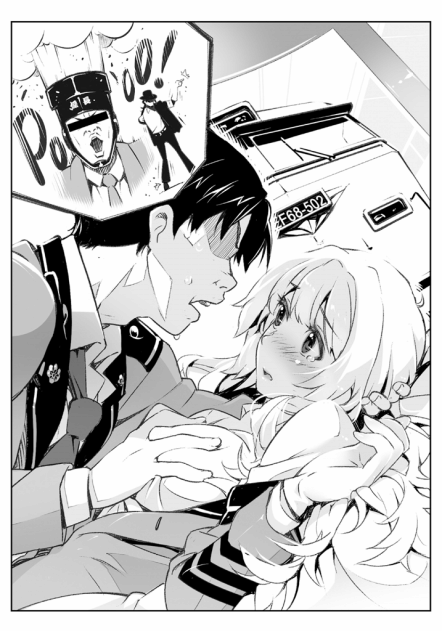
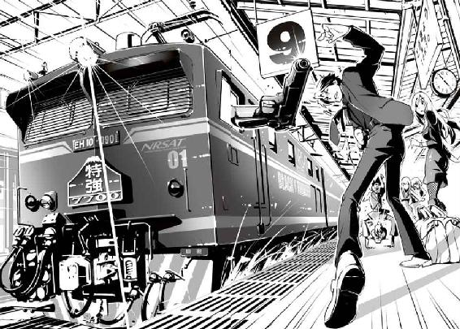

| ＲＡＩＬＷＡＲＳ！1 (クリア文庫) | |
| 豊田巧 | |
| (2012) | |
ＲＡＩＬ ＷＡＲＳ！ ―日本國有鉄道公安隊―
豊田巧

Ｍ００１●緩い生活、出発進行
おぉぉぉぉー
俺は声をあげて見入ってしまった。
整った動きで一斉に前に出る銀色の盾。
対するグループは動かず、背後の大きなオレンジ色の旗だけがバタバタとはためく。
決してファンタジーの中の話じゃないぞ。現実、リアルだ。
少しだけ曲面を帯びたジュラルミン製の盾は、隠れながらでも向こう側が見えるように、目の部分だけ長方形に切り取られ、正面には國鉄のシンボルマーク「動輪」が誇らしげに輝く。
ここは田町にある國鉄車両センターで、その一角を過激派グループが占拠している。
それに対して、國鉄内の警察組織「鉄道公安隊」が出動して対峙しているのだ。
ガツン！
投げられた石が、盾に命中して派手な金属音が鳴る。
うわぁ、当たったら痛そう......。
盾の表面には小さなヘコみが残るが、誰も一人として動かない。
石の当たったあたりの盾が一斉に一歩横へ移動し、細長い通路ができた。
......おっ、女の人？
開いた通路から真っ白な制服に身を包んだ美人が、ゆったりと歩いて出て来た。
目にはかしこそうなフチなし眼鏡をかけ、真っ赤なリボンで一本にキュっと束ねた黒髪は、風を受けてふわっとなびいた。
屈強な男の人が、横から黒いハンドマイクをその人に手渡す。
今、投石されたら当たってしまいそうな距離なんだが、この人からわき出てくる雰囲気に圧倒されて、グループは固まってしまっている。
何だろう......この人は......。
俺も空気に飲まれたんだろう、一気にグッと引き込まれてしまう。
クォォォォォォォォン
スイッチを押した瞬間大きくハウリング。
別に焦る事もなく、さっと音量を調整してフフっとマイクテストを行い余裕の顔。
こうなると、失敗した姿でさえ格好良い。
「列車妨害グループに告ぐ！ 君達がいる場所は車両センター内の線路上であり、國鉄への不法侵入である。即刻退去しなさい」
丁寧ではあるが、説得力のある声で続ける。
「なお！ この警告が受け入れられない場合は......実力をもって排除する！」
投石を行っていたグループには明らかに動揺が走り、そのまま誰も言い返さなければ降参してしまいそうな空気だ。
二十数名のグループ内では、コソコソと小声で相談が始まる。
そんな中、突如一つの弾が空気を切り裂いた。
パーン！ キィンンン！
気弱そうな青年が緊張感に耐えきれず、エアーガンの引き金を引いたのだった。多少改造してありそうなその銃は人に当たっても死ぬことはないだろうが、顔にでも当たれば大ケガしそうだ。
怯えた手元で撃った弾は女の人の足元付近に着弾して、小さな砂ぼこりを舞い上げた。
うわっ!? うっ、撃ちやがったー！
すぐ側から二枚の盾が、女の人をガードするためにダッと飛び出した。
しかし、女の人の身長は盾よりも少し高く、首から上はまだ見えていた。
その人はおびえるとかと思ったが、予想外にニヤっと笑った。
「こっ、この！ ぜっ、税金ドロボー。國鉄は早く分割民営化しろ！」
射撃した青年は後戻りできない恐怖からか、震えながら力いっぱい叫んだ。
それが合図のように、一時は静まり返っていたグループは息を吹き返し、みんな口々に「國鉄反対！」「民間へ移管しろ！」などと叫ぶ。
日本最大の鉄道会社である國鉄は国が運営している。
明治に始まった日本の鉄道事業は、国家が主導した事もあって、今でも全国の主な鉄道は國鉄のままだ。
彼らの言っているのは、全国の鉄道を一社で扱うマンモス会社國鉄を、バラバラにしてしかも民間の会社にしろと言っているのだ。
そんなの......絶対無理むり。
ガツン！
グループは線路に敷いてある石を、次から次へと鉄道公安隊へ向かって投げ始めた。
最初は数も少なく勢いも無かったが、石と叫び声はどんどんエスカレートしてくる。
「そうだ！ そうだ！」
「帰れかえれ！ 國鉄の犬！」
ガツン、ガツン......
かなりの数の石が、ジュラルミンの盾を叩く。
石が顔にでも当たったらどうすんだ？
鉄道公安隊では女の人とマイクを渡した男の人が、何かコソコソ話をしている。
音声は小さかったが微かに聞こえた。
「もう限界ですね......。これ以上はこちらにも被害が出る可能性があります」
すっくと立ちあがると、女の人は眼鏡越しにグループをにらみつけた。
「そうだな。それに......バラストを投石に使うだと......こいつら、許せんなっ」
そう言うとグっと胸を張り、もう一度マイクに向かって叫ぶ。
「君達は完全に包囲されている！ 無駄な抵抗はやめて大人しく投降しろ！」
その声で一瞬は攻撃が止んだが、
「うっ、うるせー」
という声で再開され、さっきよりも激しい投石攻撃になった。
「しょうがないな......」
女の人は腰に付けてあった三角形のホルスターのフタをパチンと開け、中から西部劇にでも出てきそうな大きなリボルバー銃を取り出し空へ向けた。
ダアーーーン！
ほっ、本物!?
安全の国日本で、銃を撃つ人がいるなんて信じられない！
俺の見ていた画面が大きく下へブレ、映像は女の人の手もとをアップにした。
そこには、ゆったりと銃口から上がる煙が写っていた。
銃声なんて聞いた事あるか？ そんなの普通ねぇよなっ!?
広い車両センター内に、グワングワングワンと発射音がいつまでも反響する。
たぶんグループでも、初めて聞く銃声だったのだろう。
動けなくなる者、しゃべれなくなる奴、とにかくみんな一発で静かになった。
音に驚いて、投げようと持っていた小石を落としてしまった人もいた。
静まりかえったその空間で、一人、女の人の声だけが響き渡る。
「お前ら！ その石はなぁ！ 列車の重量を効率良く分散させて、お客様が心地よく列車に乗れるようにするとても大事なバラストだぁ！ 人に向けて投げていい石じゃねー！」
銃声に続くセリフで、グループの動きは完全に止まった。
俺もなんだかわからないが、そのセリフにシビれた。
すでに不法占拠なんだから、今更線路の石の事を言われても動揺しないはずなんだが、この人の迫力と誰が聞いても間違いない正義の理論に、投石がものすごく悪い事に感じてしまったのだろう。
彼女はその瞬間を見逃さなかった。
「公安機動隊！ 横二列、突撃用意！」
ガシャン、ガシャン
公安隊は一斉に動いてたった二回の動作で、一気に戦闘モードに変化した。
グループが一気にひるむ。
「総員、突撃！ 犯人グループを確保せよ！ 私にっーー！ 続け！」
女の人は銃を持った腕を、グンとそのまま振りおろして叫んだ。
「ウオォォォォォ」
地響きのような返礼で一帯の雰囲気が一気に変わった。
二段の一直線の波が、女の人を先頭にしてグループに迫る。
ザッザッザッザッ......
動きは思ったよりも早く、列は一糸乱れる事も無い駆け足。
うわぁ、なんか、すげー。
受ける側のグループは、あっという間に崩れた。
何とか踏みとどまって抵抗する者もいるが、ほとんどの者は逃げ出そうとしている。
しかし、車両センターの外にはパトカーの赤色灯が何十個も回り、警察官が柵の外で大勢待ち構えている。
だから、逃げた者は片っ端からとりおさえられた。
公安隊は逃げた者には目もくれず、何とか立ち止まり投石や改造エアーガンで立ち向かうとするグループの残りに向って一気に突進する。
先頭を女の人が突っ走るが、不思議と投石や弾は当たらない。
そして、グループの直前に到着すると、銃を高く上げて指示をだした。
「包囲展開！」
まとまった男だけの絶叫を合図に制服集団は左右に展開。
「うおぉぉ」
「全員確保―!!」
円を描くように取り囲んでいた集団が、一斉に中に向かって押し込んでいく。
簡単に言うと、ものすごいラッシュアワーだ。
こんな状態じゃ身動きもとれないだろう。
三百六十度から一斉に盾を使って、揉みくちゃにしているのだ。
こうなると、特に警棒などの武器を使用しなくても中の人間は無力化されていく。
カンカンカンカン......。
ジュラルミンの盾がぶつかり合う音だけが響き渡る中、グループの人間が一人また一人と引きずり出される。
外へ出された人間はすでにヘロヘロで、両脇を抱えられて警察へと引き渡される。
そうして人数をガンガン減らし、やがては全員捕まえてしまった。
「こっ、こんな事でなぁ！ 今に見てろ、こくっ......」
ブチっ、ガサ――
うん!? どうした？
グループのリーダーと思えるような人間が、断末魔のような状態で何かを演説しかけた所で、スマートフォンの映像が途切れてしまった。
通信状態が悪いのかと画面を見直すが、きれいにアンテナは３本立っている。
なんだよ。最後まで見せろよなっ。
俺は学校から帰宅してからずっと、こいつで事件を見ていた。
今まで見ていたのは、現場からのライブ映像だ。
と言っても報道関係からのテレビ映像ではなくて、國鉄の分割・民営化を目指す過激派組織『ＲＪ』の無料配信映像だ。
さすがに犯人側から見た映像はド迫力だった。
ズラっと並ぶ紺の制服にジュラルミンの盾を持つ鉄道公安機動隊。
続いて、犯人を説得する白い制服の女の人、最後は伸縮式警棒を振りかざし鬼のような勢いでグループに向かって突撃してくる人の姿が全て写っていた。
ただし、犯人グループサイトからの中継画像なので、彼らの主張コメントである「國鉄分割民営化！」「この税金ドロボー」がたまに画面を横切るウザさはある。
「なんか大変だなぁ......両方ともさぁ」
それが俺の素直な感想だ。
俺は単に野球の乱闘シーンを見るようなつもりで見ていただけで、まったく彼らの主張には興味がない。
この犯人たちはここで何をやっていたかと言うと、國鉄の列車を妨害していたのだ。
車両を格納しておく車両センターの出口を占拠して、列車の妨害をするのが彼らの狙いだ。
言い分としては「國鉄は税金ドロボーであるから制裁を与えるべき」という事らしい。
こんな事をしたからといって、日本全国にまたがる巨大な鉄道組織が無くなるとも考えられないが、確かにテロに狙われるような鉄道には乗りたくないなとは思う。
彼らとしては國鉄人気が落ちるように、迷惑をかけ続ける事に意味があるんだろう。
まぁ俺には関係ねぇけどなっ。
俺の名前は高山直人、桐生鉄道高校二年生だ。
どこにでも居る普通の高校生なんだが、学校名だけは少し気になるだろ？
桐生鉄道高等学校は一般の勉強はある程度にしておいて、高校三年間みっちり鉄道や交通に関する産業教育を行い、鉄道界で即戦力となる学生を育てる学校だ。
だから普通科はなく、旅客輸送科と機関整備科しかない。
つまり、がっちがちの鉄道専門高校って訳だ。
俺は子供の頃から電車が好きで運転手になるのが夢だった。
そんなのは子供の頃の夢だけにしとくもんだが、結局俺は鉄道好きを進路にしちまった。
ただ、自分でいうのもなんだけど、それ以外は普通だと思う。
小学生の時は少年野球もやっていたし、こづかいの全てを鉄道趣味に使う事もない。
新型電車が走るからといって、他の奴みたいに学校を休まないしな。
有名な歌や漫画だってちゃんと知っている。
それに、女の子との付き合いもそれなりにある......。
高校生二年生なら「まあそんなもんだ」という程度だけどさ。
鉄道専門の高校だったら男子ばかり、と思っているだろう？
でも、実はたくさんの女子が通っているんだ。
桐生鉄道高等学校は、古い学校で長い間男子校だった。
でもさ、最近は駅員さん、アテンダントさん、車掌さん、そして運転手さんまで女性がたくさん働いているだろう？
だから、うちの学校でも十年前の２００２年からは、女子でも入学出来るようになって、今じゃあ女子も男子も半々ってくらいに勢力が拡大している。
スマートフォンをソファに投げ出して、俺はテレビをつけた。
既に騒動は終わってしまったらしく、銃を撃った女の人がインタビューに答えていた。
インタビュー画面の下には「日本國有鉄道・東京公安機動隊隊長・五能 瞳」とテロップが流れている。
携帯の映像は荒くて良く分からなかったが、地デジ移行の時に親父が調子にのって大型にしたテレビで見ると、五能隊長はアップにも耐えられるすげー美人だった。
眼鏡の奥には冷ややかな細く切れ長な目があり、ピンクがかった白い肌、そしてスラッと背が高く手足は細くて華奢。
あんな大きな銃を扱えるなんてとても思えない。
白いＹシャツに紫色のネクタイ。ピチっとしたタイトスカートをはいて、ピカピカに磨いた黒の革ブーツでビシッと全身がきまっていた。
あんな乱闘騒ぎの後なのに、どこも乱れてはいない。
正直その姿は立っているだけで格好良い。
「我々はお客様が、安全に楽しく列車に乗って頂ける事を目標にしております。國鉄はサービス第一」
ここでカメラに目線を写して五能隊長は続けた。
「そして、鉄道の安全を守る鉄道公安隊は強く・正しく・親切にがモットーですから」
さっき見ていた映像の時とは、まったく違う優しい表情で笑った。
女性レポーターは、五能隊長に疑うようにして聞いた。
「そうはおっしゃいますが、先ほどは拳銃での威嚇射撃まで行ったとの情報もあり......それはやりすぎなんじゃないのかっ、という声もテレビ局には来ておりますが？」
しかし、五能隊長はまったく機嫌を損ねる事なく、絹糸のように柔らかい長い髪に手を通しながら答えた。
「あれは空砲で、運動会のよぉーいドンと同じです」
えっ!? 本当に......？
空砲って、あんなすごい迫力なのかっ!?
こう言われてしまうとレポーターも続けようがない。
後は、お決まりの「國鉄の赤字体質は問題じゃないのか？」とかありきたりのつまらない話になってしまったので、中継もそこで終わってしまった。
「ふぅぅ」
俺はテレビを消して大きくため息をついた。
「......まったく余計な事すんなよなっ」
ＲＪが國鉄を攻撃するなんてすげー迷惑な話だ。
なぜかと言うと、俺は國鉄へ就職しようと考えているからだ。
こんな所で分割民営化なんかされちまったら俺の就職が危なくなっちまう。
だから今はみんな騒がず、静かにしていてくれ！
つくづくそう思う。
そんな訳で......ついに俺は電車好きを、進路からついに人生にしちまった。
國鉄に入りたいのは、電車の運転手になりたいからだ。
だったら私鉄でもいいか？ となるが、俺は断然國鉄だ！
まずは子供の頃から夢だった新幹線を動かせるようになって、将来はリニアモーターカーを運転してみたいからだ。
リニアモーターカー建設は何兆円にもなる巨大プロジェクト。
そんなの、分割されて民間の会社になってしまったら実現不可能になってしまう。
そして、國鉄へ行きたい理由はもうひとつ！
それは、國鉄だったら絶対につぶれないし、リストラもないからだ。
國鉄は日本で最大の鉄道会社であり、いくら赤字になったって税金が投入されるから、親方日の丸の超安定国有企業なのだ。
しかし、俺がいくら「入りたい」とは言っても入れるかどうかは別問題。
國鉄は去年の企業ランキングでも３位に入るような人気企業だからだ。
うちの高校は元國鉄の幹部が学校顧問を務めている事もあり、太いパイプがあった。
バブル景気の頃には人手不足で、ほとんど全員、國鉄に入れていたと聞く。
しかし、さすがに近年の不況による就職戦争が厳しく、鉄道学校へ来ていながら普通の企業へ就職したり、大学へ進学していく奴も出ている。
ただ、学校としては鉄道高校と名乗っておいて、今さら普通学校になる訳にも行かない。
そこで各鉄道会社に勤めている学校ＯＢや天下り幹部を引っ張り込んで「学生鉄道ＯＪＴ」という物を作りだした。
これは、高校二年生になったら鉄道会社で働くという研修制度だ。
要するに、学生を早くから売り込もうって仕組みで「気にいったら採用して下さいね」という作戦だ。
でも、これは長期間に渡る就職試験のようなもんで、反対に研修中にミスをすれば完全に就職がパァになってしまう。
だから研修とは言っても、学生は就職面接のつもりで死にものぐるいで働く事になる。
誰がこんなうまい方法を考えたんだか......。
学校側は気楽なもんで「研修は授業の一環とみなします」だそうだ。
つまり研修は企業によって期間はまちまちなので、最悪一年間以上学校へは来なくてもまったく問題ないとさ。
そして、俺は二年生に上がってすぐの三者面談で國鉄への研修を希望した。
五月に入り教室の友達の中には学生鉄道ＯＪＴが始まり、毎日鉄道会社へ行っている奴も出てきている。
そろそろ俺にも國鉄での研修話が来ても良い頃なのだが......。
俺は何の不安もない安定した人生を歩みたい！
平凡な学生時代を過ごし、今だけ頑張って國鉄に就職する。順調に駅員、車掌、運転手と出世して、社内合コンで知り合ったかわいくて料理の上手い國鉄女子社員と結婚して、駅から近くてものすごく豪華と言われる國鉄社宅で家庭を持ち、生まれた長男に鉄一郎と名づけ、ぶかぶかの國鉄制帽を被せた写真を新幹線の前で一緒に撮る。やがては子供も國鉄に入社し俺は数年間一緒に仕事をした後、定年でみんなに花束をもらいながら退社し、その後は関連会社への天下りで余生を過ごす。
最高のド安全人生が目標で、さっきみたような騒乱とは一生無縁でいたいのだ。
この研修を何とか無難に乗り切り、後は親方日の丸で心配なし！
後ろ向きに全力で頑張って走る人生が俺は大好きだ！
カモン！ 一生安泰國鉄人生！ 成果主義なんてまっぴらごめんだ！
Ｍ００２●学校、閉塞注意
次の日も俺はいつものように学校へ通う為、國鉄高崎線に乗った。
オレンジと深い緑色という、まるでみかんのようなツートンカラーの長大な編成が駅に滑り込んでくる。
高崎線は、湘南色の１１５系がたくさん走っている。
最初から相当丈夫に作ったらしく、子供の頃から変わらない。
相変わらずの満員電車に乗り込み、片田舎から大宮へ向かう。
親父が中途半端な給料なのに、マイホームを購入したものだから通学距離はやたらと長い。電車に乗り駅から更に学校まで歩くから結局一時間半はかかっている。
近くにも高校はあるが、関東で鉄道高校はここにしかないので俺には選択の余地はない。
最寄駅からの通学路の話題は、普通の学校なら昨日のスポーツや芸能かドラマの話題だろうけど、ここではやはり昨日の車両センターでの騒動がトップニュースだ。
親が國鉄関係者という家庭も多いので、
「実はあの時の銃は......」
という外には出て来ない話も聞こえてくる。
俺は一緒に登校する奴は居ない。
別に友達が居ないって訳でもないが、朝からテンション上げてワイワイと行くのはあまり好きじゃない。
だから、通学路はスマートフォンにダウンロードした曲を聞きながら黙々と歩く。
今日はテクノのような曲を聞いている。
有名な外人歌手の曲じゃなくて、國鉄中央線の走行音や車内アナウンスを加工したサウンドをバックに、車掌のマネをしたＤＪが歌う曲だ。
「ガチ鉄オタじゃねーか」
と言われそうだが、これは俺が自分で見つけたんじゃなくて友達の録り鉄が見つけて来て、俺に教えてくれたのだ。
ちなみに、録り鉄っていうのは鉄道趣味の中でも音を集める趣味の人の事を言う。
鉄道沿線に立って列車の通過音を録ったり、駅での列車案内や発車ベル、更に電車内では車内アナウンスや走行音をレコーダーに録音して、それを家で聞くのを楽しみとしている。
この曲を教えてくれた奴の家には、鉄道廃品大会でセリ落とした初期型新幹線〇系のグリーン車シートが部屋の中央にデーンと置いてある。
そいつはそれに座りながら、録って来た音を大きなスピーカーでずーっと聞いている。
そんな曲を八曲くらい聞くと校門前に到着する。
ここで俺達はポケットからカードケースを取り出す。
学生はそれをズラリと並ぶ自動改札機に当てる。すると中のＩＣカードＫＯＫＵＫＡが反応する。そして「ピンポン！」とクイズの正解音のような音がして、壊れそうな勢いでバタンと扉が前に開く。
このＫＯＫＵＫＡは國鉄の定期券も兼ねている便利なものなのだが、國鉄はまだまだ手動改札が多く、これが使えるのは関東では郊外の一部の駅だけなのだ。
関西では私鉄とのサービス競争でかなり導入されていると聞くが、こっちでは日本の玄関口東京駅でさえまだ手動改札だ。
私鉄は私鉄でＰＡＮＤＡというＩＣカードがあるのだが、ＫＯＫＵＫＡとはまったく別物でカードを使い分けなくてはいけない。
提携してくれれば便利なのに、そんな様子はまったく見られない。
昇降口の屋根には横断幕のようにどわぁとスローガンがかけてある。
『日本のダイヤは一五秒単位！ 鉄道員は遅刻厳禁！』
鉄道会社は時間に厳しいので、この学校も時間には超うるさい。
俺は靴を履き替え階段を登り二階にある自分の教室へ入った。
そして、窓際にある自分の席に学生鞄を置いてドカっと座った。
朝の教室はいつもザワザワしている。
昨日も会ったクラスメートなのに、一日たったら何をそんなに話す事があるのか不思議だ。
「今日くらい研修の話......あるかな......」
俺は着席したまま背伸びをするように、大きく手を前に出して眠気を飛ばす。
すると、録り鉄がタタっと近づき、俺の前にやってきて顔をのぞき込んだ。
「おっはよ！ 最近心配そうな顔を良くしているねー高山君？ 好きな子でも出来た？」
「そんなんじゃねーよ、いつもと変わんないよ」
「ふう～ん」
録り鉄は疑うような目で俺を見た。
札沼まり。こいつがさっき話していた録り鉄。
絶対男だと思ったか？
最近は女の子の鉄道好き鉄ガールが急増中だ。
札沼もいつもピンクの小型ＩＣレコーダーを抱えて、日本全国に鉄道の音を録りに出かける旅行好き鉄ガールなのだ。
こんな学校だから鉄道好きの友達には困らないのだが、濃すぎる奴は正直付き合いにくい。
俺は電車は好きだが、鉄オタとの知識合戦みたいなのはちょっと苦手なのだ......。
そんな時にこいつは
「電車の走る音って音楽みたいだね」
と言って単に音だけを集めて聞くだけの鉄道好きだったから付き合いやすかった。
ちなみに新幹線のシートを買った理由は「普通のイスじゃあ反響音が違う」からだそうだ。
見た目は普通で性格は家庭的。
趣味は嫁入り前の女の子のようで「料理、洗濯、掃除」とあっさり言う。
初めて聞いた時は思わず「趣味じゃねーよ」と突っ込んだ。
それほど音が好きなら音楽関係にでも行くかと思ったら、進路目標は食堂車のアテンダントで、確かにとても似合いそうな気がする。
部活も茶道部で俺の蒸気機関車研究会のような鉄道に関わるような部活ではなくて、いたって普通の部に所属している。
「札沼には研修の話来た？」
札沼は俺の心配が分かったような顔で言った。
「あ～その事で......そんな顔なの？」
「なんだよっ！」
俺は見透かされるのが恥ずかしくて少し強く言い返した。
「私はアテンダント希望だからねぇ～まだ先だと思うよ」
「そっ、そっかぁ......」
「高山君はやっばり？ 國鉄への就職希望変えていないの？」
「あぁ......」
俺は呟くように言った。
それは、周りの奴らにはあまり聞かれたくなかったからだ。
この学校で國鉄に就職を希望するのは、大学受験で日本一の東京学院を志望するのと同じ事だ。成績が学年トップでもない俺がそんな事を言うとバカにされそうな気がしてしまう。
「それが心配の原因って訳だぁ」
「そっ、そんなんじゃねーよ。ただ......そろそろかなって期待しているだけさ」
俺は窓の外へ目をやった。そこからは昇降口が見下ろせた。
放送部による棒読みの声がスピーカーからゆっくりと響く。
「校内へのおぉ、駆けこみはあぁ、大変危険ですうぅ」
遅刻への最終案内。
これが聞こえたと言う事は始業三分前って事で、聞いた学生は全力で突っ込んでくる。
この時間の自動改札機は、連続正解のようにピンポンピンポンと鳴りまくる。
しかし、やがて時間になる。
キーンコーン、カーンコーン――
ブー、ブー、ブー
「あっちゃー、ダメかよ！」
「なんでよっ、まだチャイム鳴り始めでしょ！」
クイズ不正解のようなエラー音と共に学生の悲しい声がいくつも聞こえる。
チャイムが鳴りはじめたら、校門の自動改札機は一斉に×のサインが出て、入る事が出来なくなってしまうのだ。
遅刻した奴は一番右端にある守衛さんの居る有人改札を通って、遅刻証明を受け取ってから中へ入る。
この時ＫＯＫＵＫＡには、遅刻の分数が記録され学校のデータベースに転送される。
「一秒遅刻するというのは単に本人が一秒損しただけにはならない、そこに関わっている全ての人の一秒をも奪うのだ。クラスだったら三十五名で三十五秒、東京駅だったら一日の乗降客数五十万人かける一秒で五十万秒分の時間を奪う事になる」
と校長先生は事あるごとに言い続けている。
しかし、五十万秒って何日分だ？
要するに、どんな事があろうとも鉄道関係者は遅刻してはいけないちゅう事だ。
その日の俺は、結局あまり授業にも身を入れる事も出来ずに一日を終えた。
授業よりも研修はどうなるのかが心配だったからだ。
しばらく教室に残っていたが誰も来ないので、蒸気研へ顔でも出すかと思い廊下へ出た。
ここは他の学校から見ると「なんだそりゃ」って部活が一杯ある。
定番の旅行部、鉄道部を始め、ローカル線研究会、廃線反対同好会、スジ屋の会など、鉄道趣味の細かいグループに分かれてクラブがある。
ダイヤグラムを研究するスジ屋の会は、早朝から「朝練」もあるが、俺がいる蒸気研は主にＳＬを乗りに行くのが活動でそれほど厳しくはない。
廊下へ出ると、担任の福知山先生がいて声をかけてきた。
「おぉ、高山。丁度いい所へ」
おっとこれは、もしかして！
「先生！ 研修の話ですか!?」
「あっ......まぁ......そうだ」
先生は目を伏せるようにして、クルッと後ろを向いた。
何も言わないが、後ろをついてきなさいって事だな。
来た！ 来た！ ついにこの瞬間が来たぜ！
俺は先生の後ろをスキップ直前の軽い足で続いた。
福知山先生は今年五十四歳になる、う～ん正直ぱっとしない先生だ。
薄くなりつつある髪の毛を無駄な抵抗に七三に分け、ベッタリと整髪料でくっつけている。
俺達はシンナー臭いその匂いと強力な接着力から「あれはボンドだ」と言い合っている。
いつも同じグレーのスーツを着ていると思っていたら、夏と冬で五着づつ同じ形で同じ色のスーツを買って着回しているという衝撃の事実を校内新聞で知った。
一階廊下の奥には普段あまり使わない部屋があって、そこが進路指導室になっている。
教室の半分から奥をパーテションで仕切ってあって、授業で使う列車の扉やパンタグラフと言った教材が、上から飛び出しているのが見えた。
まぁ簡単に言うと倉庫みたいな部屋だ。
先生は銀縁の眼鏡の奥にある目を、しょぼしょぼさせながら言った。
「かけなさい」
俺は机を挟んで手前にあったパイプ椅子に座った。
先生もボロいパイプ椅子に座りギッと小さな音がした。
「でぇ......國鉄での研修の件だがな......」
「はい！」
俺は子犬がエサをもらう時のように、はぁはぁと喜んで先生を見ていた。
「希望者は多かったのだが、他の者は全てダメで......君だけがぁ......なぜか國鉄の学生鉄道ＯＪＴを受けても良いとの通知が来た」
なぜかとは余計なお世話だが、この際どうでもいいや！
「はい！ ありがとうございます！」
やったぁー！
これで安定人生への夢の一歩を掴んだんだ！
俺は声をあげて喜びたい心境だった。近くに札沼がいればハグしていたかもしれない。
俺が今まで生きてきてこれ程嬉しい瞬間は無かった。
ここに受かった時も嬉しかったが、そんなのはまったくの低レベルで、今、最上級の喜びが全身にひしひしと伝わって来た。
俺一人かぁ......
そこには優越感もあった。
國鉄は人気企業だからうちの学校でも研修希望者は多い。
クラスでもみんなはあまり言わないが、何人か希望していると聞いた。
しかも、國鉄は不況で採用者数を減らしており、研修でさえも昔ほどは受けられないとも聞いていたからだ。
でも、さすがに十人程度は受けられるだろうと思っていたが、状況は考えていたよりもずっと厳しくたったの一名だった。
俺の成績は正に中の中。
きっと俺より成績が上の奴も研修を希望したはずだ。
だから先生は「なぜか」と言ったのだろう。
國鉄を希望する者は、成績表と各自が直筆で書く小論文の提出が義務付けられている。
あんな成績なのに、俺だけに通知が来たって事は、論文の内容が良かったって事か？
そうとしか考えられん。
今年の小論文は原稿用紙十枚以内で、テーマは「採算の悪いローカル線はどうすればいいか？」だった。
俺は一週間徹夜の連続をしながら四回書き直した。
そして、俺の思いの全てを込めて、原稿用紙に穴が開きそうになるぐらいシャーペンを押しつけて書きあげた。
俺の結論は「使命を終えたローカル線は廃止すべきだ」にした。
今まで一本も廃線を行っていない國鉄にそんな事を書くのは危険じゃないかとも思ったが、ここで一本筋の通ったしっかりした学生なんだと思わせたかったし、何よりそうしないと俺が入社してから分割、民営化されてしまうと心底思って書いたので、ある意味魂はこもっている。
ローカル線廃止の選定基準はこうだ。
一、営業キロが百キロ以下で鉄道網として意味が少なく、沿線に住民が少ない。
二、いつも乗るお客さんが片道で三千人以下、もしくは貨物の取扱が一日六百トン以下。
三、バスや船、飛行機に負けている地域でお客さんが減ってきている。
そして、この基準に照らし合わせて見て八三路線は廃止すべきと結論づけたのだ。
この先見の明の論文が採用の人の目にでも止まったのか!?
これはひょっとすると幹部候補かぁ？
俺の心の中の未来図はどんどんふくらむ。
くわぁ～～行くぜ國鉄！
「高山君。た・か・や・ま・くん！」
前を見ると先生が顔を机に乗りだして大声で言っていた。
「はいはい、聞こえてますよ」
先生は体を戻しながらはぁぁと溜息をついた。
「何度も呼んだがボンヤリしているから大声で言ったんだ！ お前大丈夫か？」
どうも俺は妄想に入っていて、すっかり先生の声が聞こえなくなっていたようだ。
「しかしなぁ......ちょっと話しておかなきゃならん事があるんだ」
いつでも暗いネガティブな人だが、今日は更にくれーよ。
「なんですか！ 國鉄での研修が出来るなら、俺はどんな事でも大丈夫っすよ！」
両手で机をガシッと掴んで、俺はやる気まんまんの態度で言った。
「そっか......そう言ってくれると言いやすいな」
先生は大きな封筒から一枚の紙を取り出し俺に渡した。
量にして五行程度しか書かれていない文章を俺は一秒で目を通した。
あっ、あん!?
人間あまりにも驚くと声も出ない。
もう一度ゆっくりと読み返し、思い切って息を吸い込んでから叫んでやった。
「何なんですかぁーーーーこれはーーーーーーーーーー！」
ガシャン！
俺は一気に立ち上がったので、座っていた椅子は金属音を鳴らしながら出入口へ向かってすっとんで行った。
バン！ バン！
俺は力の限り机を叩いた。
机の上からは書類が落ちて床にどわっと散乱する。
まったく反応をせず、ぼんやり座っている先生を見下ろすようにして俺は怒鳴った。
「学校は何やってんですか！ こんなの俺にどうしろってんですか？」
「いやいや、学校としてはだなぁ」
こらっ！ 後頭部パシパシ叩いて誤魔化すなよ！
「先生は人ごとだからそんな落ち着いてられるんですよ！」
「高山君......落ち着きたまえ」
たまえじゃねーよ！
人ごとだと思いやがって！
妙に落ち着いた口調が余計に腹が立つ！
俺の怒りは収まらない。
「先生なら行きますかー!?、本当にこんな研修先へ行きますかってんだっ。このボンド頭！」
ガシャン！
先生もブチ切れて机を掴んで立ちあがったので、椅子が壁まで飛んで行ってぶつかった。
双方机を真ん中に挟んで、顔がくっ付きそうな睨み合いの状態だ。
「話を聞け！ 高山ぁ！ 國鉄様がそういう研修先って決めたら、俺達学校側は『はいそうですか』と言う事を聞くしかしょうがないんだぁ！」
あっ～!? おうっ!?
普段温厚な人に突如怒鳴られるとびっくりしたが、俺は最後の力で言った。
「そこを何とかするのが、先生ってもんでしょうー！」
バン！ すでに手は痛かったが、構わずもう一度机に叩きつけた。
「そんなの知るかー！ 先生にそんな力ある訳ねーだろー！」
なっ!? 何だよ？ 知るかって......。
いつもは学校では、あんなに威張っているくせに......。
「「はぁはぁはぁ」」
二人で肩で息をしながら対峙した。
学校の事は担任の先生に言えば、大抵の事は何とかなったような気がしていた。
だから、この言葉は割とショックで、ここで何を言っても仕方ないというように感じた。
学校も先生も、社会に出ればなんの役にも立たないって事か......。
呆然としている俺の横を通って、先生は転がっていた椅子を拾って俺のケツの下へ置いた。
「まぁ、とりあえず座れ......」
俺は力なく落ちて、ダラしなく浅く椅子に腰をかけた。
目は見る力を失ったように何も写らない。
俺が机を叩いた時に落ちた例の紙を、先生は丁寧に拾ってもう一度俺の前に置いた。
そこには変わる事の無い俺の研修先が今でも明記されていた。
「高山直人、左記の者を國鉄学生鉄道ＯＪＴを受ける事を認める。
尚、研修配属先は『運輸省鉄道総局・國有鉄道公安隊』とする」
俺は就職希望は國鉄だったけど、よりにもよって研修が鉄道公安隊だったのだ。
鉄道公安隊とは戦後増え続ける鉄道犯罪に対応する為、警察ではなく鉄道に詳しい國鉄職員から隊員をつのり、鉄道内でのあらゆる事件を解決する為に作られた組織だ。
この鉄道公安隊は警察権を持っており、國鉄敷地内であれば逮捕も出来る、國鉄だけにしか存在しない唯一の鉄道警察なのだ。
現在、約三千名の隊員が居て、昨日見た人達はその中でも精鋭の鉄道公安機動隊員だった。
要するに、俺の大嫌いな揉め事ばかりの配属先ってこった。
憧れの運転手への道はどうなるんだ......安定した國鉄生活は......。
「俺は進路に國鉄とは言いましたが、俺が希望したのは運転課であって、鉄道公安隊じゃありませんよ......」
俺は力なく言った。
「そうか......そこまで言うのなら別に断ってもいいんだぞ。これは希望であって別に強制されるものではないからな」
先生は通知書を自分で持って封筒に戻しながら続けた。
「しかし......今年の運転課希望者はどうも全員こういう研修らしいぞ、それに......ここで断ったら、お前は今後絶対國鉄には入社は出来なくなるのは覚悟しておけよ」
「えっー!?」
おい！ 軽く人の人生プラン台無しにすんなよ。
「当たり前だろう。一度國鉄様から研修に来ても良いと言われたのに、鉄道公安隊だったら嫌ですみたいな対応したら、これは転勤など会社命令に従わない奴だなと思われて、ブラックリストへ入るに決まってるだろう。もうすでに学校名も名前もバレバレだしな」
「先生マジっすか？」
しっかりうなずいてから先生は話した。
「ここだけの話だが、過去に一度國鉄研修を断った生徒がいたんだが、そいつは國鉄本体はおろか、駅の立ち食いそば屋の出入り業者にいたるまで全ての面接に落ちた......」
先生は散らかった書類を、カンカンと机で整えてしまい始めた。
ガーン......頭の中で鈍い音が響いた。
正に天国から地獄だ。
少し前まで天にも昇る気持ちでいただけに、そこからの急降下は落差も大きい。
あんな論文書いた以上、少しは目立っちまっているに違いない。
だからここで研修を断って、しれっと来年になって就職活動をはじめたとしても、國鉄関係には絶対受からない......という事か......。
あれ......そういや先生......その前に何か言ってたな？
そうだっ！
ガタン！ 俺は机を掴み再び立ち上がった。
「まだやるか！ 高山」
先生がヘニョヘニョのガードで身構えた。
「さっき言った、運転課希望者は今年は全員鉄道公安隊での研修って本当ですか？」
先生は腕を組んで言った。
「それははっきり分からんのだが、学校ＯＢから聞いた話だとそう聞いている。だから別にお前だけが公安隊での研修ではないと思うぞ」
そうか......それなら仕方ないか......。
國鉄へ入るなら誰もが通らなくてはならない研修ならば。
とてつもなく不本意だけどな......。
それに将来は運転士になれるんなら、研修で行く鉄道公安隊なんてバイト感覚でいいさ。
先生は遠くに目線を移して続けた。
「國鉄を辞めた先生がいうのも何だが......鉄道公安隊は正義の部署だ。だから、そんなに悪くはないと思うぞ。それにな......最初は人生というのは川に流されてままならない物だ、しかし、色々な経験を積めばやがて立ち上がり、船の舵を握り自分で行きたい方向へ向かえるようになり、やがては自分が流れを作れるようになるもんだ。人間は経験が全てだ......悪い事にはならないんじゃないか？」
生徒に何かを語って導くには先生の容姿は重要だ。
すみません。先生何を言っているのか良く分かりません。
まったく、バブル世代で適当に國鉄に入社出来て、勢いあまってコロコロ転職して、最後には先生になった人に何言われても説得力ねーよ。
ボンド頭だし......。
俺は先生のどーでも良い話なんかを聞く前に決めていた。
「先生、分かりました！ 俺、研修行きますよ！」
せっかくなので、とびっきりの笑顔で両手を出して言ってやった。
「おぉ、高山。先生の話を分かってくれたか！」
先生も俺の手をギュッと握り返して、自分に感動しながら言い返してきた。
「はい！ ありがとうございました」
「おぉ、そうかそうか」
これは自分で決めた事で、先生に言われて変わった訳じゃないって。
今だけ頑張って、嫌いな研修を乗り切り何とか親方日の丸にたどりつく！
これこそ俺のモットー「後ろ向きに全力で頑張る」行為にピッタリじゃないか！
こうなったらやってやる。
運転課へ行く為に、鉄道公安隊でも何でもやってやろうじゃないか！
「でな、配属の前には、まず國鉄中央学園での研修が......･」
やってやる！ やってやる！
俺の高まる気持ちの前で、先生は細かい説明をはじめたが良く覚えてない。
俺は顔を両手で叩いて気合を入れた。
Ｍ００３●研修、場内進入
早朝の西国分寺駅。
オレンジ色の國鉄中央線２３３系から、ホームへと降り立つ。
開発当初は錆びの出ないステンレスで作り、銀色にオレンジ色の帯を入れた電車にしようとしたが、当時の運輸大臣が「価格半分・寿命半分の車両なんて冗談じゃない、丈夫が一番！」と発言した事で鋼鉄で作られる事になった。
車体のすみずみまでオレンジ色なのは、鉄の車体が錆びないようにする為だ。
あっ～あぁ、ねみぃーよ。
あんな田舎からここまで毎日通うだけで、寝不足で死んじまうよっ。
ダダダダダン ダダダダダン
複々線の中央を松本方面に向けて、スーパーじゃない普通の特急あずさがノーズをキラリと輝かせ目の前を走り抜けていく。
白色ベースの車体に窓の辺りは水色というあずさ配色の１８９系。
俺はホームを歩いて改札口で駅員さんに切符を渡す。
いくら鉄道学校出身とは言っても、ちょっと鉄道に詳しい高校生程度な訳で、そんな奴がいきなり現場行っても使えないどころか反対に迷惑になる。
それに、鉄道公安隊基本規定には「鉄道公安隊に入る者は、特設公安科課程を修了している事」という決まりがあるのだ。
そこで研修を行う者は、國鉄中央学園という所で特設公安科課程を一カ月の短縮講習で全員受ける事になっている。
この國鉄中央学園は、西国分寺駅のすぐ近くにある。
ここで、鉄道について色々教えてくれるって事か......？
どんな研修かもさっぱり分からないので、俺はとりあえず國鉄の最近の歴史について、ネットで調べて復習しておいた。
國鉄は現在も、総延長約二万五千キロの日本最大の鉄道会社として君臨している。
しかし、国家が運営するというのは全てお役所みたいになるって言う事だ。
だから、職員数も一時は四十万人と一つの地方都市並みに膨らんで、今から約三十年前には完全な赤字体質になっていた。
それに利用者が減りつつあった地方でも、新規の鉄道の建設は相変わらず続け、どんな赤字ローカル線だろうとも廃線をさせずに今日までやって来た。
更に鉄道族議員による選挙対策で日本各地へと伸びた新幹線は、北は札幌から南は鹿児島中央までつながっている。
在来線は在来線で廃線にせず、寝台特急や特急列車を増やし続け、乗客が数人しか乗っていなくとも、定刻通り列車は走った。
なぜこのような事になるかと言うと、國鉄は巨大な組織の為、壮絶な部署同士の縄張り争いがあるからだと言われている。
大きな組織というのは一度初めてしまった物は、なかなかやめられるものではないらしい。
寝台列車を走らせる部署も、新しい線路を作る部署も、実際にやってみると儲からない事にすぐ気がつくのだが、それを廃線や廃止にしてしまったら、社内での発言力が低下して来年度予算も減らされてしまう。
お役所としては、予算は必ず毎年使いきり次年度は必ず増額したいのだそうだ。
そんな事を続けていれば当然「税金の無駄使い」と言われるのは当たり前で、十数年前には赤字が二十兆円を突破して分割・民営化も止む無しという声も国会で出た。
一時は選挙で國鉄の味方をした議員は、全て落選していた時期もあった。
しかし、敵が出来るとこういう組織の団結力はまとまる物で、傑出したリーダー小海総裁を生み出し、一致団結してこの局面を乗り切った。
小海総裁はバブル絶頂期に大ナタを振るい、汐留貨物ターミナルなど首都圏にあった多くの國鉄が所有の土地を高価で売却して、借金を約三兆円まで圧縮する事に成功した。
この後、すぐに日本はバブルが崩壊するが、國鉄は既に土地の売却益と新幹線のサービス向上に努めていた事で、毎年少しの黒字を出す優良企業へと変わっていた。
しかし、喉元過ぎれば熱さ忘れるのも大きな組織の常で、危機を脱出した瞬間、今度は派閥同士で一致団結して、小海総裁を名誉顧問にして経営から追い出した。
現在はまた元の派閥争い状態に戻り今年も國鉄は赤字を記録し、借金がまた増え始めたとニュースに出ていた。
そんな事してるから国家の敵として、ＲＪのような過激派組織に狙われる訳だ。
もうちょっと、ちゃんとすればいいのに......。
國鉄の真実というサイトで得た知識を思いだしながらゆっくりと歩いていたら、駅から五分で０系新幹線が、デーンと置いてある校門前に到着した。
ここも......こんな駅前の広い一等地を研修所とかだけに使ってるし......。
中は約十万平方メートルあるそうで、だいたいドーム球場二個分もの広大な面積だそうだ。
ここは、元々運転手や車掌になる為に行う実地研修を行う場所で、中には中央線から引き込まれた本物の線路と電車が走っており、早朝にもかかわらず既に電気機関車の整備作業は始まっていた。
広々とした園内には複線になっている線路、かなりの電車や機関車が止まっている整備用の格納庫、各種信号機やポイント施設、そして一番奥には白くて味気の無い校舎がいくつか建っていた。
案内状に書かれている集合場所は第十三号館。
俺は先生からもらったプリントに書かれた頼りない地図を見ながら園内を歩いた。
すれ違う人は全て國鉄職員で制服を着ている。
ブレザー服でキョロキョロしながら歩いているのは俺だけだ。
タッタッタッタッタ
後ろの方から走って来る足音が聞こえたと思った途端、背中に大きく衝撃が走った。
ガツン！ 痛っ?!
「うわっ!?」
俺は背中をつき飛ばされて二・三歩歩いてから前に転んだ。
振り返ると真っ黒な学生服を着た奴が、日焼けした健康そうな顔で笑って見下ろすように立っていた。
「よっ！ お前も鉄道ＯＪＴだろ、十三号館ってどこだ？」
そいつは額に手を当て遠くを見る格好で左右を見ている。
おい！ その前につき飛ばした事を謝れ！
「なんだよ。いきなり！」
俺は砂をパンパンと払いながら立ちあがった。
「なんだ、怒ってんのか？ だったらわりぃな。軽く肩を叩いたつもりだったんだけどな」
でかい奴だな......。
立ちあがって見るとそいつは身長１８０センチくらいはありそうな高身長で、体は筋肉でがっしり固められていた。
「あっ、あぁ......。君もそうなのか？」
俺は少し上にある顔を見上げながら言った。
「おう。桜堤高校二年岩泉翔だ。よろしく頼む」
いきなり自己紹介されたので仕方なく返す。
「俺は高山直人。桐生鉄道高校の二年生だ」
「へぇー鉄道エリートのボンボンじゃねーか」
少しカチンと来たが顔を見るとニコニコしていて、それが嫌みで言ってるんじゃないのが分かったので反論はしなかった。
目指す十三号館は一番奥にあるらしく、俺と岩泉は遅刻しないように早足で歩いた。
なんだ!? このボロ校舎は？
それが建物を見た最初の印象だ。
十三というくらいだから新しいかと思いきや、高度成長期に作られた校舎というべきか、鉄筋コンクリート三階建ての古い建物だった。
入口には、達筆な筆文字で十三号館と書かれた木の看板が掲げられている。
俺達は階段を急いで上がり、指定された第二〇六教室へと辿りついた。
横に開く扉をガラガラと開けて入室すると、そこには四十人くらいの学生が集まっていた。
予想通り男女比率は半々という感じ。
國鉄は他の企業の見本とならなくてはいけないとする一面があり、その為早くから男女区別をしない仕事配分、女性取締役の登用、出産・育児休暇や手当の充実、産後の職場復帰の優遇など対応が充実しており、女性にも人気の企業だ。
みんなバラバラの学校から来ているために、教室は制服のファッションショーのようだった。岩泉のようなまっ黒の学生服もあれば、俺のようなブレザーにネクタイも居る。女の子はセーラー服、アイドル歌手のようなチェックのスカートにブレザーなど、男に比べてたくさんのバリエーションがあった。
席順は入口に貼りだされており、俺と岩泉はそれに従って席に着いた。
プルプルプルプルプルプルプルプル......。
駅の発車ベルのような音が鳴る。
一秒空ける事も無く前のドアがピシッと開き、非のうちどころも無く白い制服をビシッと着こなした女の人が、ザッザッと行進のように入って来て教壇に立った。
あっ!? この人は......。
例の車両センター事件の時に、空に向けて銃を撃ったすげー美人がそこに居た。
小脇に抱えた本を静かに机におくと、校舎の隅まで響き渡る大きな声で言った。
「起立！」
全員に一気に緊張感が走り、足や手を机にガンガンと当てながら素早く立ち上がった。
「礼！......着席。明日からは研修生番号一番岩泉から順番に日替わりで号令を担当しろ」
廊下側の端で座っている岩泉は突然の事に、ぼんやりして何も言わなかった。
「返事はどうした！ ここは今までのような遊び場じゃないんだぞ！」
「はっ、はい！」
岩泉は立ちあがって大きな声で返事した。
さらに机に手をつきながら続ける。
「お前らに最初に言っておく！ 我々が扱うのはお客様......つまり人の命だ。いくらお前らが研修生だろうがお客様にとっては関係ない。鉄道では一つの操作ミスが重大事故へと繋がる。現場ではお前らでもプロでなければならないんだ。そこをよーく肝に命じておけ！ それから、ぼんやりとした礼で済まされるのはこれが最後だ。上官に対しては敬礼だ！」
全員がしーんと静まりかえって一人を注視している。
「何度も言わせるな！」
ここで全員が一気に何をすべきかを理解した。
『はいっ！』
俺達は一分で団結する事を覚えさせられた。
五能瞳 東京公安機動隊隊長。
黒板に大きく白いチョークで書かれた。
「お前達は、各都道府県の鉄道公安隊へ配属される予定で、私の居る公安機動隊へは誰も配属されない予定だ。しかし......だ、各公安隊より現場で即戦力となるように教育をしてから、配属してほしいとの要請を受けた。そこで、私は多忙で本来お前らの相手をしているような時間は無いのだが、現場に使えない奴が来て大きな事故に繋ってはかなわんと思ってな、特別に教官を務めてやる事にした。ありがたく思え！」
この人をみんなの共通の敵として認識したんだろう、俺達の順応は早かった。
『はいっ!!』
さっきよりも大声で返事した。
俺は正直この手の体育会系の雰囲気は嫌いだが、安定将来の為に付き合って声を出した。
横を見ると岩泉は、ニヤニヤと楽しそうにクラスで一番大きな声を張り上げていた。
特設公安科短縮講習は一カ月間......こりゃ大変な事になりそうだな。
そんな空気がビシビシ伝わって来た。
五能教官の言った通り、俺達が研修生であっても行く場所は実際の現場であり、本物のお客さんと接する事になる。
そうなると、当然、駅や列車など鉄道に関する知識が必要になってくるし、更に鉄道公安隊ともなれば、まさか逮捕まではしないと思うけど、警察権もあるから刑法についても分かっていなくてはならないという事になる。
となれば......。
最初の一週間は「これでもか!!」と鉄道と法律の知識を詰め込みまくるので、朝から晩まで分厚い本と戦う事になる。
そして、連日最後には筆記テストが実施される。
ここで点数が悪ければ赤点となり、明日再テストとなる。
「うおおお、また一枚増えんのか！」
ここ一週間、毎日の最後に岩泉の絶叫が教室に響きわたるのはお約束になった。
俺はなんとか平均点辺りをウロウロしてしのいだが、岩泉は毎日赤点を確実にとり続け金曜日にはテストが五枚になるというバカげた有様になっていた。
俺はそんな中一人の女の子が気になって、ある日の帰りがけに声をかけた。
「小海さん、毎日トップって凄いね」
女の子は大きな黒い瞳で俺の顔を見た後、恥ずかしそうに下を向いて言った。
「えっ!? あっ......そんなの......たいした事ないですから......」
そう言われると「こんなの問題簡単だからね」と言っているようにも聞こえる。
毎日のテストは、成績が良い順番に返される。
そして、ここ一週間必ず最初は、
「小海はるか！」
だった。
ただ、小海さんはテスト用紙を受け取る時、一生懸命なんだけど声が小さく「腹から声を出せ！」と教官に一週間毎日怒られ続けた。
顔はかわいい感じで、肩まであるゆったりした茶色の髪が動くたびにふわふわっとゆれた。
小海さんの制服は上下トワイライトエクスプレスのような緑色で、やわらかな曲線で構成されたデザインがお嬢様学校ぽい雰囲気だった。
そして、本来は体にピッタリ沿っているはずの小さめの上着が、大きな胸のせいで下から押し上げられている。
はっきり言って大きい方だ、いや、すごくでかい方だ。
だから首元のリボンも下へ垂れずに、その上にチョコンと乗って蝶々のようにひらひら飛んでいる。
そこばかり見ていた訳じゃないぞ。
普通の高校二年生として、女の子にも興味はあるっていう程度さ。
そこへツカツカと一人の女子がやってきた。
「こんな所まで来て、まだ女の子をナンパしてられるって余裕ね！」
声のする方を振り返ると、栗色の髪をアップスタイルにした女子が腕を組んで立っていた。
ピンクの薄い唇からは高圧的なセリフが飛び出した。
自信みなぎる鋭い顔付き、胸元に刺繍の入ったブラウンのブレザーに赤のチェックのミニスカート。そこからはすらりとした足が伸びていて、健康的な肌が更に高圧的なイメージを増幅させている。
ハッキリ言えばすげー美人だと思う。
......しかし、こいつはやばい......。
桜井あおい。こいつは今、クラスで一番の有名人だ。
デビューは教官が、刑法の勉強の一環で痴漢に関する法律を教えていた時だった。
「痴漢が自身の身許を明かさず、逃走を図ろうとした場合はどのように対処すべきか！」
そんな状況なんて陥った事もねーよ。
だから俺らが多少考えた所でまったく分かる訳がない。
その時桜井は一人すっと手をあげた。
「桜井だけか。よし！ 言ってみろ」
力強く立ちあがると、桜井は真剣な目つきで言った。
「射殺します」
ひえっー！
男子は全員がぞっとしただろう。
別に俺達が痴漢をやった訳じゃないけど、そんな事で撃ち殺されちゃ......さすがにそれはやりすぎだろう。
男子は揃って教官を注目した。
しかし、教官は別に驚きもせず、桜井の両目をじっと見据えてから最後に微笑んで言った。
「そうだな......そんな時代が来るといいな......私もそう思う。しかし、桜井、今はダメだ」
「はい。わかりました教官。大変残念です」
教官も賛成らしい。
彼らが國鉄の上層部にならない事を祈るばかりだ。
桜井は似たような事件を一日一回必ず起こして来た。
だから、男子では「男嫌いの桜井」として、一週間で既に有名だったのだ。
「別にナンパなんかしていないよ。単にテストの成績を褒めていただけさ」
「そう、それだけだよ。あおいちゃん」
小海さんも一緒に弁護してくれた。
......って別にこいつに言い訳しなくちゃならない義理はない。
「ふーん。そうかしら？ どうせ、はるかのおっぱい、でけーなとか視姦してたんでしょ！」
そんな事言われると、つい目線を小海さんに戻してしまう。
「きゃっ!?」
小海さんは驚いて両腕で胸を寄せるようにして隠そうとした。
そうすると余計に強調されます。
「違うって、そんな事考えてないよ小海さん！」
俺は思い切り手のひらを振って否定した。
「はるかっ！ こんなのと話してると子供出来ちゃうよっ」
話しただけじゃ出来ねーよ！
「うっ、うん」
小海さんは座ったままうなずいた。桜井は「ふんっ」と言うと教室から一人で出て行った。
なんだよあいつは!?
別にここに恋人探しにきた訳じゃないからいいんだけどさ。
まったくと思って振り返ると、いつも最後に答案を返してもらう岩泉が絶叫していた。
「なんでＥＦ６６だけで、電気機関車って分かるんだぁ！」
まったく......少し教えてやるか。
「何がわかんねーんだよ」
俺は岩泉の前に席に座って聞いた。
「ＥＦだけでよぉぉぉ」
「こんなことで泣くなっ！」
「だってよ。こんなに記号ばっか覚えれるかよっ！」
「しょうがねぇだろ！ 國鉄が決めた事なんだから」
意外にも、そこに小海さんがやってきた。
「ＥＦのＥは電気のElectricですよ。そして、次のＦはＡから数えて六つ目だから六個の動輪があるって事です」
ニコニコ笑いながら小海さんは、岩泉に指を折りながら説明してくれた。
「あぁ、ありがとう......小海」
岩泉はすごく感謝して手を合わせて言った。
「同じ研修の仲間だから......」
俺は座ったまま振り向いて小海さんに言った。
「こいつ、覚えが悪くてねっ」
「勉強だけだったら、少しお手伝い出来ますよ」
「ありがとう。俺、一人だと分からない所もあるからさ、助かるよ」
「はい。じゃあ最初は――」
小海さんは微笑むと俺の横に座って、一緒に分からない所を夜遅くまで熱心に教えてくれた。
そんな事をほぼ毎日やったおかげか......岩泉も後半は赤点をとらない日が多くなった。
この特設公安科短縮講習では、普通の高校生活で体験出来ない多くの事を体験する事になる。
特に今日は異様な緊張感が走っている、それは射撃訓練の日だからだ。
國鉄職員は全員が拳銃所持している訳では無い。
しかし、鉄道公安隊には拳銃所持が認められている。
普段の業務では拳銃は持たないが、第一種装備命令が出ると拳銃をロッカーから出して、警備に当たるんだそうだ。
だから鉄道公安隊員全員に、年間に五十発の射撃訓練も義務付けられている。
五十発じゃ少ないと思うかもしれないが、一応税金だからあまり無駄には出来ない。
これはさすがに國鉄中央学園内では出来ないので、俺達は近くの警察学校にバスで連れて行かれた。
当たり前だが単なる高校生は銃になじみなんかない。だから訓練とは言っても緊張する。
拳銃は３８口径のリボルバー６発弾倉。
警察が使っているような短い銃身の奴じゃなくて、本当に西部劇でしか見ないような長い銃身を備えた銃なのだ。
この銃を買ったのは割合古く、第二次世界大戦のすぐ後らしい。
アメリカ占領軍ＧＨＱからのお勧めで購入した銃が千丁もあって、しかも鉄道公安隊では普段まったく使わないので、それ以来新規購入していないと教官は言っていた。
ちなみに、千丁しか購入してない上に、一部は整備もしていないので、本当に必要な事態が起きても公安隊員には七人に一丁程度しか銃は無いらしい。
そんな事で大丈夫か？
訓練としては左右に壁のあるブースに、一人づつ入ってそれぞれが奥の壁に向かって撃つ。
ブースに入るとまずヘッドホンをして、台の上でワイヤーで繋がっている銃の横の部分を開き、レンコンのような弾倉を外へ出す。
そこには六発の穴があるが、先端が真っ平らになっている弾丸を五発だけ装填する。
そして、一発だけ開けた状態で弾倉をカチッという所まで戻す。
これで射撃準備は完了。
この銃はダブルアクションって言う種類で、撃鉄を起こす必要はなくトリガーを引くだけで弾丸は発射してしまう。
俺も両手で持ちトリガーに手をかけて一撃目を撃つ！
ダアーン！
うわぁっ！
銃口は俺の腕力でも少し跳ね上がり、目標とはまったく違う所へ着弾する。
「びびってないで、しっかり持って連続で撃ちこめ！」
「はっ、はいっ!!」
教官の厳しい声に、緊張感とヘッドホンの影響で大声で返す。
みんなの反応は様々で、前の様子を見てコツを得ようとする奴、一発で泣きだしそうになる奴など色々だった。
五発の弾を撃ち尽くすと六発目は入っていないのでカチっと空振りする音が聞こえる。そこでまた弾倉を横へ取り出し、発射して前方の弾の部分が無くなった熱い薬莢を、レバーを押してパラパラと台の上に出す。そして、また五発詰めて撃つ、これの繰り返しだ。
最後の十発は検定に使う。
生まれて初めてたった四十発。
装填数にして八回やっただけの学生に、検定すると言われても困るがそういう決まりらしい。
目標は紙で出来た小さな人型の標的で、それをワイヤーに付いているクリップに固定したら赤いボタンを押す。
すると吊られた標的はスルスルっと奥へ移動して約二十メートル先で止まる。
ここまで撃つとコツは分かって来るのだが、３８口径のリボルバーともなれば割と反動もあり、抑えるような力を入れるので四十発も撃つと手首がワナワナと震えてくる。
隣りのブースでは岩泉も射撃しているのだが、やはりがっしりした体格がいいのか、まったく銃が動かず安定して格好良く撃ちこんでいる。
なぜか顔はフッフッフッと薄ら笑いのまま。
大丈夫か岩泉......。
格好良く撃っているんだから、俺よりうまいんだろうと思ってのぞいたが、予想に反して的にはまったく当たっておらず、どうも目標よりも上の方に弾は行っているようだった。
検定の最初の五発を撃ち終わって、弾を入れ換えるところで俺は岩泉に声をかけた。
「なんだよ。見かけだけかよ？」
「俺は格闘の方が好きだ。こういうのはなっ」
ドラムからカラカラと薬莢出しながら、岩泉はもう片方の手でパンチを繰り出した。
「岩泉。まっすぐ狙うんじゃなくて、少し下を狙え」
「おぉ、そうか。よし分かった！ 高山の言う通りでやってみる」
銃は射撃する時に大きな反動を伴うので、撃った瞬間でも少し前が上がる。だから、初心者は目標より少し下を狙うように教官に言われたのだが、たぶん、岩泉は覚えちゃいねー。
俺も検定に入る。
標的は二十メートル先なので、当たったどうかは肉眼ではハッキリとはわからない。
とりあえず紙が揺れると何かしら当たったと思う。
そんな状況で、弾を入れ替えながら合計十発を撃ち込む。
射撃を終了して的を手元に戻して結果をみて見る。
なんだこりゃ......。
標的には、十発中二発だけが当たって丸くきれいな穴が開いていた。
こんな穴が開くのは、この弾丸がワイドカッターと言われる種類の訓練弾だからだそうだ。
丁度、岩泉もブースから出て来た。
「高山に言われてから、ちょっと当たるようになったぜ」
「そうか、そりゃ良かったな。どれどれ、ってお前......」
見ると標的には穴が五つきれいに開いていて、後半は全弾命中させたらしい。
やっぱり、体力があるからコツさえ得ればいい成績がとれるんだなぁ......。
その時、キイイン！ と何かのかん高い金属音がして、
「きゃーーーーーーーーーーーーーーあ」
という小海さんのものすごい悲鳴が聞こえた。
教官が大声で叫ぶ。
「何事だっ！ いちいち騒ぐな」
小海さんは半泣きで説明する。
「今、銃を撃ったんですが、前が上がっちゃって、天井に当たっちゃったんです......」
「バカ者！ しっかりしろ、女子の弾丸はライトロードなんだからなっ」
「すっ、すみません。こっ、怖くて......私、撃てません......」
小海さんは目を真っ赤にしながら謝った。
「では、小海は研修をここで辞めるか？ 銃の扱えない者は公安隊へは配属出来ん」
「そっ、それは......」
鉄道公安隊には小さな銃はないので、女子もこれで練習するしかない。
そこで弾薬を半分に削って反動も少なくなっているライトロードと呼ばれる弾丸を使用しているのだが、それでも普通の女子高生に簡単に扱えるものではない。
俺は普段はそんなタイプでもないんだが、岩泉にずっと勉強を教えてもらっていた事もあって放っておけなかった。
俺はすっと小海さんの側へ行くと、岩泉も一緒について来た。
「小海さん、がんばろうよ。こんな事で辞めちゃもったいないよっ」
俺に続けて岩泉も声をかけた。
「しっかり持てば大丈夫だ、小海」
小海さんは僕らをじっと見てから、目の涙をぐしゅと拭って銃を持ちなおした。
「うん......がっ、頑張ります......ありがとう高山君、岩泉君」
震えながら標的に向かって銃を構える小海さんを、僕らはすぐ後ろに立って見守った。
それからの小海さんの射撃は壮絶な事になった。
一発撃つ度に悲鳴をあげ、その内泣きはじめ、撃ち尽くした時には涙で顔がグショグショになっていた。
「おっ......おわりました......教官......エクッ」
小海さんは泣きながら言うと、その場にペタンと崩れ落ちた。
結果はもちろん命中無し。
「よしっ！ 次っ！」
五能さんの声がかかると、桜井は小海さんの体を支えるようにして助けた。
桜井は小海さんをベンチに座らせると、教官に向かってきれいな敬礼をしてから言った。
「教官！ 私は男どもと同じ弾丸の使用を希望します！」
ジロリと教官は桜井を見て言った。
「桜井か......お前少しは......」
言いかけた教官の機先を制して桜井は言った。
「私は父に従って数十回海外で経験しています！」
目を閉じて少し考えた後、教官は言った。
「ではいいか......よしっ、使用を許可する」
「ありがとうございます！」
桜井はパチンと指を鳴らすとニコニコ顔で、男子と同じ弾丸を教官から受け取った。
桜井はブースに入ると、ヘッドホンをして片手で弾倉を横へスライドさせた。
その手つきは、タダものではないと予感させる。
あんな事出来る女子高生っているか？
弾丸の扱いも滑らかでほとんどの女子が、初めての料理で包丁を使うようにオドオド、キャーキャー言っているのに、何も言わずに一発一発静かに込めてから、すっと銃を上げた。
その桜井の表情は真剣そのものだった。
ダアーン！ ダアーン！
桜井は少し中腰に構えて両手で持ったまま、間隔をあまり開けずに五発連射した。
撃ち終わっても特に何も言わずに無表情に弾を入れ替える。
今は標的は出ていないので正確には分からないが、恐ろしく一点に集中して着弾しているような気がした。桜井の順番はほぼ最後だった事もあり、男子も女子も後ろからのぞき込むようにして固唾を飲んで見つめていた。
そして四十発を撃ち尽くし、全員注目の中標的をセットする。
教官もじっと見つめる中、桜井はゆっくりと射撃を再開した。
ダアーン！ ダアーン！
一発一発音楽のリズムのように打ちこまれる弾丸。
十発全て撃ち終えた所で教官が言った。
「ほほぅ」
桜井はボタンを押して標的を手もとに戻した。
それを見た男子全員が、自分の大事な部分を押さえたくなった。
人型の標的の頭に一発、心臓に一発、男の急所に八発、丸くきれいに穴が開いた。
特に股間は撃ちこまれすぎて大穴になっていた。
たぶん、桜井は狙い通りに全弾当てたのだろう。
桜井はヘッドホンをとると、振り返り何故か俺に向かって言った。
「どう、私と撃ち合いする？」
「なんでだよ!?」
勝負したら俺が絶対死ぬだろう。
「きゃあ！ すごい桜井さん！」
女子はわっと集まると盛り上がり、桜井は女の子の尊敬の的になった。
勉強なら頑張ればと思えるのかもしれないが、射撃はそんな気がしない。
しかも男子よりも上の成績をとったらそりゃあ男より男らしい。
ただし、男子で桜井に近づく奴は誰もいなくなった。
全員が撃ち終えて、俺の射撃結果二発命中というはダメかと思ったら平均点らしい。
男子でも最高は岩泉の五発程度で、全弾当てた桜井は元殺し屋だったとしか考えられない。
そんな特設公安科短縮講習も最終週を迎えた。
やっと四分の三と思うか、もう四分の三と思うかはそれぞれ違った感想だったろうが、俺はやっと四分の三組だ。
後、一週間長かったら確実に挫折していた。
クラスも全体的にそんな雰囲気で、これ以上は限界という空気だった。
だが、ここでの講習が恐ろしいのは、後ろへ行くほど激しい山になるって事だ。
膨大な知識の詰め込みも目的ではあるがそれだけじゃない、実は体力も要求される。
そんな体力モノの最高峰が伝説の投炭訓練だ。
「投炭訓練を行う！ 全員第二車両整備場へ五分以内に集合！」
スピーカーから流れる教官の指示に従って、俺達は作業服に着替えて大きな屋根のある整備場へ駆け足で集められた。
暑い......。なんだ？ この暑さは......。
整備場内は窓は全て開いていたが、中は真夏のような暑さだった。
場内を歩いていくとやがて真っ黒の機関車が二両、両側に見えてくる。
えっ!? 蒸気機関車っ!?
シューーーーカシャコンカシャコン。シャアーーーー。
蒸気機関車の車輪前部分から白いスチームが一気に噴き出す。そのスチームが出るたびに更に内部の温度が上がるような気がした。
教官はサングラスをかけた力強そうな人に手を挙げて敬礼してから挨拶をした。
「おはようございます整備班長！ こいつらを宜しくお願いします！」
「おお、来たかゆとり教育世代。今年は何人残るかな」
「さぁ、最近は全員ひ弱ですから、今年あたり全滅やもしれません」
「そりゃ楽しみだな」
教官は俺達の方へ向き直って言った。
「本日は投炭訓練を行う。全員このＣ６２で時速１００ｋｍを出すまで終われないからな！」
ええっっ!?
みんな思ったが怖すぎて言葉に出さずに飲み込んだ。
「今更、こんなもんの運転を学んでどうすんだ？ とか思ってんだろう！ そこがお前達の浅はかな所だ。蒸気機関車は鉄道の父だ！ 蒸気機関車が出来て初めて鉄道が出来たのだ。だから、今の規格は全て蒸気機関車の頃に合わせて作ってある。そういう事を理解しておかないと電車だろうが新幹線だろうが動かす事は出来んのだ！ 分かったか！」
『はいっ!!』
「よし！ 二人ずつのチームを作れ！」
ピッと先生が笛を吹き俺達はチームに別れる。
今だと蒸気機関車を見る事が少なくなっているのでイメージが湧かないだろう。
俺は蒸気研だから少しだけ知っている。
このクラスの蒸気機関車だったら、１ｋｍ走るのにはおよそ１００リットルの水を、４０キロの石炭を燃やして蒸気を作り続けなくてはならない。
つまり、時速６０ｋｍで走ろうとすれば、一分以内に４０キロの投炭が出来なくてならない計算で、スコップ１杯で２キロすくったとしても、三秒に一回は入れなくてはいけない重労働なのだ。
今回使用するＣ６２は動輪が大きく、多少は高速走行に向いているとは言え、１００ｋｍをだそうとすれば、やはり一分間に６０キロ程度は叩き込まなくはならないだろう。
６０キロって言えば大きな米袋六個分だぜっ！
俺は研修中一番仲良くしている岩泉と組んだ。
「よろしく頼むよ岩泉」
「勉強を教えてもらった分はキッチリ返すぜ」
左前を見ると桜井は小海さんと話していた。
俺はそれを見てちょっと心配になった。
大丈夫か女子二人で......？
「何、はるかのおしりジロジロ見てんのよ！」
目があったとたん桜井が言った。
「いっ、いやっ!?」
小海さんがおしりに手を当てて、慌てて恥ずかしそうに隠そうとする。
違うわっ！ 桜井！
恥ずかしくなった俺は、嫌みの一つも返したくなった。
「桜井、女だけのコンビで大丈夫なのかよ？」
桜井はこっちを向くと強気で言った。
「女だからってバカにしないでっ、いつも力で抑えつけられると思ったら大間違いよっ！」
誰もそんないやらしいっぽい事言ってねーよ。
女子人気の高い桜井の発言に、なんだか俺に女子の厳しい視線が突き刺さる。
いやいやいやいや、俺は何もやってないって！
「俺は心配して言ってやってんだろう！ それを何だ！」
ピッー
前を向くと教官が笛を口にくわえて、仁王立ちで立っていた。
「元気そうだな！ では、お前らからやってみろ！」
げっ!? 桜井のせいで目つけられちゃったじゃねーか！
桜井は指を立てて俺に見せた。
「見てなさいよ。男だけじゃないって教えてあげるわ」
「ったく、かわいくねーな」
「かわいくなくて結構よっ！」
俺達は睨みあった後、それぞれの機関車へ向かった。
バシっと運転席に敬礼しながら、それぞれの蒸気機関車の運転台へ二人づつ乗り込む。
運転席には整備班の人が座っていて、研修生はボイラーに石炭をくべるのが仕事だ。
俺達の方の運転者さんは整備班長が担当してくれる。
機関車の車輪は大きな金属のロールの上に乗っていていくらスピードを出してもその場で空回りするように出来ている。ほぼ実車なのだが一応大がかりな蒸気機関車シミュレータという事だ。列車のスピードについては前方の大きなスクリーンに表示される仕組みだ。
「よーい。始め！」
教官の声で一斉にスタートする。
ズワァァァァァ
Ｃ６２の三つの動輪はクランクと一緒にゆっくりと回りはじめ、前方のピストンからは白い蒸気が溢れだす。
シュ、シュ、シュ......･･。
次第に高鳴るスチーム音。
「よし！ いくぞっ。最初は俺が行く！」
岩泉に声をかけ、まずは俺が石炭をくべ始める。
運転台の真ん中にはボイラーへ石炭を入れる扉がついていて、足元にあるペダルを踏むと左右にギッと開いて石炭を中へ入れる事が出来る。
中では赤々と燃える石炭が見えて、これが開いた時は炎が吹きだしまた一段と暑い。
キイッ、ガシャ、タン。 キイッ、ガシャ、タン。
簡単な作業だがシャベルで黙々と入れ続けるのはハッキリいってきつい。
しかも、蒸気機関車はトンネル内では有毒ガスが発生するとかで「最悪の状況を想定してこそ訓練」と、防毒マスクまでつけて作業しているので更にキツイ。
本来Ｃ６２蒸気機関車には自動で石炭をくべてくれる、メカニカルストーカーという機械がついているのだが鬼の教官なのでそれは使わせてくれない、全て人力だ。
今回の目標はスピードを出す事なので、とにかくボイラーの温度を上げなくてはならない。
ダシャシャシャ、ダシャシャシャ
速度が上がっていくごとに、ピストンの動きも早くなる。
俺は十分もたたないうちに暑さでヘトヘトになってくる。
作業服もマスクの中も汗びっしょりだ。
運転席の整備班長が言った。
「どうした研修生！ まだまだだぞ。それに、お相手のお嬢ちゃん達の方がうまいもんだぜ」
もう一台のＳＬでは桜井が一人で懸命に作業していて、どこでそんな事まで覚えてくるのか手慣れたもんだった。
前に出ている速度計を見ると向こうの方が１０ｋｍも上を行っている。
やべっー負けてるよ。
「高山大丈夫か？ 替わるぜ」
岩泉に言われて俺は交代する事にした。軍手同士でハイタッチをする。
「うっしゃあ！」
岩泉が投炭をはじめた横で俺はへばりこんだ。
キイッ、ガシャ、キイッ、ガシャ、キイッ、ガシャ。
早いっ！
手足が長い岩泉は、その場を動く事なく石炭置き場からボイラーまで一気に投げ込めた。
それに俺よりも断然ペースが早い。
速度計では桜井チームに追いつきスピードは８０ｋｍで並ぶ。
しかし、そのまま五分くらい続けたが、俺達も桜井達も速度があまり上がらなくなってくる。
............?! なぜだ？
班長さんは笑いながら言った。
「ただ、詰め込みゃいいってもんじゃねんだよな。そして、向こうの嬢ちゃんは一人で頑張りすぎちまって、そろそろペースが落ちて来たかな？」
俺は暑さのせいで頭がぼぉーとしてきていた。
良く出来ているシミュレータで車体はガタガタ揺れ、車輪が回転する度にレールの繋ぎ目の音までして、本当に乗っているように錯覚する。
本物の......蒸気......機関車か......？
そういや、俺の部活......蒸気研だったよな。
実車での運転はしなかったけど、群馬にみんなでＳＬを乗りに行ったっけ......。
その時......運転手さんにコツを聞いたなぁ。
聞いたような......なんだったっけ？
..................･。
俺はそこでその時の事を思い出した。
あっ!? そうだっ！ 燃焼効率だ！
蒸気機関車のボイラーは石炭を単純にバンバン放り込めば温度が上がる訳では無く、ボイラー内で中心部分は薄く、周りを厚くしてやって火床の形を作ってやんないと燃焼効率が上がらないんだった。
だからこそ、大きなスコップのようなものではなく、ボイラーに手をつっこんで遠くまで的確な場所へ投げこめるシャベルなのだ。
「岩泉......燃焼効率が良くなるように入れなきゃダメなんだ」
「あぁん!? なんだって！」
まったくっ！ 良く聞けっ！ 桜井もなっ！
俺はこの時、桜井と小海さんにも聞こえるように大声で叫んでやった。
「燃焼効率だぁーーー!!」
女子二人も気がついてこっちを振り向いた。
岩泉は「なんだそりゃ」って顔をした。
「燃焼？ こっ効率!? そんな難しい事言われてもなぁ」
ええーいバカ野郎！ 教科書読んどけよ。
「だったら、俺が指揮をする。言う通りの方向へ投げ込め！」
「おっおう、それだったら任せとけ！」
「右奥！」
「しゃっ！」
キイッ、ガシャ、ボッ
黒い石が真っ赤に燃えるボイラーの右奥へとばら撒かれる。
俺は一瞬開いた扉の隙間から中の燃焼状況を判断して、瞬時に岩泉に指示をする。
「次、右手前！」
「おうっ！ 次は？」
ガシャッ！
岩泉は俺の指示に従って次から次へと素早く叩きこんで行く。
そんな俺と岩泉の共同作業を更に十分続けた。
すると、速度計はジリジリと９０ｋｍへと向かい始め桜井チームを引き離し始めた。
もう少しだっ！
「これなら行ける！ 俺もやるから、一・二と交互に行くぞ！」
「わかった！」
「まずは左奥へ！」
俺と岩泉は扉の左右に立ち、俺は指示を続けながら交互に投げ込みをはじめた。
もうこうなったら扉はほぼ開けっぱなしだ。
岩泉がすごいのはもう二十分は投炭を続けているのにまったくペースが落ちない事だ。
他の奴とコンビだったら俺はとっくに諦めていただろう。
さっきの俺の声が聞こえたんだろう。燃焼効率については教科書に出ているから、全て暗記している小海さんが指示を出して、桜井が猛烈な投げ込みをして速度を上げてくる。
ただ、あっちは、投げ込むのは桜井一人しかいない。
ジャャャャャャャジャャャャャャャジャャャャャャャジャャャャャャャ
二台の蒸気着機関車の動輪がものすごいスピードで回転して金属音をあげる。クランクも見えないくらいのスピードで前後にガンガン動く。
最高速に達した走行音はジェットエンジンのようだ。
双方があげる煙と蒸気で一面はすごい状況となっている。
ピィィィィィィィ
「何だ？」
俺が笛のする方へ振り向くと教官が大声で言った。
「岩泉、高山そこまでだ！」
前の速度板を見ると速度は１００ｋｍを記録していた。
やったぁ......あぁ......。
俺は全身から力が抜けて、ヘロヘロと床に倒れ込んでしまった。
「大丈夫か高山？」
「あぁ、すまん......俺はもう......。今回は岩泉のおかげだな」
岩泉は微笑むと俺に手を貸して、引っ張りあげて言った。
「俺もお前も全力でやった。ただそれだけさ」
岩泉は投炭作業を三十分はやったはずだが、まったく疲れているようには見えなかった。
俺は岩泉に肩を借りて支えられるようにして、運転台のステップから降りた。
ピィィィィィィィ
「桜井、小海もよし！」
教官が叫ぶ。桜井の方も遅れてだが、なんとか１００ｋｍに到達したようだ。
運転台を見ると桜井のくやしそうな顔が一瞬だけ見えた。
が、次の瞬間バタンと言う音がして、見えなくなった。
「きゃあー桜井さーん」
小海さんが口に両手をあてて悲鳴があげたが、教官はいつも通りまったく動じない。
「無理しやがって、岩泉、高山。そこの担架を使って桜井を医務室へ運んでやれ」
「はっ、はい！」
こんな事もあろうって事なのか？ それとも毎年の事なのか？ 担架はすぐそばに用意されていた。
俺と岩泉は運転台下で待ち受けて桜井を担架に乗せた。
苦しそうなマスクを外してやると、シャワーでも浴びたようにぐっしょり濡れた顔が現れてはぁぁはぁぁはぁぁと何度も大きく息をした。
とりあえず死んではいないようだな。
「桜井さん大丈夫ですよね？」
小海さんが心配して俺に聞いた。
「あんなおもちゃで......勝ったからって......いい気になんないでよねっ......」
桜井は息も絶え絶えだが、その言葉には気迫が残っていた。
ある意味すごいよ、この状況でまだその強気が言える桜井が......。
「大丈夫そうだよ」
俺は小海さんを見て笑って言った。
「良かった～」
小海さんは、泣きながらその場にまたペタンと座りこんだ。
「とりあえず、医務室へ行くぞ」
俺が顔をのぞき込んで言うと、桜井は腕で顔を隠して言った。
「好きにすればいいでしょ」
ったく、素直じゃねーな......。
俺は担架の前を持って岩泉が後ろを持った。運んでいる途中で桜井は「いやらしい目で見ないでよっ」と岩泉の足を蹴っていた。
男は誰でも嫌いなのかよっ？
その後、午後一杯は投炭訓練が続き、結局四十名全員がぶっ倒れた。
意外だったのは、１００ｋｍ走行まで到達出来たのは、結局俺達四人だけだった。
その結果を見た教官は、
「高山と岩泉にひっぱられて、桜井と小海のチームも出来たって事か、まぁそれだけじゃないんだろうがな......」
と言って、四人は二日間テストを受けなくても良いという事になった。
岩泉は初のテストが増えない二日間となり涙を流して喜んだ。
ちなみに過酷な訓練は投炭以外にもまだまだあった。
それは自衛隊への体験入隊や列車防護訓練などといった訓練だ。
自衛隊への体験入隊も投炭訓練同様昔からの伝統で、一度体験すると二度と自衛隊には行くまいと思うくらい辛い。
どんな訓練かはだいたい想像がつくと思うが、クソ重たいリュックを背負って弾の入っていない銃を担ぎ、朝から晩までフィールドアスレチックをやると思えば良い。
この訓練の何が怖いって荷物が重たすぎて、池や川に落ちたらそのまま死にそうな気がする。
そして、列車防護訓練は聞くと簡単そうだが、やって見るとその後ご飯が喉を通らなくなるくらいしんどい。
要するに事故などで列車が止まった場合、車掌さんが発煙筒で後続列車に危険を知らせるための訓練で、学校の制服を着たまま、発煙筒を持った右手は絶対降さずに、革靴で線路の上を枕木部分だけを選んで全力で走るのだ。これが思ったよりも辛い。
当たり前だがタイムリミットも決まっていて、それまでにゴール出来ないとグラウンド五周の追加訓練が待っている。
岩泉は相変わらず勉強は毎日見てやるような日々だったが、こういった訓練では必ずぶっちぎりのトップ成績だった。
桜井は全体としては常に上位で女子の一位、勉強では常にトップをとる小海さんは、運動系の訓練は必ず追加訓練の餌食になっていた。
俺はというと全てにおいて平均点。
いつもの事ながら特徴のない普通な奴だ。
勉強は赤点をとることはないし、運動は追加や失格はない。
そう思って振り返って見ると投炭訓練の成績は、俺史上珍しい高成績と言う事になった。
この一カ月研修では、勉強中だろうが食事中だろうが全てが訓練の一環だ。
おかげで普段の生活も最初はみんなまとまって行動も出来なかったが、最後には時間厳守でキビキビとした動きが出来るようになった。
そして俺は暮らしにまったく役立ちそうにない動作も覚えた。
............敬礼だ。
これは一生関係ない人がほとんどだろう。
しかし、これは公安隊では挨拶だから覚えるしかない。
そんな訳で毎日毎日死ぬほどしているうちに角度もキッチリ揃ってきて、突然言われても出来るまでになった。
本当に後もう少し続けば全員が逃げだしそうだったが、地獄が終わる日というのは地球が回り続ける限りいつかは来るもので、三十日目ついに研修修了の日を迎えた。
この日は訓練はなく、午前中のオリエンテーションのみという事で朝から集まった。
プルプルプルプルプルプルプルプル.........
始業の音を聞くだけで緊張感が走り、目が覚めるようになった。
結局三十日間一秒たりとも遅れる事なく開き続けた扉が、今日もピシッと正確に開き五能教官が入って来た。
「起立！」
さすがに一カ月たつとイスを立つ音、足を揃える音が全て整うようになる。
「敬礼！」
全員、右腕の二の腕は水平に、手のひらは下を向け指先はピンとまっすぐになっている。
「......着席」
号令と同時に一斉に座った。
全員一カ月で人が変わったようだ。
教官は全員を見わたしてからうなずくと、ここへ来て初めて笑顔を見せた。
「全員御苦労だった。今日......正確には昨日をもって特設公安科短縮講習は全て終了だ。今日からは半人前ではあるが諸君らは鉄道公安隊員だ。今日まで厳しくやってきたが、それは我々が人の命を扱う仕事だと認識してほしかったからだ。鉄道公安隊は警察でも自衛隊でもなく、お客様に楽しく旅行をして頂いたり、毎日快適に通勤していただくサービスを提供する鉄道会社『國鉄』の職員なのだ。だから......」
強く・正しく・親切に
黒板に大きく白いチョークで教官は書いた。
「これが鉄道の安全を守る鉄道公安隊のスローガンだ。現場に出たらお客様を犯人のように疑うような事は絶対にするな！ お客様には親切に接しろ」
五能教官はここで一度黙り、さっと厳しい顔になると最後に言った。
「しかし、お客様の迷惑になるような奴には、どんな理由があろうとも戦え......いいな」
その後、現場に出る心得を一時間くらい受けた後、鉄道公安隊手帳を卒業証書のように一人一人に手渡しされた。
鉄道公安隊手帳は警察手帳と同じように中に大きなバッジが入っていて、何か身分証明する時にはここを見せる。
バッジはセンターに大きく蒸気機関車の動輪をあしらったデザインになっている。
たった一カ月の講習だったが、苦労した思いと緊張感が途切れたせいで、小海さんも岩泉も泣きながら敬礼して受け取っていた。
そして、教官が退出し研修の全てが終了した。
初めて全員同じ時間に終わる事出来たので、揃って西国分寺駅まで歩いた。
ここでみんなともお別れだ。
「色々とありがとう......高山君」
振り返ると目を真っ赤にした小海さんと、たぶん無理矢理連れてこられたんだろう桜井が腕を組んで立っていた。
「こっちこそ......みんなのおかげで、楽しくやれたよ」
俺が言うと、桜井はふてくされたように返した。
「高山！ 女ばっか追いかけないで、ちゃんと現場での研修やんなさいよ！」
追っかけてねーよ。それに何で呼び捨て？
「そっちこそ、男とうまくやれよ。女の人を優遇している國鉄とは言えまだまだ男社会だぞ」
胸をぐっと張って桜井は言った。
「わかってるわよ！ でも、戦わなきゃ何も始まんないじゃない！」
その自信がどこから生まれるのか知りたいよ。
ダダダダン、ダダダダン、ダダダダン......
東京方面行きの電車が駅に入って来る。
「じゃねっ！」
桜井は小海さんの手を強引に引っ張って改札口へ向かって走りだした。
「あっ、あおい～。それじゃあ！ また！」
小海さんは首だけ後ろを向けて転びそうになりながら、軽く会釈をして電車に飛び乗った。
ドアの閉まる寸前、桜井は指を銃の形にして俺に向けてバンッと撃つふりをした。
その仕草はお前だけはやめろ......心臓に悪いから。
「それじゃな岩泉もっ、帰ってからも少しは勉強した方がいいぞ」
岩泉も最後は泣き倒したので目は真っ赤だった。
「高山も体力つけろよ」
「今から頑張ってもそんな筋肉バカになれる訳ないだろう！」
「それは勉強も同じ事だ」
俺達は二人で笑い合った。
「「じゃな！」」
俺達はここ以外では使わない挨拶、敬礼で別れた。
激闘の一カ月が終わった。
でも、まだ國鉄での研修は始まってねーのよなぁ......。
これは鉄道公安隊に向けての特設公安科短縮講習であって、國鉄の学生鉄道ＯＪＴは実はこれからなのだ。どう考えても先が思いやられる。
こんな訓練をしないと配属出来ない現場ってどんな場所なんだ。
不安が頭をもたげてきたが、配属まではまだ一週間あるそうだからもう考えない事にした。
それに今はとりあえずゆっくり眠らせて欲しい......
その時の俺の願いはそれだけだった。
Ｍ００４●配属、定着
配属までの一週間だけ通常営業に戻った。
俺は何も変わっていないが、周りからは「人が変わった」と言われ続けた一週間だった。
俺が特設公安科短縮講習に入ってから、学校内では今年の國鉄でのＯＪＴは俺しか受けられなかった事や研修が鉄道公安隊で受ける事になったらしいとの情報が巡り、俺が戻ったと聞いて興味津々の奴らが集まって来ては、研修内容を何度も根ほり葉ほり聞いて来た。
しかし、射撃訓練や運行に関する事はあまり話すべきでないとの指導を受けているので、話せるのはほんのうわべ部分だけだった。
だが、本当の内容を話すと、途中で号泣してしまいそうだったからそれで丁度良かった。
「どうしたの？ 高山君。軍隊の人みたい」
と、札沼が言うくらいだから、俺の顔付きや行動が、大きく変わったという事なんだろう。
ただ自分でも朝早く起きる事にはまったく抵抗が無くなったのは自覚していた。
後はなんだろう......みんなを見ていると、自分だけ少し大人になったような気がした。
水曜日には配属先が「東京中央鉄道公安室・第四警戒班」という通知が来たので、俺は学生生活を終えＯＪＴへと戻る事になった。
最後の金曜日の帰りがけ、福知山先生と廊下ですれ違ったので俺は挨拶をした。
ガシッ！
「先生！ 國鉄への研修ありがとうございました！ また行ってまいります！」
やっべぇ～癖で挙手敬礼しながら公安隊敬語で言っちゃったよ。
福知山先生は驚いて後ろにたじろぎ、出席簿をとり落とした。
「おっおぉ、げっ、元気......そうだな」
俺はゆっくりと手を降ろして一礼すると、回れ右で昇降口へと向かった。
校門の守衛さんにもやはり癖で敬礼をしながら、校門を出た俺は通学路を駅まで歩いた。
一週間前には「もう続けてらんねー」と思った短縮講習だったが、離れて見るとものすごく懐かしくなってきた。
これほど頑張った一カ月は人生に一度もなかった。
そして、仲間と協力し合い問題を解決し同じご飯を食べ、教官と戦い続けた。
そんな一カ月に比べ、鉄道学校の一週間は、時間が止まっているような気がした。
俺は実はあんな騒がしい環境が好きなんだろうか......。
今は学校よりもあの時の仲間に会いたい気持ちの方が強かった。
最初は嫌な感じがしたが、投炭訓練を一緒に達成したからだろうか、桜井にでも今ではもう一度話してみたくなっていた。
次の週の月曜日早朝。
俺は國鉄京浜東北線を使って東京駅を目指していた。
あいかわらず家からは遠い。
京浜東北線は真っ青に塗られた鋼鉄製の２０５系だ。
そして、京浜東北線は田端から山の手線と並行に走る事になる。
ここから東京駅を越えて品川までは時間さえ合えば抜きあい差し合いの電車レースを見られる。
双方とも停車駅数も同じで最高速度もほぼ互角だからだ。
山の手線は國鉄総裁の「東京の顔は最新の車両にすべき」との指示で、國鉄史上初の幅広車体、ステンレスボデイを採用した。
しかし、実はこの車両の寿命は短い事が分かり、例の「丈夫が一番」という方向に方針が変更になった。だから、それ以降の新車については中央線のように鋼鉄製へと戻った訳だ。
ステンレス製の２３１系は錆びないという事から、全体塗装は行わず銀色のボディに黄緑六号のラインが横一線に塗られているだけの寂しいデザインで、こんなのが全ての電車に広がってしまうのは悲しいので、俺としてはステンレスボディは要らないと思う。
水色と着緑の電車がデッドヒートのまま東京駅へ到着した。
ここが今日から俺の研修先なのだ。
東京中央鉄道公安室は東京駅を管轄に収めており、部屋も東京駅内に置かれている。
日本の玄関口とでも呼ぶべき東京駅は、日本で最大の発着列車本数三千本以上を誇る一大ターミナル駅で、在来線十八番線、新幹線十番線、地下鉄二番線の計三十番線を有する。
面積はこれまたドーム球場で申し訳ないが、約三個半くらいの大きさもある。
戦後すぐに建て直されたレンガ作りの建物は、元々数年程度で建て替え予定だったらしいが、結局七十年近くたった現在も東京駅のシンボルのままだ。
周りには駅を見下ろす高層ビルがいくつも立ち並んでいるのに、そのすぐ下には二階建てのレンガ作りの駅があるのはとても不思議な気がする。
一日の乗降客数においては、新宿、池袋、渋谷、横浜に次ぐ第五位となっているが、これは東京駅で降りる人が少ないからとも言われていて、ここで乗り換える人まで入れてカウントすれば第一位だとも言われている。
しかしだ、少ないとは言っても、たった一日で四十万人と中規模都市一つ分の乗降者がいる上に、今言ったようにここで降りずに乗り換える人まで入れると、もっと多くの人が利用しているのだ。
さて、ここで問題だが都市一つ分もの人がやってくる東京駅で、警察の代わりを務める鉄道公安隊は何人だと思う？
東京中央鉄道公安室は、全員でたった七十名しかいないのだ。
なんだ、そこそこいるじゃんとか思ったろう？
四十万人で割ると一人当たり六千人を相手にする計算。
ここでの研修が過剰勤務になるのは必死だ。
多少気が重いがここまで来たら引き下がる訳にも行かない。
俺は丸の内側北自由通路に入ってすぐの所にある東京中央鉄道公安室の扉を押し開いた。
ガシッ！ 俺は短縮講習仕込みの敬礼をして、フロアー全員が聞こえるような大声で言った。
「申告します！ 本日付けで東京中央鉄道公安室第四警戒班に、学生鉄道ＯＪＴに参りました高山直人です！ 宜しくお願いいたします！」
「おっ、今年は元気良いのが多いなぁ」
「良く来たな新人」
など、声がかかり何人かが拍手をして迎えてくれた。
なんかちょっと......嬉しい。
俺は顔を真っ赤にしながら見渡した。
「高山っ！ 来たか」
あっ......!? 一気に胸に何かがこみ上げてきた。
見るとそこには五能教官、いや今は東京公安機動隊隊長が凛々しい姿で立っていた。
五能隊長が隊長を務める東京公安機動隊の本部は東京駅構内ではない。
今日は、何かの打合せの為に来ていたのだろうか？
「御無沙汰しております。五能隊長！」
五能隊長はふっと微笑むと俺の方へ歩きながら言った。
「御無沙汰と言うほど日はたってないだろう。それと、研修では訓練の為に詳しく言わなかったが、所構わず手を挙げて敬礼しなくて良い。その挙手敬礼をするのは、外で帽子を被っている時にする専用の物だ。室内や帽子をとっている場合は普通にお辞儀でいい」
五能隊長は俺の右手を持ってゆっくり降ろすと優しい言葉で言った。
「ここは現場だ、肩の力は抜いてあまり硬くなるな」
「はい、まだ何も分からぬ若輩者ですが、宜しくお願いします」
「高山、良く来たな......」
俺の両目をしっかりと見つめた隊長は、ポンと肩を叩いてすれ違いながら言った。
「ここは、鉄道公安隊の中でも最高の場所だ、せいぜい楽しめ！」
公安室を出て行く隊長を見送るように背中に向かって叫んだ。
「はい！ 頑張ります！」
隊長は振り向きもせず右手をチラっとあげて答えた。
なんだろう......すまん、俺はこれだけで泣きそうだ。
「君が高山君？」
振り返るとキョロっとした大きな目の小さな女の人が立っていた。
「はい。そうですが......」
「じゃ、研修生ね。こっちへ来てくれるかなぁ？」
事務員さんかな？
なんかボンヤリした感じで、しゃべり方もくたぁとしている。
俺はその人の後ろについて歩いた。
女の人は、廊下に出てすぐの扉を指さして言った。
「そこが着替えるロッカールームで、右奥に君のロッカーがあるから、中にある制服に着替えてからこっちの会議室へ来て」
「はい！ すぐに行きます！」
女の人は笑いながら手を振って言った。
「フフッ、ゆっくりでいいからねっ」
研修が地獄のような状況だったので、現場もそうなのかと思ったが割とみんなやさしそうな人で、ちょっと力が抜けてしまった。
言われた通り部屋の中には、高山と書かれた名札の入ったロッカーがあり、中にはまっさらな紺の制服が一着上下セットで吊られていた。
実は短期講習の最終日、全員体のサイズを計る日があった。
身体測定とか大した奴じゃなくて、服屋さんが制服を作る為に計るだけの簡単な物だが、例え研修生と言えどもオーダーメイドで制服を作ってしまう所が、赤字を増やしてしまう一因なんだろうなぁとピッタリの上着に袖を通しながら思う。
鉄道公安隊手帳を内ポケットにしまい、折り畳み式の警棒、公安隊のマークの入った手錠、をベルトに取り付ける。
最後に制帽を小脇に抱えて廊下へ出た。
そして、ふっと一息心を落ち着けてからガシャンと扉を開いた。
「ええっーーー!?」
何でお前らがここにいやがる!?
「やっばりねっ、そんな気はしてたのよ」
ぐるりとロの字形に並んだ会議テーブルの手前には短い上着の前を開けてネクタイをゆるく結んだ桜井が座っていて、その前にいる小海さんは座ったままゆっくりと頭を下げた。
「こんにちは......宜しくお願いします」
そして、俺の横には岩泉がなぜか防刃チョッキまで着こんで、どかっと座っていた。
「よっ、高山！」
ただ今までと少し雰囲気が違う。
それは、今日は全員、鉄道公安隊の制服を着ているからだ。
汚れ一つない深い紺色の制服は、どんな奴でも真面目そうに見える。
それが、例え痴漢と見たら、射殺しようとたくらんでいる桜井であろうともだ。
一応、東京駅の公安隊だから他の研修者と何人か一緒になるとは思っていたが、よりにもよってこの四人とは......。
配属を決めている担当者は何を考えてるんだ？
小海さんは勉強のみで運動音痴、岩泉は体力バカで、桜井は実力はあるが思考に相当難有、そんなびっくり変人を一カ所に集めなくても良いだろう？
そして、そんなびっくり変人市場に、なぜ俺を入れる!?
特設公安科短縮講習ならば、どんな事があっても一カ月間だけ我慢すれば良いが、ここからの研修は一カ月以上続く上に、勤務成績が國鉄へ入社出来るかどうかの審査対象になるから失敗は許されないっていうのに......。

あぁ～頭、痛くなってきた。
さっきの小さな女の人が俺の座る場所を指差した。
「みんなはぁ、短期研修で会っているからぁ、自己紹介は私だけでいいわよねぇ？」
当然みんなうなずいた。
淡い栗色のセミロングをぱっと揺らしてその人は、テーブルの奥にあるホワイトボード前にちょこんと座った。
「今日からぁ、君達の面倒を見る事になりま～す。東京中央鉄道公安室、第四警戒班班長飯田奈々で～す。ちなみに第四警戒班はみんなからは警四って呼ばれてま～す。よろしくねっ！」
げっ!? 事務員さんかと思っていたら、俺達の班長っ！
飯田さんは五能隊長とまったく違う、気が抜けたタイプだった。
「私もぉ、まだここは長くないから、迷惑かけちゃうと思うけどみんなで頑張ってこうねっ！」
最後には班長は拳をかわいくぶんぶん振りながら言った。
どっちかというと幼稚園の先生って感じ。
そんな班長を見て、桜井がイライラしているのが分かった。
桜井が強い口調で言った。
「飯田班長!!」
のれんに腕押しのように、まったく飯田さんは動じない。
「あぁ、それとぉ......私の事は、飯田さんでいいからねっ」
更に強いトーンで桜井は言った。
「第四警戒班って、これだけなんですか！」
「そうですよぉ。ここには第一捜査班、第二捜査班、第三警備班とあってぇ、それぞれ十数人づつ三交代制で担当してるんだけどぉ、なんて言うのかな～やっぱり学生さんだといきなり一緒に働くのも大変じゃない？ だから、第四警戒班は、色々なお仕事に臨機応変に対応するって事でぇ......」
飯田さんのゆるゆるした感じに桜井がブチ切れた。
「要するに単に研修生は『雑用でもしてろっ』て事ですよね！ 私はここへ仕事をしにきているんです！ そんな甘い配置ではなくて、一班から三班の人達と行動を共にして、極悪非道な男どもを相手にさせてください！」
なぜ、犯罪者は男限定？
飯田さんは少し困った顔をしたがすぐに笑顔で言った。
「まぁまぁ、研修は長いからさっ......そのうち現場で皆さんと一緒に仕事しなくちゃいけなくなると思いますからぁ。最初は気楽にねっ」
「そんな！ あなたみたいな人がいるから、女というだけでバカにされるんです！ しかも警四なんて言われて、完全にバカにされてるじゃないですか!!」
昔なら黙っていたが今の俺は違っていた。
「おいっ！ 言い過ぎだろう桜井！」
「何よっ高山！ 本当の事でしょ！」
桜井は目を細くしてギロリと見た。
俺と二人、またも睨み合う。
絶対、こいつとはうまくいかね！
小海さんはアタフタして俺達を交互に見ている。
その時、少し飯田さんの顔が変わったような気がした。
「まぁまぁ、桜井さんの言ってる事も間違ってはいないからねぇ。ありがとうね高山君。私の為に怒ってくれてぇ～」
「あのっ！ 飯田さん！」
飯田さんは桜井に、ストップと言うように手の平を見せた。
「桜井さん。お仕事はどんな事でも大事なお仕事だから、どうでもいい仕事とか重要な仕事とかなんて、ここでは区別は無いから、それだけは忘れないでねっ」
その言葉だけは、笑顔ではなく真面目な顔だった。
「そっ、それは......」
小海さんは、ほっとして「助かった～」って顔で俺達を見ている。
やさしい言葉と表情だけど、桜井でも黙らせてしまう独特の雰囲気が飯田さんにはあった。
そこで岩泉は、ゆっくりと腕組みを解いてから言った。
「高山......桜井......こんなとこでイチャつくな」
初めて桜井と息が合った。
「「違うわっ!!」」
岩泉のせいで話はそれで終わりになった。
そしてその後、飯田さんの勧めで、まずは駅一番の実力者へ会いに行く事にした。
東京駅に配属された者は、最初に駅長へ挨拶に行くのが慣例らしい。
だからと言って全員が駅長室へ行くと駅長も大変なので、朝九時前に新幹線ホームへ行く事になっている。
東京駅の駅長は、現場の最高職と言われていて運転手、車掌、駅員、機関士など全ての職員が最後にはなりたい憧れの地位だ。
この巨大駅の最高責任者であり、今でも國鉄理事以上が担当する雲の上のような存在なのだ。
そして、東京駅の駅長は蒸気機関車の時代から、毎朝九時に発車する特急列車を見送る習わしがあったそうだ。
現在は朝九時に発車する新幹線を見送りに十五番線にやってくる。
ホームへ上がると春の日差しを浴びて、新幹線のノーズがキラリと光った。
９時００分東京駅発、鹿児島中央駅行き、スーパーひかり２１５号、使用車輛は３００系。
先頭部分は、水の中で早い動きをするカモノハシのような形状で、エアロストリームといわれる形になっている。
鹿児島中央到着は１５時４５分。約七時間の行程だ。
出発のメロディが鳴りゆっくりと新幹線は十五番線を離れて行く。次第にスピードをあげ最後は閃光のようになって消えて行った。
年齢からくるメタボな体つきだが、電車を送る姿勢はシャキッと背を伸ばし、真っ白い手袋をはめた右手はピーンとまっすぐ横へ伸びている。
「よしっ！」
駅長は何も見えなくなった線路に指さし確認をした後、俺達にも丁寧に頭を下げて挨拶をしてくれた。
「私は東京駅駅長の片町です。今年の学生鉄道ＯＪＴの皆さんですよね？」
ここで、なぜか桜井が一歩前に出る。
「桜井あおい以下四名。東京中央鉄道公安室・第四警戒班に配属されました！」
おいっ!? どうしてお前とその他なんだよっ！
俺達の紹介を無視した桜井は、ニコニコしながら敬礼している。
「警四と言えば飯田君のところですか。彼女はとても優秀ですから、研修としては最高の時間を過ごせそうですね」
やっばりここでも、警四と呼ばれている。
「そうでしょうか......」
桜井は不満げな顔。
「後三人は、小海君、岩泉君、高山君ですね。東京駅の治安を宜しくお願いしますよ」
おっ!? すげー！
俺は不思議で聞き返した。
「僕らみたいな研修生の名前まで覚えていらっしゃるんですか？」
駅長はお腹をポンポンと叩きながら笑って言った。
「はっはっは、たまたまですよ。今年は小海お嬢さんがいらしたもんですから」
駅長は小海さんに向かって笑いかけると、小海さんも微笑み返した。
なんだー!? 小海さんと駅長ってどんな関係だよ!?
「片町のおじさま......あっいえ、駅長お久しぶりです。おじい様がまたお時間があれば、お寄り下さいとおっしゃっていました」
「ありがとうございます。そうですね、時間が合えばまた是非......」
笑顔の駅長は僕らに言った。
「では、お願いしますね」
それは東京駅の警備なのか、小海さんの方なのか微妙な感じ。
片町駅長が歩きはじめると数人の駅員さんが寄ってきて何か報告し始めた。
すると、駅長は急ぎ足で階段を降りて行った。
「は・る・か～」
桜井が顔を魔人のように変化させて振り返った。
「なっ、何？ あおい......」
「どうして、東京駅の駅長とお知り合いなのよ!?」
おぉ、それは俺も聞きたい！
小海さんは頭をかきながら照れた。
「えへへっ、おじい様が國鉄に勤められていらっしゃったので、その時のお知り合いなの......」
「本当に!? まだ、何か隠してるんじゃないの？」
桜井は疑うように下から見上げた。
「ないない、ほんとだってっ！」
手と大きな胸をプルプル揺らしながら抵抗する。
その後、小海さんは桜井にヘッドロックで締めあげられていたが、それ以上に新しい小海家情報は出てこなかった。
全国で四十万くらいの職員の居るマンモス企業だからなぁ、少しくらい知り合いがいたって不思議じゃない。
それに、自衛隊や警察、市役所という公共機関は、親子で同じ仕事をする人も多いと聞くし、國鉄関係者が家族に居る人が、國鉄を志望するのはごく自然と言える。
公安室へ戻ると飯田さんに言われて受付に座った。
ここにはとにかく、ひっきりなしに人がやってくる。
忘れ物、盗難、痴漢、スリ、道案内。夜に入ると、酔っ払い、暴行も追加され、公安隊はとにかく何でも出動する。
警察官だってこんなに出ていかないだろう。
俺達はまだ危ない犯罪は対応出来ないので、忘れ物や盗難の調書をとったり、道案内したり、皆さんのお茶を入れたりと簡単な仕事を担当する。
一日目で少し変わった事と言えば、寝台特急に忘れ物を取りに行った事くらいだ。
寝台特急はやぶさは、一度廃止になったが最近復活した。
ブルートレインブームの時は日本一長い距離を走る寝台特急として脚光を浴びたらしいが、それから数十年がたち車両が老朽化して廃止にしたのだった。
普通の民間企業ならここで寝台列車なんてそのまま廃止にするだろう。
しかし國鉄は違う......。
寝台列車は食堂車や社内販売の飲食関係、シーツやマクラカバーを洗濯してセッティングするリネン関係、車庫での清掃作業など、多くの業者が出入りする一つのホテルのようなものだ。
だから簡単に「廃止しました」「はいそうですか」とはいかない。
そんな事したら、天下りで関連業者に行った元國鉄の元偉い人が怒鳴りこんでくる。
そこで......、寝台列車としては一度廃止するが、もう一度新しく列車を作りなおして走らせようという事になり、寝台特急はやぶさは帰ってきた。
電気機関車は青十五号に塗られた新型電気機関車ＥＦ６８、客車はこの為に新しく作られたオールダブルデッカー車の２８系寝台客車で、色はもちろんおなじみのブルートレイン色だ。
先頭には「はやぶさ」をあしらった丸いヘッドマークが輝く。
部屋はすべて個室で、最後尾の展望室仕様のスイートルームは、國鉄史上最高の一泊約十万円の豪華列車として生まれ変わった。
こいつが出来た時、
「こんな高い部屋に泊まれる奴なんているのかよ？」
と思ったが、走り出して見ると連日満室と聞いてすげーおどろいた。
俺が連絡を受けて小海さんと向かうと、寝台特急はやぶさは、その十二両編成の長い体を十番ホームに横づけて休んでいた。
はやぶさは、鹿児島中央駅から一晩かけて夕方１７時００分東京駅に到着する。
今までの寝台列車と言えばビジネス利用客も考え、東京駅には全て朝方に到着していたのだが、リニューアルしてからはゆっくりと旅をする観光列車なり、夜の間に九州を突破して瀬戸内海・大阪そして富士山を昼間にゆっくり見られるようなダイヤになった。
ホームでは楽しい旅を終えたばかりのたくさんのお客様とすれ違う。
連絡を受けたのは、特急はやぶさの車掌長からだった。
「警四のみなさん！ こっちです！」
と車掌長が、最後尾の十二号車のドア前で手を振って呼んでいる。
車掌長の話では、東京駅につくと眠ってしまっている人がいないか、忘れ物はないかと一部屋ずつ開けて調べていた時に、スイートルームで見つけたらしい。
「単に忘れ物だとは思いますが、ちょっと変わった物なのでそのままにしてあります」
「わかりました。後はこちらで調べますので」
最後に車掌長は、ちょっと気恥ずかしそうに言った。
「あと......スイートルームを御使用されていたお客様は、なんと言いますか......新婚のカップルさんだったので......後の整備は車庫の方で行いますが......まだ、ちょっと、お部屋が......」
「......はい!?」
俺は何を言いたいのか、あまり分からなかった。
「じゃ、後、お願いします」
車掌長は、頭を下げて他の車両点検に走って行ってしまった。
「車掌長、最後に何言いたかったんだろう？ ねっ、小海さん」
「さぁ～なんでしょう？」
小海さんも「さっぱり」って顔をしている。
「行こう！ 小海さん」
「はい」
俺、小海さんという順番で、十二号車の扉から入り赤い廊下の絨毯を一番奥まで進む。
ガチャ
落ち着いた木目調の扉のノブを静かに回す。
すると、白いカバーがめくれ、シーツがぐしゃぐしゃに乱れたダブルベッドが目に飛び込んできた。
「えっ!?」
「あっ......」
車掌長さんが最後に言った事って、この事か......。
ちょっと......何か......えっ......と......気まずい。
小海さんも察したらしく、ほほを真っ赤にしてうつむいている。
やべー、そんな経験まだないけど、ドラマでみかける初めてホテルに入った二人～みたいな。
何か言わないと雰囲気が変になる。
「うわぁっ、中ってこんなんになってるんだぁ」
あがぁー。なんか余計にそんな時言うセリフになってるー。
上目使いに小海さんが言った。
「高山くんはこういうとこは初めて？」
ゴクリ。
俺は生唾を飲み込んだ。
「なにが!?」
「展望スイートルーム」
そっ、そうだよね。この部屋の事に決まってるよね。
きっと俺だけがドキドキしているのに違いない。
「忘れもの......どこだろう」
小海さんは俺の横に立って部屋を見わたした。
奥のソファの所にあるテーブルの上に大きな箱が見えた。
「あっ!? あれだ！ 忘れ物」
小海さんは、急いで俺の前を横切ろうとした。
ふわぁとした茶色の髪からは、嗅いだことのないいい香りがした。
「きゃっ!?」
運動神経ゼロの小海さんは、なんと俺のつま先にひっかかった。
そこからはスローモーションのようで、制帽が外れて、仰向けに後ろへ倒れこんでいくのが見えた。
「あぶないっ！」
とっさの判断で俺は小海さんの頭を守ろうとして左手を伸ばした。
ふさぁー。俺達は二人でベッドに重なって倒れた。
頭の後ろに危ない物があるとまずいと思って出した俺の手は、小海さんの髪の毛を通って後頭部とベッドのカバーに挟まれていた。
ゆっくりと目を開けると、目の前にはびっくりした小海さんの顔があった。
そのまま俺が左手に変に力を入れるとキスしてしまいそうなくらいの近さ。
それに倒れた拍子に二人とも制服が乱れて上着がめくれ上がり、下に着ているワイシャツがそこから見えた。
ええええっとっ!?
状況を冷静に見てみると、制帽が脱げて髪の毛を広げた小海さんがベッドに横たわり、その彼女の髪の毛に手を差し入れた俺が、おおいかぶさるように上に乗っているのだ。
「..................･っ」
「..................･えっ」
小海さんも状況を把握したのか、はっと両手で顔を隠した。
いやいやいや、そんなんじゃないから！
俺は起きあがろうとして、力を入れると危なそうな左手は避けて、右手に力を入れた。
ムギュという触感と「あっ......」という小さな声がスイッチのように連動する。
良く見ると倒れる時に行き場のなかった俺の右手は、小海さんのおっきい物の上へペタンと乗っていた。
おぉおぉ、どうすんだ!? 何してんだー俺。
ガシュガシュガシュガシュガシュガシュガシュ
頭の中で投炭訓練が始まる。
落ち着け！ 落ち着け！

しっかり考えた俺は落ちついてゆっくりと小海さんの頭から左腕を引きぬいた。
そして、その後に右手をやわらかい胸の上からどけた。
なるべく長く触っていたかったからじゃない......。
これも仕方がないのだが、その後俺は、小海さんのタイトスカートの足と足の間にひざを入れてから、力を入れて一気に立ちあがった。
「大丈夫？ 小海さん。」
俺はたぶん腹筋一回も危なそうな小海さんに手をさし出した。
小海さんは自分の顔から手を外すと、白い手袋をしたやわらかい手でそっとつかまり上半身をおこした。
なぜ!? ちょっと涙目!?
「ごめんね。私......何でも下手で......」
「こっちこそゴメン。......その......うまく出来なくて......」
もちろん、倒れるのをうまく助けられなくてゴメンと謝っている。
「あっ......ありがとう......守ってくれて......」
「うん。良かったよケガしなくて」
小海さんには、誤解されていないようだ。
しかし、これが桜井相手だったらと考えたらぞっとするな。
たぶん、かかと落としか、しめ技で今の記憶を全て消されていただろう。
俺達にはすごく長い時間のように感じたが、たぶん足がひっかかってから今まで、一分もかかっていない。
小海さんはベッドの脇に転がっていた制帽を拾い制服を整えはじめた。
しかし、ベッドに座った女子公安隊員が服を直し、それを男子公安隊員が横で見つめているのはちょっと気まずいよな......。
俺は先に忘れ物を調べる事にした。
窓の近くにあるテーブルの上に「これでもか！」というくらい分かりやすく置かれた、電子レンジくらいの大きさの荷物があった。
普通に考えるとこれを忘れるとは思えないくらいの大きさだった。
でも、飯田さんの話では、ノートパソコンや家電製品の忘れ物も多いそうで、ひどい人なんてデスクトップパソコンのタワー本体を二台電車の中に置いていったそうだ。
どうやったらそんな物忘れられるんだ？
その前にタワーを二台持ち歩いていたのが意味不明だ。
小海さんが制服を直し終わって後ろからやってきた。
「重いのかな？」
「わからないな......とりあえず俺が持ちあげてみるよ」
俺は箱の両側に手を当てるとぐっと力を入れた。
「うわぁ!?」
重たいものと思って思いっきり力を入れて持ちあげたら、スポッと箱だけが抜けた。
箱には底面がなく、単にカバーのように被さられていたのだ。
ワン！
えっ!? ワンって何だよ。
「うわぁっ、かわいいワンちゃん！」
箱の中はペットキャリーがあって中には小さな子犬がいた。
小海さんはペットキャリーの穴から指を入れながら言った。
「ほらほら、かわいい子だね～。どっからきたんでちゅか？」
実は俺はこういう動物相手に赤ちゃん言葉を使うのも言うのもあまり好きじゃない。
犬にしても困るだろう。
「この子ロングコートチワワだね」
そうなの？ 俺にはさっぱり犬の種類はわからない。単に犬は犬だ。
「それにすごーい。このペットキャリーブランド物だよ」
「ブランド？」
そう言われて見るとペットキャリーは革のような材質で、Ｉだか＆だか変なマークの同じパターンが全体に施されていた。
「フランスのバッグのブランドでプリビジョンのだよ」
「へぇー」
とは言ってはみたが、もちろんそんなのさっぱりだ。
ブランドなんて犬より知らない。
「忘れ物だったら忘れ物センターに預ける時に、だいたいの金額も聞かれるけど、これっていくらくらいの物なの？」
小海さんは額にトントンと指をあてて考えてから言った。
「そうね～あんまりお値段とかは詳しく知らないんですけど。ワンちゃんは十万円くらいで......このキャリーは定価で三十万円くらいするかしら」
「なぁっ!? えっ、えっーー」
犬が十万！ 持ち運び犬小屋が、さっ、三十万！ なんだそりゃ！
親父の一カ月の給料をはるかにこえる金額の箱に犬が住んでいやがった。
「パパがむかえにくるまで、おとなちくまってまちょうね～」
小海さんはペットキャリーに顔をよせて一生懸命話しかけている。
「本当に......こんな犬が？」
俺も網のすき間から中を見て指を近づけた。
「ウウウウゥゥ」
今まで小海さんに甘えていた犬が、歯をむき出してうなっている。
なぜ俺にキバをむく!?
「どうしたの？ ワンちゃん」
また小海さんが相手をするとキャンキャン喜んでいやがる。
なんだ？ この犬は女好きかぁ？
「とりあえず忘れ物センターに持って行こうか？」
「だったら私がもっていきます！」
「よろしく。なんだか俺は嫌われてそうだから」
俺はしっしっと手を振った。
「ワンちゃん行きまちゅよ～」
小海さんはキラキラとした目で、キャリーバッグを持った。
しかし、意外にも机から降ろすとバッグは一気に落ちた。
「あれっ!?」
力を入れ直したが、小海さんはそれでもヨロヨロしている。
「小海さん重そうだね？」
「う～ん。チワワちゃん一人で、こんな重たくないはずなんですけどぉ......」
俺はキャリーバッグを叩いてみた。
「ブランド物だから丈夫に出来ているのかな？」
「そっ、そうかも......でも、何とか......なりそうぉぉです」
小海さんはバッグを下から抱えるようにしてしっかりと持った。
「そう？ じゃあ頑張ってね小海さん！」
「はぁ～い」
犬が入っていたのでキャリーバッグは慎重に運んだ。
忘れ物の管理と対応は鉄道公安隊の事務所ではなく、すぐ近くにある忘れ物センターになる。
受付のお姉さんは
「かわいい、高校生？」「警四なんだ～えらいね～」「今度ランチ行こうよ」
とか、さんざん遊んでからやっと預かってくれた。
お姉さんはちょっと困った顔をする。
「ワンちゃんかぁ......」
「ダメなんですか？ 犬は」
俺が言うと小海さんが不安そうな顔をする。
「ううん。ちゃんとマイクロチップ入ってるかな～と思って......」
なんじゃそりゃ！
近頃の犬は宇宙人にさらわれた人のように、体にチップなんかを埋めこまれているのか!?
「それが入ってないとまずいんですか？」
「そうなの。法律で身元表示がないと忘れ物センターでは引き取れなくて、ないとすぐに保健所に送らなきゃダメなのよ。もし、あればだいたい二週間は預かれるんだけどね」
お姉さんはそう言うと、子犬を取り出し大きな虫めがねのレンズが無くなったような機械を取り出して首あたりに当てた。
するとピッと音がして、シリアル番号が表示された。
マジですか!? 体内にマイクロチップって......。
「良かった。これで番号を調べれば飼い主さんには連絡出来ると思うから」
「えらいね～ワンちゃん」
小海さんはほっとした表情で子犬の頭をなでた。
犬は二人にすごくなついている。
しかし、俺が「良かったなっ」って近づくと
「ウウウウゥゥ」
相変わらず犬が変わったようになる。
東京駅でもさすがに犬小屋までは無いので、仕方がなく飼い主が来るまでこのキャリーバッグの中で飼うという。
ご飯はちゃんと買い置きがあるそうだ。
「ワンちゃん、また会いにきまちゅからね～」
小海さんが手を振ると、バッグの中でピョンピョン子犬は跳ねて喜び、最後にはハシャギ過ぎて天井に頭をぶつけていた。
そんな狭い所で跳ねるからだよ。
......あれ？ 犬の大きさに合ってないのかな？
ブランド物のペットキャリーは底がぶ厚く、子犬が少し窮屈そうだった。
そんなもんだろう......それに考えても俺に何も分かる訳がない。
俺達は駆け足で公安室へ戻った。
戻ると警四は大忙しで、小海さんとの事も犬の事もすっかり忘れてしまった。
俺は結局就業時間を一時間くらい越えてからやっと、ロッカールームで着替えられた。
初日から残業一時間って......。
アイタタタ。
初めての勤務で既に全身筋肉痛だ。
着替え終わって廊下へ出ると、学生服に着がえ終わった桜井とばったり出会った。
「仕事終わったのか？」
「高山も帰んの？」
「さすがにな......初日から体キチぃーよ」
「何、おっさんみたいな事言ってんのよ？」
朝、あんな事があったから無視されるかと思っていたので、声をかけられたのは意外だった。
別にどっちが言い出した訳でもないが、二人で公安室から東京駅まで一緒に歩いた。
「こんな事をするために、ここへ来たんじゃないのに！」
桜井は怒ったような口調で愚痴った。
「俺は、すげーたくさん書類書いたよ」
はぁ、桜井は全身を使って溜息をついた。
「それだったらまだいいわよ。私なんて何杯お茶くんだか！ このまま続いたら、スーパーお茶くみ係になっちゃうわよ」
まだ一日目だし......それにお茶くみでもスーパーになるんだな。
「研修生だと危ない事はさせられないからだと思うけどね......」
俺が言うと桜井は細い目でギロッと睨んだ。
「また、女の子だから危ない事は......とか思ってんでしょ？」
「俺はそんな事思ってないよ！ でも、ここには古い人もいるからな......」
「ほらっ、思ってんじゃない！」
男を全て一緒にすんなよっ。
桜井は悔しそうな顔で髪をかきあげた。
「私のお父さん警察官なの」
「へぇーすごいじゃん。俺んちなんて國鉄職員でもなきゃ警察官でもないぜ」
「その方がいいのよっ」
はぁぁぁ、桜井はさっきよりも長く溜息をついて続けた。
「小さい頃からお父さんは、私を婦人警察官にするのが夢でさ。合気道とか護身術を習わせたり、海外で射撃の訓練とかさせたりさぁ、かなりスパルタだったのよ」
「だから、射撃もあんなにすごいのか......殺し屋かと思ったよ」
「なんでよっ！」
日本ではそれ以外の人は、銃を使わないからです。
桜井は手を後で組んで歩きながら言った。
「中学生くらいまではお父さんの事好きだったんだけど、高校入ってからなんか嫌いになってきちゃってさっ......、そうなると警察官になるのも嫌になってきて。だったら、お父さんとは関係ない職場で、女でも男と戦える仕事は......って考えて鉄道公安隊を志望したのに......」
えっ!? 桜井は國鉄に入る為の通り道じゃなくて、ここを目指しているのか？
「それなのに......やってる事がお茶くみじゃ......家で思いっきりバカにされちゃうわ......高山も鉄道公安隊に入るんでしょ？」
何を根拠に？ その思いこみ......。
俺はすぐに否定してやろうと桜井の顔を見た。
............えっ!?
横に並んでいたのであまり気が付かなかったが、桜井はひどく落ち込んだ顔をしていた。
美人な顔は変わらなかったが、元気な輝きが半減していた。
初めて見せるその顔に、俺はガツンとは言えなくなった。
「あっ......あぁ。そうだな」
何、言ってんだおれ～。
桜井は微笑んだ。
一緒に地獄のような研修を共にした戦友としてだろうか「違う」って言うと、こいつは絶対に落ち込む事がわかったから俺は小さな嘘をついた。
「はーあっ！」
桜井は胸をグウと張ると、両手を頭の上まで大きく伸ばした。
そして、俺の背中に手を回して、バシッ！ と良く鍛え上げた腕で叩いた。
「痛ってぇーなんだよ!?」
「まぁ、くよくよくしてもしょうがないじゃない高山！」
落ち込んでたのは俺じゃねぇしっ！
桜井は一人で落ち込んで、一人で立ち直った。
「ありがとう！ 何か高山と話していると、こんなんじゃダメだとやる気出てきたわ」
「ほめるか、けなすかハッキリしてくれないか？」
「別に、どっちでもないわよ」
桜井は突然立ち止まると、東京駅に向かって手を合わせた。
「次から次に事件が襲ってくるような、大変な事態が東京駅を襲いますようにっ！」
東京駅は神社じゃねー。
「お前なぁ」
「いいのよっ！ どうせ明日もお茶くみだけなんだからさっ」
いつもの元気顔に戻った桜井は、階段をタンタンと軽く駆け登って行った。
本当にやめてくれ......
遠ざかる桜井を見ながら思った。
俺は何事も無く無事ＯＪＴを終えたいだけなんだ。
それでなくてもこんな危ないメンバーで、誰かが大ミスをすれば四人とも就職がパァになりかねないのに......。
俺のロングレール人生がっー！
効果は知らないが俺も東京駅に向かって祈った。
「國鉄の神さま！ どうか、これからも桜井にはお茶くみが続きますように......」
ベージュのスーツに着替えた飯田さんが、クスっと笑いながら横を通った。
「どおしたのぉ？ 何!? 新手のおまじない？」
あっ!? あのっ......絶対、変な奴と思われたな。
「俺も帰ろうっと......」
ポツンと一人になったコンコースから、俺は大宮行きの京浜東北線ホームへ向かった。
Ｍ００５●國鉄京浜東北線、制限解除
研修二日目。
桜井の呪いは叶わず、今日もなにごともない平和な朝だった......。
東京駅さまありがとう。
桜井は昨日にも増して激しい勢いでお茶をくむ。
ずっと見ていた訳じゃないけど、まったく公安隊らしい仕事はせずに給湯室と事務所の往復に明け暮れていたんじゃないか？
これは俺の願いが通じたのか、それとも桜井にバチがあたったのか？
ゴーン、ゴーン、ゴーン......。
八重洲商店街寄贈と書かれた大きな柱時計が、鐘を十二回叩いた。
あちらこちらで「あっあ～」といううめき声がして、隊員がみんなが大きく体を伸ばす。
一応、交代制ではあるのだがほとんどの人は十二時から十三時に昼休みをとる。
だから國鉄に何かお願いのある時は、絶対この時間に来てはいけない。
どのみち待たされて実際に対応してくれるのは十三時から......となるからだ。
特に警四は重要な役がないので、全員一斉の十二時からの昼休み。
俺と岩泉は新潟から出てきたおばあちゃんに道案内をしていたので、正午から五分くらいたってから事務所へ帰って来た。
「ただいま戻りましたー!!」
思いっきり言うのは、もう癖になっている。
「おつかれさん！」
何人かの先輩が返してくれる。
二人で装備を下ろしてから、コンビニに弁当を買いに行こうと廊下を歩いていると、桜井と小海さんが一緒に歩いてきた。
俺はなんだかウキウキ顔の桜井に言った。
「なんだ、もう帰るのか？」
「誰が帰るのよ！ これからお昼に行くのよっ」
俺は二人の格好を見まわしてから言った。
「なんで、学校の制服なんだ？」
「公安隊の制服じゃあ、お客様の目があるからレストラン行けないでしょ」
別に違反ではないのだが、制服でお店に行くと目立つし、何か事件が起こっているようにも見えるので、コンビニやお弁当屋さんならいいが、飲食店に行く時には、私服に着替えるか上から何かを着て制服が見えないようにするのだ。
ただ、俺達研修生はいつも通勤が学生服なので、私服といってもこれしかない。
「へぇ～そうなんだ。どこに昼めし食べに行くんだ？」
桜井は一歩踏み出してから言った。
「ちょっと！ 昼めしとかお下品な言い方、おやめになってくださるぅ？ わたくし達はこれから『レストランさくら』に行くんですからぁ」
桜井は慣れない上品な言葉を無理に使おうとして「おねぇしゃべり」みたいになっている。
「おっ!? すげーじゃん！」
グルメじゃない俺でもその店くらいは知っている。
東京駅の中には大正四年から続くクラシックホテル、東京駅ホテルがある。
東京駅から徒歩〇分という駅の中にあるホテルで、数々の有名人が宿泊した名門ホテルだ。
そのホテルにある三つ星フランス料理店がレストランさくらだ。
ここの窓からは東京駅の列車がズラリと見える素晴らしい眺めの店なのだ。
「でも......『レストランさくら』って、昼めしだけでも高くないか？」
桜井はニタァと笑って小海さんの肩に手をかけて言った。
「今日は、はるかお嬢様からのご招待なんですのよぉ」
「あっ、そんな......ちょっと、そんな事言わなくてもいいでしょ、あおいっ！」
小海さんは照れながら続けた。
「ごめんね～高山君、岩泉君。今日は片町のおじさまから、ホテルの新作のランチを女の子に試食してほしいって言われちゃったからなの......今度は誘うからね」
小海さんはすまなそうに言った。
「そんなの全然気を使わないでいいからさ、早く行っといでよ」
「うっ、うん。じゃあ......」
小海さんは遠慮がちにうなずいた。
「早く行こう、あおい！ こんな奴らに関わってたら、せっかくシェフが液体窒素でヒエヒエに凍らせてから作ってくれた、おいしい新作デザートが溶けて無くなっちゃうよっ」
桜井は小海さんの手をぐいと引いて走っていった。
かたや、駅長の招待で高級フランス料理なのに......蛍光灯も薄暗い廊下でとり残されるこんな野郎二人。
「岩泉......弁当買いに行くか......」
「俺はカツカレー弁当二つ」
なんで！ 俺がパシって弁当買いに行く事になってんだよっ！
岩泉は俺の買って来たカツカレー弁当二つを、戦車のように食べて腹に収めた。
「さすがぁ～高校生って、すごいのねぇ～」
一番奥に座っていた飯田さんが、笑みを浮かべながら感心するように言う。
「岩泉だけですよ、今さら食べ盛りなのは......」
警四が待機しているのは部屋の一番奥のスペースで、使い古したねずみ色の机を五個並べて島のようにしてある場所だ。
一番手前が桜井、その奥に俺、桜井の前には小海さん、俺の向かい側には食べ盛りの高校生が座り、丁度男と女同士が顔をつきあわせる感じになる。
飯田さんは一番奥、良く言うお誕生日席の位置に座ってニコニコしている。
雑用の山を前に一瞬の休息の時間。
午後からもすごい事になりそうだな......細かい仕事で。
前を見ると岩泉は食べ終わって、今度は机に頭をのせてグースカ寝てやがる。
どんなけ寝付きいいんだっ！
昼休み終了直前、小海さんが一人で息をはずませ事務所へ入って来た。
「はぁはぁ、たっ、ただいま、戻りましたっ、はぁはぁ......」
もちろんまだ学生服。
なんだ？ ランチに思ったより時間がかかって、急いで戻って来たのか？
顔を上げると、小海さんは警四の机に向かってダッシュで走ってきた。
「いっ、飯田班長！」
班長は小海さんに笑いながら言った。
「だからぁ、班長はいいって言ったでしょ？ どうしたの小海さん。ランチもいいけどぉ、あんまりゆっくりしてたらぁ、午後からの仕事に間に合わなくなっちゃうぞ」
小海さんの顔にはまったく余裕が無い。
「それどころじゃないんです！ 桜井さんがっ！ 桜井さんがっ！」
「ねっ、とりあえず落ち着こうよっ、小海さん」
小海さんは大きな胸に小さな手のひらをのせて、すーはーすーはーと深呼吸をくり返した。
少し落ち着いた小海さんは、叫ぶように言った。
「桜井さんがっ！ あおいがっ！ ひったくり犯を追いかけて行っちゃったんです！」
「ええっ！」
俺は驚いて声をあげた。
目の前で大騒ぎなのに、岩泉は何の反応もなく眠ったままだ。
小海さんは手短に状況を報告した。
「桜井さん。ランチの帰りに私とコインロッカーの前を通ったら、荷物を入れようとしている女性からバッグをひったくるのを目撃しちゃって、私には相手が男二人組だから応援呼んで来てって言って......」
飯田さんは状況を把握出来ているのか？ いないのか？ 驚きもせず笑顔で言った。
「ロッカーの辺りって死角も多いしなぁ、人気のない時間だからぁ......それを狙われちゃったのねぇ～。にしても......そう......桜井さん、まだ二日目なのにね......ふぅ～ん」
飯田さんは腕を組んだまま、何度もうなずいている。
「班長！ そんな落ちついてないで、何とかしてください！」
小海さんが焦って言うと、飯田さんは目線を俺に向かって言った。
「高山君。じゃあ君を今から班長代理に任命します。ひったくり犯を追いかけている桜井さんを三人でバックアップしてあげて下さい」
ガシャン！ カンカラ、クワンクワンクワン。
俺はびっくりしてひざを机にぶつけながら立ち上がったので、上の物が床に飛びちった。
「はっ、はい！ 必ず犯人つかまえて戻ってまいります！」
「あぁ、そんな肩に力入れないでいいから、それから無理してケガしちゃダメよ」
飯田さんは相変わらずのトーンで言った。
「わっ、私すぐに着替えて来ます！」
クルっと背を向けて小海さんは走りだそうとした。
「小海さんは、そのままでいいわ。時間もないしねっ」
班長代理と言われた俺は、すぐに指示を出した。
「じゃあ小海さんは、手帳だけは持ってそのままで行こう！ 岩泉！」
「俺は準備完了だ！ 早く行こう！」
いつ起きたのか？ 岩泉は既に腰に警棒を左右両側に一本づつ差して立っていた。
なぜか顔は少し赤く興奮気味で、まるで遠足を楽しみにしている子供のように笑いを浮かべていた。
何を期待している岩泉......。
「では、行きます！」
「は～い。いってらっしゃーい」
気楽に手をふる飯田さんに見送られて、俺達三人は事務所から飛びだした。
廊下に出て、まず最初に俺は小海さんに聞いた。
「小海さん！ 桜井の携帯番号って知ってるよねっ」
「あっ、はい、知っています」
「すぐに電話かけて、そして桜井が出たら代わってくれ！」
「わかりました！」
小海さんはポケットからシャンパンゴールド色のスマホを出すと、さらっと二、三カ所なぞって桜井に電話した。
数秒すると桜井が電話に出て、小海さんは俺にスマホを渡してくれた。
「桜井！ 今どこにいるんだ！」
「大声で言わなくも聞こえてるわよ！ ちょっと静かに話してよっ」
「あっ......ゴメン」
別に俺は悪くないと思うが、いつもの雰囲気で謝ってしまった。
桜井は犯人を尾行しているのか？ 小さな声で言った。
「犯人は男二人組で三番線の階段を今上がっているわ。早く来て」
「桜井、すぐにいくから俺達と合流するまで手を出すなよ」
「高山、あいつら女の子から奪ったのよ！ 私、絶対逃がさないから！」
「わかったよ。でも男二人はいくらお前でも――」
話の途中で桜井が言った。
「うっさいわねー。グダグダ言ってないで、早く来なさいよっ！」
「はい！」
俺は素直に返事しちまった。
強く言う人に俺って弱いのか!?
電話の声だけでも、桜井がイライラしているのは分かった。
俺は小海さんの電話を持ったままで言った。
「小海さん、桜井から連絡あるかもしれないから、このまま電話を貸しておいてっ、それから桜井は國鉄京浜東北線の大宮行きホームだ。急ごう！」
二人は同時に力強くうなずいて、全員で一気に走り出す。
俺と岩泉は公安隊の制服なので改札もフリーパスだ。
小海さんだけは学生服で、手帳を見せてから通るので少し遅れる。
岩泉がものすごいペースで俺達を引き離して走り去って行く、短縮講習中運動一番とビリと中間の三人が同時に走るのは無理があった。
岩泉は見えなくなるくらい前を行くし、小海さんは歩いてるのか？ というくらい遅い。
なんだっ!? このデコボコグループはっ！
班長代理と言われてみたものの、始まって五分もたたずに頭を抱えたくなる。
俺は結局一人で地下通路を走り三番ホームの階段を駆け上がる。
グォォォォォォォン、ダダダダン、ダダダダン......
上を見あげると列車が勢い良く入ってきたのが見えた。
ホームのアナウンスが、この列車が大宮行き各駅停車である事を告げている。
列車を降りた多くのお客様は、階段に殺到し一気に混雑する。
「すっ、すみません～通ります～」
近くに犯人がいるかもしれないので、あまり大声は出せずに優しく言いながらスルスルと通り抜けて行く。
やっとの事で何とかホームに飛び出す。
どこだっ！ 桜井！
タラタララララ～♪
その時、小海さんから預かった携帯からオーケストラの曲が鳴った。
「どこにいるのよっ......犯人逃げちゃうじゃないのよっ......」
桜井は焦ったような小声で言う。
「今、三番ホームにいるっ、それに岩泉はもう到着しているはずだろう？」
「何言ってんのよ......誰も来ないわよっ！」
えっ!? じゃあ、どこへ行ったんだよ岩泉？
「もういいわっ！ 犯人は京浜東北線に乗るみたいだから、中で捕まえるわっ！」
「おい待て！ 車内はお客様もいるし、抵抗されたら危険だっ！」
「そんな事言ってられないでしょ！」
ファララララララララララ......。
京浜東北線の発車ベルがホームに鳴りひびく。
電話を通して同じ音が聞こえている！
近くに居るはずなのに、周りを見ても桜井が見つからない。
俺はそんな女の子を力で抑えるのは好きじゃないが、ここは使う事にした。
「桜井！ 俺は飯田さんからこの件については、班長代理を任命されている！ だから、俺の言う事に従ってくれ！」
「なによ、それ......」
「いいから、俺の言う事を聞け！」
一瞬二人とも黙りこくった。
そして、
「了解」
と、少し元気のない桜井の返事が聞こえた。
発車ベルが鳴り終わった。
プシューっという音がして電車のドアが閉まり、１３時８分の大宮行き普通列車がホームを離れていく。
電話からもガタンゴトンという走行音が聞こえはじめる。
「さっきから犯人の話を盗み聞きしていたんだけど、どうも『さいたまハイパーホール』へ向かうみたい......、車内で話すと目立つから切るわ。そっちもしばらくは電話してこないでっ」
「おい、桜井！」
ガチャ、一方的に電話を切られた。
くそっ！ 桜井のやつ......。
後ろを見ると、やっと小海さんが階段を上がってきたのが見えた。
もうバテバテで、ひざに手を置いて肩で息をしている。
......さすがにもう少しは体力がないと......。
そういやっ！ 先に行った体力バカはどこへ行ったんだ！
俺は周りをキョロキョロと見回した。
「高山ー！ 桜井がいないぞぉー」
呼ぶ声の方を見ると、一本隣りのホームから岩泉が手を振っていた。
「バカかっーー！ そこは、同じ京浜東北線でも大船方面行きだっ！」
岩泉は「なんで怒ってんの!?」って顔で俺を見ている。
小海さんはまったく間に合わないし、岩泉はホームを間違えているしっ！
どうしろってんだよっ!? こんなダメな班でっ！
「岩泉！ 桜井を追いかけるから、早くこっちに来い！」
「よし、わかったぁ！」
岩泉は手でＯＫのサインを出すと、ダッシュで階段へ消えた。
小海さんはやっと回復して、トボトボと俺の方へ向かってきた。
岩泉は階段から飛び出すと、小海さんをあっと言う間に追い抜いて俺の前に着いた。
走れば疾風なんだが、目的地を間違えちゃ意味はない......。
「犯人は？ 犯人はどこだ！」
岩泉は隣りのホームから、一度階段を降りてから登って来たはずなのに、さっと出した警棒を右手に構えながら息一つ乱さずに言った。
犯人じゃなくて桜井の心配しろって......。
ここで小海さんもやっと前に来て俺に聞いた。
「あおいは？」
俺は首を横に振った。
「桜井と犯人は、さっきの電車に乗って大宮方面に移動中だ」
「なにっ！」
「えぇっ!?」
二人共驚いた。
「あおい大丈夫なのかなぁ？」
心配そうな顔で小海さんは言った。
「一応......何も手を出さなければ危険はないと思うんだけど、あの性格だからなぁ......どんな事でブチ切れて暴走するか......」
「桜井の奴！ 一人で車内乱闘かっ」
岩泉は半笑いで、くやしそうに言った。
お前絶対出動してから、何か楽しみにしてるよなぁ!?
......マジで責任とれなくなりそうな事態まで、想像しないでくれないか......。
「そんな事はさせないためにも、桜井を何とかしないとっ！」
俺はもう完全に犯人の心配ではなく、桜井の乱闘を心配しているだけだった。
こんな事態になるなんて予想していなかった。
桜井を追いかけたいが、俺達は無許可で東京駅を離れる訳にもいかない。
俺は携帯電話で、事務所にいる飯田さんに連絡をした。
「飯田さんすみません！ 犯人を取り逃がしました！」
「そぉ、はい、ごくろうさ～ん。みんなケガしなかった？」
「はい、誰もケガはしていません」
「じゃあ、みんなでゆっくりでいいからぁ戻ってきてね～」
飯田さんがいつものゆるい感じで言った。
「それが......桜井は犯人を追跡して、京浜東北線に一人で乗って行ってしまって......」
「へぇ～。今年は本当におもしろい子が多いわね～」
評価としておもしろいって言われてもなぁ......。
飯田さんはそのまま続けた。
「高山君はどうしたらいいと思う？」
「えっ!? 俺ですか？」
「だって、班長代理でしょ？」
俺はただ桜井に呼ばれただけで、この事件をどう扱うかなんて考えてもいなかった。
ちょっと俺らしくない気がしたが、心に思った事をそのままストレートに伝えた。
「俺、桜井を助けに行きたいと思っています！」
「..................･･」
電話からは何も返事は聞こえない。
数秒間、トントントンとボールペンか何かで、どこかを叩いている音だけが聞こえた。
「わかったわ。後の全責任は私が持つから、高山君が正しいと思う通りに動いて」
今までに聞いた事のない真剣な声がした。
「えっ!?」
俺は驚いて声をあげた。
「言った通りよ。そのまま班長代理として事件を追いなさい。但し、國鉄管区内を出たらあきらめる事、絶対にケガするような事はしない事。この二つは守って」
飯田さんは会ってまだ二日しかたっていない、俺達みたいな半人前に自分の責任をかけて全て預けてくれた。
俺達がミスをすればそのまま飯田さんのせいになるっていうのに......。
なんて人なんだろう......。
俺は人から責任を任せてもらえる事にはじめて感動していた。
「ありがとうございます飯田さん！ 俺、犯人追います！」
俺は携帯電話をもったまま、飯田さんには見えもしないのに敬礼して言った。
「むりしないでねぇ～」
最後はいつもの飯田さんだった。
電話を切り終わった俺は二人に向かって言った。
「よしっ！ 桜井を助けに行こう」
それを聞いて小海さんは言った。
「次の京浜東北線の電車に乗りますか？」
俺はここでちょっと考えた。
桜井が最後の電話で言った「さいたまハイパーホール」は大宮駅から歩いて行ける場所だ。
だから犯人は大宮までは行く可能性が高い。
次に来る京浜東北線の大宮行きは、１３時１９分発だから普通ならそれに乗って追いかけるべきなんだが......。
問題は桜井が乗った電車とこの列車とが、約１０分間空いている事だ。
先に大宮駅についた犯人グループは、１０分もあれば余裕で大宮駅から出てしまう。それでは國鉄管区外という事で犯人を捕まえる事はできない。
もちろんそんな事は百も承知の桜井は、そうなったら一人で大宮駅で乱闘に踏み切る可能性もある......。
だから、桜井の列車に追いつかなきゃダメなんだ。
そうしないと......俺を就職が全てパァになりそうな気がする。
「小海さん......次の列車じゃダメなんだ。大宮駅までに桜井の乗った列車に追いつかないと」
こんな時こそ！ 今こそ俺の鉄道好きを活かす時だっ、しかも、京浜東北線は俺の通学路だから少しは土地勘がある。
俺は記憶をたどって考えた。
あっ!? そうだ！
俺は一つの可能性を思い出した。
「もしかしたら、大宮なら新幹線で追いつけるかもしれない！」
「新幹線ですか？」
聞き返す小海さんを、岩泉は「なんだそりゃ？」って顔で見ている。
「でも、いくら俺が鉄道好きでも、ちゃんと追いつけるのか分からない」
携帯で調べるにしても、こういう検索って面倒なんだよなぁ......車掌さんが使うようなダイヤグラムがないと、わかんねーよ。
「......えっとぉ......」
小海さんはちょっとだけ考えて言った。
「大宮駅でよかったら、追いつけますよ」
「えっ!? 本当に？ 携帯で電車の時間調べたの!?」
小海さんは額に指をあてて、トントンと叩きながら言った。
「あおいの乗った京浜東北線大宮行きは、東京駅１３時８分発で、大宮駅に１３時５０分に到着しますよね？」
しますよねって、言われても......そんなの分からないです。
小海さんは頭から思い出すようにして続けた。
「だったら、東京駅を１３時２０分に出る東北新幹線『なすの５９９号』に乗れば、あおいの乗った電車を途中で追い抜いて、大宮駅に１３時４５分発には到着して、あおいより５分早く着きますよ」
小海さんが両手を電車に見立てて説明してくれたのを、俺はぽかーんとして聞いていた。
心配そうに小海さんは、俺の顔を覗きこんで言った。
「これじゃあダメですか？ それとも、間違ってます？」
俺がぽかーんとした理由は、そんな事じゃなくて......。
「こっ、小海さん時刻表全部覚えてるの？」
「えっ!? えっと......はい......」
小海さんは顔を真っ赤にした。
「時刻表鉄だっけ？ 小海さん」
俺が聞くとプルプルと顔を横に振る。
「いえっ......東京駅へ配属って聞いたので、一応......覚えておこうかと思いまして......」
「それで、時刻表全部覚えたの!?」
小海さんはさっきより、もっと激しく顔を振って思いっきり否定した。
「いえっ！ そんなっ一冊は無理ですよっ。東京駅に来る列車だけですっ！」
それでもすげーよ小海さん！
東京駅だけって言ったって、一日三千本以上だぜ!?
しかも、それが趣味じゃなくて仕事でって......。
でも、小海さんのおかげで桜井の列車へ追いつける事が分かった！
俺は二人に言った。
「じゃあ新幹線乗り場へ行こう！」
今まで黙っていた岩泉は、不思議そうな顔で聞いた。
「どうしてだ？」
お前は俺達の会話を聞いてないのか!?
「時間がないから、今は俺について来い！ 小海さんも行こう！」
二人は深くうなずいた。
俺達は三人でホームを抜け、階段をかけ下り地下通路へ出た。
お土産を買う人、これから旅行に出かける大きな荷物を引っ張っている人やらで今日も通路はいっぱいだった。
しかも、小海さんはここですでにヘロヘロって感じだ。
このままじゃ、１３時２０分発のなすの５９９号に間に合わない！
どうするっ！
「私は......ここへ置いていって下さい......」
そう言ってはぁはぁ肩で息をする小海さんを見て、岩泉は信じられない行動に出た。
「小海、ちょっといいか」
岩泉はぐっとしゃがむと、小海さんの足の後ろと腰に手を入れて一気に持ち上げた。
そんなのリアル生活で見た事ないけど、これはお姫様抱っこ!?
「きゃっ！ 岩泉君......」
いきなりの事に、小海さんは掴むところを探して岩泉の首に手をまわした。
すると岩泉は小海さんに向かってさらっと言った。
「お前がいないと困る。しっかり掴まってろ」
小海さんはうなずくと、顔を赤くしてぎゅっと手に力を入れた。
そして、岩泉は大きな声で叫びながら走りはじめた。
「すいませーーーーん！ 公安隊が通りまーーーーす！」
本当に大きな声でコンコース中の人が「何事か!?」と振り返った。
制服の鉄道公安隊員が、学生服の女子を抱えて走るんだから、急病人を運んでいるようにも見えたんだろう。
俺が先導して走ると、みんな気を使って道を開けてくれた。
そのまま俺達は東北、上越、長野新幹線改札口を通り抜ける。
岩泉のすごいのは俺のほぼ全力疾走に、軽いとは言え女子一人を抱えたまま、まったく離れずについてきている事だった。
俺は、新幹線の行き先表示板でなすの５９９号が、二十三番ホームに来る事を確認した。
「ここは歩きます――」
登り階段の直前で、気を使った小海さんは小さな声で言ったが、
「大丈夫だ。余計な心配しなくていい」
と、岩泉は小海さんを抱えたまま一気に階段を登りきった。
ホームにはすでに新幹線が停車している。
なすの５９９号は２００系新幹線で、白い車体に緑のライン。
この新幹線は新幹線開業時から走っている、初期型の０系の形を色濃く残している車両で、寒冷地仕様になっている以外は、外見はあまり変わらない。
俺達がホームへ上がった瞬間発車ベルが鳴りはじめた。
俺が一番近い新幹線の扉に入ると続いて、岩泉も小海さんを抱えたまま飛び込んだ。
乗るとすぐにドアが閉まり、新幹線は滑るように東京駅を出発した。
走りはじめると岩泉はそっと小海さんを降ろした。
「あっ、ありが......とう......岩泉君......」
小さな声で小海さんがお礼を言った。
「警四の仲間だからな......」
岩泉は小海さんに勉強を教えてもらった時に言われた事をそのまま返した。
そこで突然岩泉が言った。
「疲れた～自由席にでも座るか......」
何言ってやがる！
「鉄道公安隊は、列車には立ったままで乗るんだっ」
「えっ!? そうなのか？」
お前は短期講習でなにを聞いていたんだよ？
って聞いていても覚えてないか......。
「座席はお客様の物だからな。長距離移動の時だけは自由席が空いていれば、一応使っていい事になっているけど、短距離の場合は基本的にダメだ」
「げぇぇ」
疲れている気持ちはわかるが、人目があるからな。
京浜東北線は途中２０駅に停車し、速度も遅いため到着するのにかなりの時間がかかるが、新幹線だと大宮まではたったの２５分だから大して座る時間はない。
ふっと見ると、小海さんは自分のピンク色のハンカチを出して思いっきり手をのばし、岩泉の額の汗を拭いてあげていた。
桜井の事は心配だったが、とりあえず列車に乗ったら焦ってもしょうがない。
電話をすると、犯人に尾行を気がつかせる事になり危ないかもしれない。
桜井からの連絡もないと言う事は、桜井の情報通り目的地は大宮って事か......。
そして、なすの５９９号は１３時４５分、大宮駅十六番ホームに滑りこんだ。
桜井の乗った電車が来るまでは、後五分。
京浜東北線は、ここから一番遠くの一、二番ホームだから時間は割とギリだ。
俺は振り返って小海さんに言った。
「小海さんは、中央自由通路にある大宮公安室へ行って、応援を呼んで来て！ 京浜東北線の到着ホームは一番と二番だから！」
「わかったっ！」
岩泉は心配そうに小海さんを見た。
「早く行って私もすぐに追いつくから......ねっ」
小海さんは岩泉を見て言った。
「わかった。無理......すんなよ」
ドアがすっと開き、外の空気が中へ入って来た。
「いくぞっ岩泉！ 桜井が来るまで時間はないからなっ」
「おぅ！ まかしとけっ！」
岩泉は力強く返事をすると、俺の後から走ってついてきた。
俺は走りながら、俺を抜こうとしている体力バカに言った。
「それから岩泉！ 俺を抜くな！」
「なんでだっ？」
お前はニワトリかっ！
「東京駅でホーム一本間違ったろう？」
「あ～その事か......どのホームにどの列車が来るのかって本当にわかんねーんだよなぁ」
だから、言ってんだよっ！
「とにかく、俺より先に行くなっ！」
「了解。班長代理！」
岩泉は走りながら笑って敬礼した。
新幹線と在来線の連絡口も「犯人を追いかけています」と説明して通り抜け、俺達は京浜東北線のホームを目指した。
たぶん、一月前ならこれ程は走れなかったろうが、五能隊長の厳しい訓練のおかげで問題無く走りつづける事ができていた。
コンコースを突きあたりまで行って、一気に階段を降りて行く。
そこへ水色の電車が、風を従えて突っ込んで来た。
あれは！ 犯人が乗っている電車だっ。
桜井の乗っている場所がハッキリしないので、ホームの中央あたりで待機する。
大宮駅はさっき走ってきたコンコースにしか改札口はないので、中央にある階段をあがらなくていけない。
電車はだんだんゆっくりになっていく。
タラタララララ～♪
携帯に着信。俺はすばやく出る。
「高山？」
「あぁそうだ」
「やつら、やっぱり大宮駅に降りるみたいよ......」
桜井はまだ大宮へ俺達が来ている事を知らない。
「このままじゃ逃げられちゃう......だから、一人でも捕まえさせてっ！」
俺は桜井を驚かせてやりたくなった。
「いいよ」
「えっ!? いいの？ 本当に捕まえるわよ？」
「ああ、いいよ。俺達がバックアップするから任せておけ」
「どうやって！ 次の電車なんて待ってられないわよ......」
桜井は半信半疑で聞いた。
「今、俺達は大宮駅に居る」
「なんでっ!? いったいどうやったのよ？」
「それは――」
俺は、説明を言いかけてやめた。
「とにかく頭を俺達がおさえる。こっちは中央の階段から行くから、今はどこらへんに乗っている？」
「今乗っているのは二号車よ」
京浜東北線は大船寄りが一号車、十両編成だったら大宮寄りが十号車となる。
だから二号車と言えば後ろの方って事だ。
「わかった......」
俺は携帯電話を持ったまま、岩泉に鼻を振って後ろの方を差した。
そして、そのまま駆け足で二号車に向かって移動を開始する。
「それと、犯人のだいたいの格好を教えてくれ」
桜井は犯人を確認しているのか少し間がある。
「二人とも私の嫌いな格好ねっ」
お前の好みはどうでもいいよっ！
「一人はカーゴパンツに短めの金髪、もう一人は黒い派手なＴシャツにジーンズ、頭には赤い帽子をかぶっている二人組よ。駅についたら、私がすぐ後ろに入るから、前にいる奴が犯人よっ」
「了解だ。まずは俺が職質をかける。それで素直に事務所へ連行できれば問題ないんだから、いきなり後ろから襲うんじゃねーぞ桜井」
「わかっているわよっ、人を飢えた狼みたいに言わないでよ」
違うのか？
「切るわよ」
俺も携帯電話をしまい最後尾を目指す。
プシューーー
電車の扉が一斉に開く。
大宮駅は終点なので、お客様は全員ホームに降りる。
俺は岩泉と並んで歩いた。
制服の公安隊が並んで歩くと迫力がある。
だから、俺はなるべくプレッシャーがかかるようにそうした。
「岩泉、俺が職質をかける。普通は認めないと思うけどさ。まぁ、とりあえず事務所へ行きましょうって事でもっていくぞ」
「俺はどうしてれば良い？」
「とりあえずもう一人の方の動きを見張っていてくれ。要するに話を長くして時間が稼げればいい、時間がたてば小海さんからの応援も来るから」
「了解だ」
俺としてはなるべく穏便にすませて、処理は大宮公安隊に任せようと思った。
研修生が犯人逮捕したって意味ねーだろ？
四号車の前まで来た時、桜井から聞いた格好をした二人組が歩いてくるのが見えた。
その後ろにはピタリと桜井がついてきている。
金髪の方が背が低く１６０センチくらいか......ジーンズの方はもう少し大きくて１７０センチくらいだった。
俺は制帽をきっちりとかぶり直し、にこやかな表情でジーンズの方の顔を見つめる。
こっちが笑顔で見つめているのにも関わらず、ジーンズは帽子を目深にかぶり、目を合わせないように視線を斜め下へそらした。
やっぱり、何かあるな......。
「公安隊は警察官じゃない。お客様を犯人のように疑うような事は絶対にするな！」
隊長は短期講習中、何度も俺達に言っていた。
だから、俺もお客様を犯人として見たくはない。
しかし同時に隊長は、
「他のお客様の迷惑になるような奴は、どんな理由があろうとも戦え」
と......。
駅の構内で、しかも女の子からひったくりをする奴......それは俺でも許せない。
それに、駅は楽しい旅の始まる出発点であり、帰ってくればほっとする終着点なのだ。そんな場所をお客様が不安に感じるのは素直に嫌だと思った。
俺は勇気を総動員して、すれ違おうとした二人の前に立ちふさがった。
「あのぉ、恐れ入りますが、少しお話をうかがわせて頂いてよろしいでしょうか？」
普通の奴ならあれだけ下を向いていれば、俺が見えなくてぶつかりそうなもんだが、ホームに降りてからずっとこっちを見ていたんだろう。正確に俺の前で止まった。
ジーンズは何も言わなかったが、代わりに金髪がわめきたてた。
「おうこらっ！ 國鉄はお客様を犯人扱いする気かぁ！」
うわぁ......やばそうな感じだよこいつ......。
俺は金髪に向き直ると、今の状況で最大に頑張った笑顔で言った。
「いえいえお客様、わたくしどもはお話をお聞きしたいと言っているだけで、何も犯人扱いなんて――」
金髪は俺にぶつかるように前に出てきた。
「じゃあよけろよっ！ 話聞きたきゃ礼状持ってきて逮捕すりゃいいだろ！ この國鉄の警備員ごときがっ」
俺は時間がかせげればいいと思っているので、なるべくゆっくり話した。
「え～とですね～。我々は鉄道公安隊でございまして～現行犯であれば......そのぉ逮捕も――」
ジーンズはあいかわらず、何も言わず上着のポケットに深く手を入れたままで、金髪は更にエスカレートして俺の言う事に割り込むようにわめいた。
「おぉ！ だれが何見たってんだ！ 俺達が何したってんだ！ こらぁ！」
「まぁそれも......事務所の方で詳しく――」
俺が言いかけると二人組の後ろにいた桜井が、さえぎるようにして叫んだ。
「私が見たって言ってんのよ！ このひったくり犯！」
うわぁ～さ・く・ら・いー。やめてくれ～。
金髪はくるっと桜井に向き直った。
「関係ない奴はすっこんでろよ！」
学生服の桜井じゃ、単に一般人に見えるもんな。
桜井はニヤッと笑うとポケットから鉄道公安隊手帳をさっと出して言った。
「東京中央鉄道公安室！ 第四警戒班、桜井あおい！」
二人組にかすかに動揺が走ったのがわかった。
「この動輪にかけて、お前らが東京駅で女の子からかばんを奪った事、私が証言する！」
「なっ!? お前らが公安!?」
学生服の女の子がまさか公安隊とは思わなかった金髪はひどく驚いた。
「つまり、お前らは現行犯って事だ！」
桜井は最後に力強くダメ押しした。
「私も見たよ。そいつらを東京駅のコインロッカーでな」
ふっと見ると黒いスーツを着たお客様が一人で立っていた。
俺はお客様に向かって軽く頭を下げた。
「ありがとうございます。応援感謝します」
「私も鉄道が好きでね。あまりこういう下品なのは好かんだけさ」
その人はニコニコっと笑って軽く手を振った。
國鉄を応援してくれるこういう人達の為にも、頑張らなくちゃ！
よし。これであきらめて、おとなしくして事務所へ行くだろう......。
次の瞬間！ 今まで黙っていたジーンズが、突然俺に右手をつきだして来た。
俺はとっさの判断で後ろへよけたので、バランスを崩して尻もちをついて倒れた。
「痛たたたたっ」
殴りかかってきたのかと思って座り込んだまま見上げて見ると、ジーンズの右手には刃の長さ十センチくらいの、折りたたみ式のナイフがにぎられていた。
うそだろっ、 マジかよっ!?
こんなのは俺は大嫌いなのにっ！
ザザっと靴を滑らせる音がして、俺の前に岩泉が立ちふさがった。
「班長代理！ 相手がナイフが出したら、多少やっても正当防衛だよな？」
岩泉はふり向かずに俺に聞いた。
「あぁ、だっ、大丈夫だと思うよっ」
「了解！」
岩泉はさっと警棒を両手に掴むと、手を左右にクロスさせてから取り出した。
すると三段式に格納されている警棒はスルッと伸び、ガシャンという音と共に固定された。
伸縮式警棒は持ち歩く時には二十センチほどだが、伸ばすと五十センチくらいの長さになる。
伸びたブレード部分はスチール製で黒く塗装され、グリップは滑りにくいように黒い牛革が巻きつけられている。
中が空洞の伸縮式警棒は固い物を殴ると折れるとか、弱いイメージがあるかもしれないが、実際に人が叩かれればミミズばれになるくらい破壊力がある。
二本の警棒を構えた岩泉と刃物をもった無言のジーンズが向かいあう。
大宮駅は丁度終着駅で、しかもホームの端に近かったために周りにお客様はいなかった。
俺は素早く立ち上がってもう一人の犯人の動きを確認した。
金髪の方は桜井と向き合っていた。
幸い金髪はナイフは持っていないようで、低い体制で拳を固めていた。
「あんたもナイフ出さないの？ そうしたら銃殺できるのに！」
できねーよっ！ 桜井！
「ごちゃごちゃうるせーぞ。要するにお前が証言できなくなりゃいいんだろうがぁ！」
金髪は右手を桜井の顔へ突きだした。
あっ!? あぶない！
しかし、桜井は余裕の表情で顔をほんの少しだけズラして避けると、男の腕を取り、その勢いを利用してふところに飛び込み足を払った。
金髪はまるでピアノ線でもついているようにクルンと宙を回ると、背中からズダン！ とホームのアスファルトに叩きつけられた
「そりゃ！」
何かの武道のかけ声なのだろうか？
金髪を倒して、桜井が「これでもか！」と言い放つ。
「くっはっう......」
金髪は激しい勢いで打ちつけられたらしく、息をするのも苦しそうだった。
うわぁ、痛そう......どこもケガしてないといいけど......。
「ひったくりの現行犯、確保！」
桜井が手と服の汚れをポンポンと払いながら言った。
一方岩泉は、さすがにナイフを持っている犯人を簡単には捕える事ができないようで、にらみ合いが続いていた。
そこへ中央階段から、小海さんが降りてきて叫んだ！
「あおいっー！ みんなっ！」
小海さんの後ろには、大宮鉄道公安隊の人達が四人こちらへ走って来ていた。
終わった......これでもう犯人は逃げられない。
しかし、ジーンズの犯人はそう考えなかった。
小海さんの声に少し気を取られた岩泉に向かって、ついにナイフをくりだしたのだ。
ヒュン！
空気を裂く音がする。
岩泉はとっさに後ろへ飛んだ。
そして、腕が伸びきった所で、ナイフをにぎられている手の平に向かって、思いっきり警棒を打ちおろした。
ビュンという風を切る音に続いて、バキッと何かが砕けたような音がした。
「あはぅ!?」
ジーンズは悲鳴とも何とも言えない苦しそうな声を初めて出した。
カラカラン！
ナイフは足元に転がって、俺の靴に当たって止まった。
そして、岩泉はすぐに前に向かって低く飛び出し、もう一本の警棒で犯人のよこっ腹に思いっきり打ち込んだ。
ガスッ、パキッ
やはり何かが砕ける音。
痛そぉー。
犯人はわき腹を左手でおさえながら、ガックリと腰を落として座り込んだ。
手を伸ばせば二メートルはある巨体から、スチール合金製の警棒で殴られたんだから、たぶんただではすまないだろう。
見ると警棒が当たった箇所は紫色に変色し、手の平全体が真っ赤にハレあがっていた。
これはミミズばれ、どころじゃない......。
俺は犯人のナイフを拾い、二つに折って刃先をしまいこんだ。
そして、桜井の所へ行った。
「お前もケガはないか？」
「当たり前でしょ！」
少しほっとしたその時だった！
ガスッと鈍い音が俺の後ろでした。
俺が倒れ向きざまに見上げると、失神したと思っていた金髪が起きあがり、後頭部に打撃を加えたのが分かった。
「......たくっ......ガキがぁ......」
俺は殴られた衝撃で、桜井にかぶさるようにして倒れてしまった。
やばい、これじゃあ身動きが取れず桜井も戦えない。
犯人は一歩踏み込んで、足の射程距離に俺達を捉えた。
やられる！
頭の痛みを耐えながら、俺はなんとか桜井を守ろうとした。
犯人は倒れ込んだ俺達に向かってケリを入れようと振りかぶった。
しかし、その後ろでドスッという音。
「あうっ......」
という声がして、今度は完全に白目になって前に倒れた。
ゆっくり目を開けて見ると、さっきの一般の人が「ＡＥＤ」をケースごと持って立っていた。
「大丈夫か？ あおい君とそこの君」
すらっと背の高いその人は、乱れた長い髪に手を通しながら言った。
どうもこの人が犯人の後ろから、殴ってくれたらしい。
俺は頭をさすりながら言った。
「はい、大丈夫......みたいです。助かりました」
「君達のような勇気ある若者が、まだ國鉄にいたとはね」
「ご協力感謝します」
俺はさっきこの人が言ったセリフが気になった。
「國鉄、好きなんですか？」
「それはちょっと違うな。私は鉄道は好きだが、今の國鉄はどうも......」
「そうですか......すみません」
俺もすっかり國鉄側で物を言ってしまう。
「いや、君が悪い訳じゃないさ、それに――」
そこに大宮公安室の隊員がドヤドヤと数人駆けつけ、犯人達に手錠をかけて捕まえた。
俺と桜井は立ちあがって言った。
「危ないところを、本当にありがとうございます。よかったら、お礼もありますので事務所の方へ」
「それには及ばんよ。私は自分が正しいと思った事をしているまでだ」
そして、大宮公安室の室長さんって感じの人がやってきた。
俺はしっかり敬礼して挨拶した。
桜井は自分で挨拶するかと思ったが、俺に目で「班長代理でしょ」と合図した。
「高山直人班長代理以下、東京中央鉄道公安室第四警戒班四名。ひったくりの現行犯を追ってまいりました」
その人は優しく笑いながら言った。
「ごくろうさん。警四と言えばまだ研修生なのにすごいな」
「いえ、たまたまです」
「飯田班長から全て聞いているから、後は任せてくれ」
飯田さんが？
俺が迷惑をかけるかもしれない関係部署に、あらかじめ連絡をとってくれていたんだな。
俺達が犯人を逮捕しても別に就職試験の成績には関係ないので、東京駅でのひったくり犯を大宮駅で大宮公安室が緊急逮捕したという事にしておいた。
それから、俺達は犯人逮捕に関わる調書や、桜井はひったくりに対する証言をし、飯田さんに電話で報告をしてから大宮駅を離れた。
俺を助けてくれた人は、ＡＥＤのケースをその場に置いていつのまにかいなくなっていた。
お礼はちゃんと言いたかったのに、照れくさかったのか？
もちろんだが、帰りは京浜東北線で立ちながら東京駅へ戻った。
そして唯一犯人に殴られた俺の頭は、ズキズキ痛かった。
桜井も岩泉も犯人と戦っても無傷なのに、一番何もしなかった俺だけがケガって......。
大宮駅から東京駅までは約四十分。
昼休み明けに東京駅を出たのに、なんだかんだとやっていたら戻ってこられたのは、結局夕方六時だった。
「はぁ～」
俺は中央鉄道公安室入口の両脇にある赤いライトを見ると溜息をついた。
ここへ帰って来たって安心感もあったが、扉を開けるのは気が重かった。
俺は飯田さんから信頼されて代理までやらせてもらったのに、あれで良かったのだろうか？
犯人を捕まえる事は出来たが、言ってみればたかがひったくり犯で、大宮駅まで新幹線で行ってホームで乱闘になり、みんなを危険にさらして、犯人もケガをさせてしまった訳だし......。
こんな事で目立って「不採用」にだけはなりたくない。
色んな意味で頭が痛い。
ガラス扉のノブに手をかけて、思いきって中に入った。
「ただいま、戻りましたぁ!!」
もう、やけくそで思い切り大声で言ってやった。
「おかえり！」
「よくやった！ ケガはしてないか？」
「おつかれさん！ もう一人前だな！」
第一班から第三班のみんなが、拍手と共に口々に歓迎の言葉をかけてくれた。
俺達は照れながら警四に戻って、飯田さんの前に並んで立った。
「高山、岩泉、桜井、小海、ひったくりの現行犯をとらえ、大宮公安室へ引き渡してまいりました」
飯田さんは静かに席を立つとにこりと笑って言った。
「よくやったわね。ケガはないかな？」
「はい、大丈夫です班長！」
「そっかぁ......鉄道公安隊はスリを捕まえられれば一人前って言うのよねぇ。だから、君達はもう一人前って事ねっ」
俺にはそんな意識はまったく持てない。
「いえっ！ まだまだ半人前ですので、今後とも宜しくお願います！」
「は～い分かりましたぁ。で～も......研修期間中に犯人を逮捕した学生は、過去には一人しかいないんだからねっ。君達はよほど優秀なのかぁ、それとも......変な奴って事ねっ」
だったら、変な奴の方だな。
こんなバラバラのメンバーなんて優秀な訳ないし。
「今日は大変だったでしょう？ もうみんな上がっていいわよ～」
「よしっ！」
岩泉、あからさまにガッツポーズで喜ぶなっ！
女子二人は私服なのでそのままだが、俺達は着替える為にロッカーへ移動しようとした。
「あっ、それから......高山君は、しばらくそのまま班長代理ねっ」
えっえー!? 無理ですよっ！ こんな奴らのリーダーを毎日なんて。
「おっ、俺には......」
「うまく出来たじゃない」
「たまたま、今日はうまく行っただけで......」
桜井が日報を書きこみながら顔も上げずに言った。
「私はいいわよ......それで」
「うん。私も賛成です」
小海さんは手を胸の前で合わせてニコっとして言った。
親指だけ出して岩泉は「いいんじゃねーの」って感じで手を見せている。
「はぁ～あ」
心からの溜息がもれてしまう。
「班長代理をやったとなれば、研修評価も高く書かれるから悪く無いわよ～」
くあっ!? 飯田さんは俺が何で動くかを、完全に見切っていた。
「分かりましたよ！ 高山直人。つつしんで班長代理をお引き受けします！」
「は～い。じゃあよろしくねぇ～」
飯田さんが言うと三人は拍手した。
頭の痛みのせいでゆっくりと着替えていたら「おさき～」と岩泉がとっとと帰って行った。
岩泉は全力で戦えたのが嬉しかったらしく、終始ご機嫌だった。
乱闘を楽しんでたよな、あいつ......。
俺は学生服に着替えると廊下に出た。
あれ!?
そこには壁に持たれて足を組んでいる桜井がいた。
「なんだ、待っててくれたのか？」
桜井は、壁から背中をぽんと外して言った。
「そんな訳ないでしょ！」
そうだよな。
「じゃあ、俺は帰るから」
俺は桜井の前を通って出口へ向かおうとした。
「ちょっと携帯出しなさいよっ！」
俺は立ち止まって振り返った。
「どうしてだよ？」
「業務連絡するのに、いちいちはるかの携帯電話借りてられないでしょ！」
あっ!? そっか、今日も結局借りっぱなしだったしな。
「そうだ......よな」
「だから、早く出しなさいよっ」
「わかったよ。ちょっと待て」
俺はポケットからスマホを出して、ロックを解除して桜井に渡した。
桜井は二台のスマホのタッチパネルを何カ所かピッピッと触れて、最後に二台を向かい合わせにしてデータを転送した。
「これでいいわっ」
桜井は俺にポーンと投げるようにして戻した。
俺は右手でガシっとつかみとった。
「あぶねーなっ」
桜井はフフっと笑った。
「今日は願いが叶わなかったけど、明日はきっと叶うわ！」
「なんだよ願いって？」
「もう忘れたの？ 昨日の事なのに」
ふへっ!? 昨日のお願い？
桜井は手を合わせるマネをして、右目だけウインクした。
あっ、あーーーぁ。あれかっ！
願い叶ってるじゃん！
何言ってんだよ!? もう十分だよっ！
俺の人生の中で十年分、いやいや一生分の危険な一日だったよ。
これまで生きてナイフをつきつけられる日なんて一日でもあったか？
「今日のじゃ、まだ不満なのか？」
桜井からは、当然ちゃ当然の答えが帰って来る。
「当たり前じゃない！」
がぁ～ん。なっ、何っー！。
「私は、『次から次に事件が襲ってくるような、大変な事態』をお願いしてるのよ。そんなセコいひったくり犯なんて目じゃないわ！」
頼む！ 誰に頼めばいいのか分からないが、本当にやめてくれ～。
やっぱり、この班の班長代理はやるべきでなかったんではって気がする。
桜井は廊下を出口に向かって、数歩歩いてから立ち止まり顔は前を向いたまま言った。
「今日......ありがとう。最後の時......かばってくれて......」
「あっ......いや......とっさにな......」
数秒だけ、お互い何も言わなかった。
「じゃね、また明日っ。班長代理」
ふざけた感じの敬礼を、振り向きざまに見せた桜井はそのまま廊下を走って行った。
俺はその後を追うようにゆっくりと歩いた。
まぁ、桜井が願っても必ず事件が起きる訳でもないし、飯田さんも言っていたけど研修生が過去にたくさん来ているのに、逮捕した人は一人しかいないという。
という事は、今日はこんな大変な事があったんだから、反対に言えばこれで事件みたいな事は全て終了なのかもしれない。サイコロを三つ持って振ったらたまたま初回にゾロ目が出ただけで、その後はまったく出る事がないっていう事だろう。
俺は公安室を出て東京駅が見える、昨日桜井と別れた場所までやってきた。
ここで一抹の不安を拭えない俺は今日も東京駅に手を合わせた。
「もう一度お願いします。今日は桜井のお願いを叶えましたよね？ でしたら、明日からは俺の願い『何事もない日々』が続きますよう宜しくお願いします」
目を開けると改札を通って駅から出てきた、五能隊長がいた。
「頭を殴られたんだってなぁ。ちゃんと病院で診てもらえっ」
......たっ、隊長！ そんなんじゃありません。
Ｍ００６●國鉄中央線、出発警戒
結果から言うと桜井の願いが叶った。
なぜなら俺は始発の一本前の回送電車で、東京駅へと向かっていたからだ。
家に帰って即爆睡していた俺に朝三時、緊急招集の連絡が入った。
緊急事態になったら早朝集合する事があるというのは、短期講習でも言っていたが「研修生まで集めるような事態は、ほとんどない」という説明だった。
がしかし、現実には俺達は集められている。
これを桜井の呪い、いや願いと言わずして何がある。
公安隊員なら乗車できるガラガラの大船行き回送列車は、東京駅朝５時０３分着。
車掌さんにお礼を言ってドアは開かないので、乗務員用の扉を開けて降りる。
さすがにホームもひっそりとしている。
それでも、一番早い中央線の始発は４時３９分で、東京駅が開いて既に三十分くらいたっているので、お客様がまったくいない訳ではない。
東京中央鉄道公安室に行くと、部屋には第一班から第三班までの人が全員出勤し、ごったがえしていた。
うわっ!? 何があるんだっ？
装備も防弾チョッキ、ヘルメット、催涙弾発射筒など、普段はあまり身につけない物々しい重装備を用意している。
俺はロッカールームで手早く着替え警四の自分の机に座った。
最初は俺だけだったが、五分もしないうちに桜井、岩泉、小海さんの順できっちり揃った。
「こらっ岩泉！ これから朝礼なのに、あんパンと牛乳食うな」
「ええっ!? 刑事の朝と言えばこれだろう？」
「なんのドラマでそんなの見たんだ？」
その時、カチャカチャと装備の音を鳴らしながら、いつもの制服姿で五能隊長が入ってきて部屋の中央前面に立った。
岩泉を見ると、もうパンも牛乳も食べ終わってゴミ箱へ捨ててあった。
隊長は差しだされたマイクを拒否して、自声で叫んだ。
「諸君！ 朝からごくろうである。昨日深夜、過激派集団ＲＪより横浜駅付近での、大規模な列車妨害を行うとの予告を受けた。密かにテロ行為を行うよりは、正々堂々としていて感心に値するが、反対に言えばこれは我々に対する明確な挑戦だ！」
公安室は広い室内だが、五能隊長の声は問題無く聞こえる。
「ＲＪにどんなまともな主張があろうとも！ お客様の足である列車を妨害する奴は全て私の敵だ！ だから、どんな手段を使っても叩きつぶす！ すまないが協力を頼む」
隊長は深く頭を下げた。
「おぉぉぉぉぉぉぉぉ」
部屋にぎゅうぎゅうに集まった、隊員が一斉に声を上げる。
「では、いくぞ！」
そう言うと五能隊長はいつもの銃の入ったホルスターを、腰にぶら下げながら真ん中を突っ切っていく。
ちなみに、班長以上の者は、第一種装備命令がなくても希望すればいつでも銃は携帯できる。
五能隊長は、一番後ろまで来た時に俺と目が合った。
「高山。東京駅は警四だけになるが、留守を頼むぞ」
「がんばります！」
俺は緊張感のあまりガチガチのまま、手を挙げて敬礼して言った。
「それは、室内ではいいと言ったろう」
隊長は微笑むと、目線を飯田さんに送った。
「それじゃな、奈々。警四だけに負担がかかるが......」
「大丈夫よっ。それより気をつけてねっ、瞳」
「あぁ、ＲＪごときに遅れはとらん」
隊長はほんの少しだけ目を合わせた後、力強い足取りで公安室から出て行った。
室内のほとんどの人がついて出て行く。
聞いた通り、ＲＪによる爆破予告があったので、東京中央鉄道公安室からも第一捜査班、第二捜査班、第三警備班が応援に参加する事になったのだ。
公安隊移動専用の列車を一本用意してあるらしくそれに全員乗るとの事だ。
これだけの公安隊員が揃って駅構内を移動していると討ち入りか家宅捜索のようで「なにごと!?」と思うが、早朝なのであまり騒ぎにはならない。
静まりかえった公安室には、事務を担当している人を除くと俺達警四しかいない。
「という事でぇ～今日は私達しかいないからね。忙しくなるわよ～」
飯田さんは笑いながら楽しそうに言った。
「朝も早い上に忙しいのかっ!?」
岩泉は心の声を、そのまま口から出した。
心で止めておく事を覚えろ岩泉。
「まぁまぁ岩泉君。早く来たご褒美にお昼はカツカレー弁当おごってあげるから頑張ってよっ」
「分かりましたー!! 頑張ります飯田さん！」
カツカレーがあれば、一瞬で機嫌の直る岩泉。
「とりあえず人数が少ないからぁ、緊急の案件を優先して処理して行こうねっ！ 細かい分担は高山班長代理よろしくっ！」
「えっえ俺～!? もう分かりましたよっ......」
一応、応援で駅員さんが何人か来てくれて、受付、道案内など事件性のないものについては対応してくれるが、他は全て警四だけで対応しなくてはならない。
こうなったら桜井と言えど、お茶くみなんかしている場合じゃない。
四人全員でありとあらゆる公安仕事に、対処するしかなかった。
やがてラッシュアワーを迎えると本格的に忙しくなり、記憶がなくなりそうになりながら朝十時を越えた。
ホワァァァァン、ホワァァァァン。
その時、警四の電話が鳴り、飯田さんは受話器をとった。
「は～い、こちら東京中央鉄道公安室第四警戒班です。はい飯田です。はい......はい――」
飯田さんはしばらく電話を聞いていたがやがて、
「そうですか......とりあえず、すぐに伺います」
と言って電話を切った。
飯田さんは新幹線の形をしたボールペンで、机をコツコツと叩きながら考えてから言った。
「高山君、一緒に来てくれるかな？ 後、小海さんは設備課で逆探知のセットを借りてきて」
俺達は二人とも勢い良く立ちあがり返事をした。
「「はい！ 飯田さん」」
しばらくすると、小海さんが設備課から借りた、逆探知装備の詰まったオレンジのスーツケースを引いてきたので、俺達は三人で公安室から丸の内中央口へと出た。
東京駅の駅長室は、丸の内中央口右手にある。
レンガ駅舎のほぼ真ん中当たりに駅長室が位置するって所が、さすが東京駅って感じがする。
入口には雨でも濡れないように専用の屋根が張り出してあり、そこには駅長室と書かれた立派な鉄の看板が吊られていた。
入口の門をくぐって、赤色の絨毯を敷きつめた廊下を通り抜けると、時代を感じるガラス扉があり、ここが東京駅長室だ。
入ってすぐの場所には、駅長の仕事をサポートする数名のスタッフさんがいる部屋がある。
すぐに、髪をきっちりとまとめた美人のお姉さんが飛び出してきた。
「七尾さん。何があったんですか？」
「あぁ～飯田班長。駅長がお待ちです！」
七尾さんと呼ばれたお姉さんの声からは、焦っている感じがひしひしと伝わってきた。
俺達はそのまま更に奥にある駅長室へ通された。
うわぁすげぇ......。
これは最初に来た人は、みんな驚くはずだ。
駅長室は各国要人でも接待できそうな素晴らしい部屋だった。
広めの部屋の一番奥には、窓ガラスを背にしてでーんと大きなマホガニー製の駅長用の机があり、その前には豪華な応接セットが置いてあった。
壁には歴代の駅長名が書かれた木製のボードと、富士山と雲が描かれた「絶対高いな」と思われる巨大な油絵がどーんと飾られていた。
片町駅長は立ちあがり、俺達を出迎えてくれた。
「いっ、飯田君！ それに小海お嬢さんまで、わざわざありがとうございます。いやぁー私には、もうどうしたらいいのか......」
それほど暑くもなかったが、片町駅長は白いハンカチで額の汗をふいた。
「では、さっそくですが本題の方をお願いします」
飯田さんはにこやかに言った。
「あっ、はい。ではまずこちらを聞いて下さい。七尾君！」
駅長が言うと七尾さんがＩＣレコーダーのスイッチを入れた。
ＩＣレコーダーは大きめのコンポと接続されており、スピーカーで聞く事ができた。
ガチャリ。受話器をとる音の後に、遠くで聞こえる駅長の声が入っていた。
「どうしたんだ？ 七尾君」
続けて七尾さんの声。
「なんだかおかしい事をおっしゃられています。駅長に言って一億円ださせろと......さもないと、今日東京駅がとんでもない事になるぞと......」
こういう事は東京駅ではイタズラも含めて年に何度かあるらしく、駅長もそれほど驚いたりはしない。
だから、駅長の電話にはＩＣレコーダーが常に取り付けられていて、不審と思われた内容についてはスタッフが録音するようになっている。
「私が代わろう」
ここで駅長の声がハッキリ聞こえるようになった。
「私が東京駅駅長の片町だ。君は？」
落ちついた感じの女の声がする。
「國鉄の分割民営化をお願いしているＲＪよ」
駅長の声は「またか......」と言った感じになる。
「ご意見は慎重に受けたまわりました。しかし、今、全国に広がる國鉄をやめて民間なんかにしたら、採算があわなくなって全国から鉄道が消えてしまいますよ」
「それは、いつも國鉄さんの言ってる都市伝説みたいなもんでしょ？ 全国を北海道、東日本、西日本、東海、四国、九州とそれぞれの会社に分けて民営化し、貨物だけは全国組織にすればサービスも良くなって、しかも税金が使われなくなるわ」
駅長は少し声を荒げて言った。
「そっ、そんなのは、机上の空論だ！ 夢物語にしかすぎんよっ、できる訳がない！」
女は不敵に笑った。
「フフッ。まっ、私もこの電話一本で実現できるなんて思ってないから安心して」
駅長は少し落ちついてから言った。
「では、あらためて要求を聞こうか。何が狙いだ？」
「今日一日、東京駅で誰も被害者を出したくないんだったら一億円ちょうだい」
女は、手を出しておこずかいでも、もらうようなトーンで言った。
「なっ、何だと？」
「耳が遠いのかしら？ やっぱり東京駅の駅長さんともなるとお年だからダメね～。立ちあがりが悪いのね......もう一度言うわよ、い・ち・お・く・え・ん」
駅長の声がまた荒くなった。
「一億円だとっ!? 何をバカな事を言ってるんだ！」
「２０１２年にもなって、たったの一億円よぉ？ それで東京駅が無事なら安いもんじゃない」
「言っている意味がよく分からんよ」
電話の向こうで「はぁぁん」と色っぽい溜息が聞こえる。
「説明するのも面倒なんだけど、これはイタズラじゃないわ。片町君が私を信じないっていうのならかまわないけど、そうすると午後五時にはたくさんのお客さんのいる東京駅のどこかが、ドカーンってなっちゃうわよ」
「爆弾を仕掛けたというのか!?」
「そっ、やっとわかってくれたぁ？」
女はあいかわらずの話しぶりだ。脅しが一番効くのはこういう余裕のある言い方だ。
駅長がしばらく黙った後、ゆっくり話しだした。
「いっ、いきなり言われても、そんな大金ここにはない」
「言うと思ったぁ。私がイタズラだと思っているのねっ？ しょうがないから、駅長さんも上の人に言いやすいように、三十分後に小さめだけど爆発を見せてあげるわ」
「おい！ 何を言ってるんだ！」
ガチャリ。ここで電話は切れた。
駅長は飯田さんをすごく信頼して頼るように話してた。
「どうだろう。単なるイタズラだろうか？ それとも本気だろうか？ 東京駅の助役連中や駅長室のスタッフにも聞いてもらったんだが、ほとんどは『イタズラじゃないのか？』って言うんだ。でも、私は少し気になってね。そこで、君に聞いてもらおうと思ったんだ」
今日はたまたま一班から三班が出払っていたので、飯田さんが呼ばれただけと思っていたが、どうも駅長は最初からこの件について飯田さんに相談する気だったようだ。
さすがに東京駅の駅長といっても、こんな緊急事態は初めてらしく最初の会った時とは別人のように常に不安そうな表情で怯えていた。
飯田さんはペンを右手に持ち、一定のリズムで左手に当てていた。でも、表情はいつもと変わらずにこやかな顔のままだった。
「これだけでは何とも言えませんねぇ～。まぁ公安隊としては、例えイタズラだとしても備えるしかありませんねっ。爆弾にしても現金受け渡しにしても、連絡があってから対策本部を作っていたんじゃ間に合いませんから～」
「とりあえず、どうすればいいかね？」
「犯人の電話から何分たちましたかぁ？」
駅長は壁にかけられた丸い時計を見ていった。
「そうですね......そろそろ三十分くらいかと......」
「じゃあ、予告した小さな爆発って奴が、起きるかもしれないって事ですねぇ」
「そういう事になります」
ペンの動きを止めて飯田さんが言った。
「私の勘で言うとですね、八割くらいこの犯人、本気なんじゃないかなぁって思います」
俺もなんとなくそんな気がしていた。
イタズラで電話するなら真剣にドスを聞かせるはずだ。
あんな気楽に電話したら本気にされなくなる可能性が高くなる。
そう考えたら、あの言い方だからこそ「本気じゃないのか」と俺も感じたのだ。
「しかし......こういった電話は、月に一本はありますが――」
パン！カシャン！
飯田さんが笑っているのに、チッと舌うちするのが聞こえた。
爆竹か？ 整備不良の自動車のバックファイアー程度の乾いた音が鳴り、その後、鉄の部品が転がる音が遠くで聞こえた。
駅長の顔が一気に真っ青に変わる。
「なっ、今の音はなんだっ！」
「すぐに調べます！」
七尾さんが駅長室をすぐに飛び出して行く。
「イタズラじゃなさそうですね～電話の件」
飯田さんは微笑むとオレンジのスーツケースを開けて、逆探知のセットをとりだした。
「こちらへ犯人からの連絡があると思いますのでぇ～ここを対策室とさせてもらっても宜しいでしょうか？」
「ええ、それは構いません。是非、そうして下さい」
駅長が承諾すると、飯田さんは手際良く駅長の電話に逆探知セットを取りつけ始めた。
七尾さんはすぐに戻ってきて駅長に報告した。
「丸の内のコインロッカーで、小さな爆発があったようです」
「ケガ人はないか？」
駅長が心配顔で聞いた。
「はい、幸い誰も居なかったようです」
飯田さんは肩にヘッドフォンを挟み、口にドライバーをくわえて、逆探知の準備をしながら言った。
「小海さ～ん。公安室に連絡して桜井さんと岩泉君にコインロッカーを調査してから、こっちへ来るように連絡してくれるぅ？」
「分かりました!!」
小海さんは携帯電話を出すと桜井へ連絡をとった。
チリリリリリリン、チリリリリリリン。
駅長の電話が鳴った。公安室の音とは違った落ち着いた感じの音だ。
「ちっ、なかなか動き、早いわねぇ～」
飯田さんは微笑んで言った。
「どっ、どうする。飯田君！」
呼び出し音が何度も鳴り続ける。
「とりあえず、本気って事で対応しましょう。駅長は電話に出て下さい」
飯田さんはそのまま作業をしながら手で「どうぞ」と電話を指した。
ガチャリ。駅長はゆっくりと受話器をとりあげた。
「駅長～出るのが遅いわよ。逆探知しようなんてしてるんでしょうけど、これＩＰ電話で最後は無線で飛ばしているから、探しても見つかるのはそのパソコンだけよ」
犯人の甘ったるい女の声が、スピーカーを通して聞こえた。
「そっ、そんな事はしていない......」
「ほんとぉ......？ ま、いいわっ」
「あれは、お前たちがやったのか？」
駅長が犯人に聞いた。
「そうね。そんなにタイミング良くロッカーのドアって外れないわよねっ」
「お客様が居たら、ケガしていたかもしれないじゃないか！」
「それはこちらも良く考えてやっているから心配しないでよ。それより、払う気にはなった？」
「あぁ、お客様の事が大事だからなっ......」
女は笑いながら言った。
「アッハハ、だったら一億円を用意するなんて簡単でしょ。でないと、午後五時にはもっとすっごい事になっちゃうんだから」
「午後五時に何をする気だ」
駅長の顔が汗びっしょりになっている。
「素直にお金払わないと、今度はもっとおっきいのが起きちゃうってこ～と」
「さっきも言ったが、突然一億なんて大金――」
続けようとする駅長を犯人はさえぎるようにして言った。
「東京駅の一日の売上は、一日平均でおよそ三億くらいでしょ、それを午後一くらいで銀行さんが取りに来るはず。だから、今はまだ東京駅の地下にある金庫室で保管してるはずよね？ 三億円ももらっちゃうと、ちょっと持ち歩くのが面倒だから、とりあえず今日はたったの一億円でいいわ」
「そっ、そんな事までっ......」
駅長は立ちあがった。犯人の内部事情の詳しさに少しうろたえたようだ。
それは犯人にも伝わっただろう。
「受け渡し方法は後で連絡するから、とりあえず一時間以内にお金をそろえて待っててね。それから、私、破れちゃうのは好きじゃないからぁ、一億円は丸の内駅前のショッピングビルに入っているブランドショップで、プリビジョンってブランドのボストンバッグでソフィアモデルって奴に入れてね。じゃあお客様の事を大事にしていらっしゃる片町さん、お・ね・が・い・ねっ」
最後は、金持ちに高い物をねだって買ってもらう女のような言い方だった。
犯人はここで一方的に電話を切った。
俺は駅長に聞いた。
「犯人の言うとおり、一億円ってすぐに用意できるものなんですか？」
「そうですね。一億円くらいすぐに用意出来ます」
そして、それは売上金だから......。
「しかも番号が、全て不ぞろいの奴が......ですよね」
「はい。これはお客様からいただいたお金ですからね」
俺は素人的な事を飯田さんに聞いた。
「渡すお金の番号を全て記録しますか？ 飯田さん」
飯田さんは首を横に振った。
「今から用意して揃えるだけでも、犯人の要求した一時間後の十一時半になっちゃうと思うのよねぇ。どうです駅長？」
「そうですね。いくらなんでも、上層部への連絡や法的手続きやら考えるとギリギリになるかと思います」
タラっとほほを伝う汗を駅長がまたふきとる。
「高山君。たぶん犯人もそれを見こして、きっとこの時間を狙ってきてんのよ。なんか先手、先手ってうまくやられっぱなしで嫌なんだけどねぇ」
飯田さんは電話の下に逆探知装備をとりつけ終えて、パタンとフタをして言った。
「駅長。では、とりあえず～一億円を用意してもらえますかぁ？ それを犯人指定の何とかってブランドの鞄に入れて......」
「わかりました。では至急に用意します。しかし、プリビジョンってブランドは知っていますが、ボストンバッグでソフィアモデルって何ですかね？」
「それは今年限定モデルのボストンバッグの事ですよ、おじさま」
小海さんは手を動かしながら駅長に説明した。
「地中海のマデナ王国のソフィア王女が、公務の時に妊娠したお腹を隠すために特注で作らせたバッグで、それが、今年一般向けに発売されて大人気なんです」
駅長と飯田さんは、何も知らなかったようで小海さんの話を感心して聞いていた。
「へぇ～そんなものがあるのぉ」
「さすが、小海お嬢さんですな」
駅長は七尾さんを呼ぶと、一枚の書類をパソコンから打ち出してサインしてから手渡した。
七尾さんは書類を抱えて走って部屋を出て行った。
ダン！ バタン！
入れ換わるようにして、乱暴にドアを開けて岩泉と桜井が入ってきた。
このコンビはまったく......。
岩泉は爆発で吹き飛んだロッカーのドアを両手で持たされていた。
「元々の作りが悪かったのか、外れておりました」
違うわっ！ 岩泉！
飯田さんは無視して桜井に向かって聞いた。
「桜井さんどうだった、感想を教えてくれるぅ？」
何をどう桜井が調べて来たか、飯田さんはまったく聞かない。
「はい、現場は丁度昨日、私がひったくり犯を目撃した場所でした。到着した時には、花火の匂いのような硝煙臭が周辺に残っていました。また、壊れたロッカーを見ると扉のヒンジ部分が最も黒くこげていました。さらに、ロッカー内には電線やタイマーらしき部品も飛び散っていましたから、これは最初から扉を壊す事を目的として、黒色火薬系の簡単な小型時限爆弾による爆破であると考えます」
絶対高校では学ばない事を桜井はスラスラと答えた。
やっぱり殺し屋？
警察の子供に生まれたからって事はあると思うけど、たぶん桜井もこういう事を覚えるのが好きなんだろうな。
「ありがとう桜井さん。やっぱりそうよね～」
飯田さんは納得したように言った。
「でも、日本では爆発物なんて手に入らないんじゃないですか？」
小海さんは疑うように飯田さんに聞いた。
「それがそうでもないのよ。工事現場で盗難にあうダイナマイトもあるし、先日は台風の影響で爆薬と雷管が約五千個が川に流され行方不明になったしね。それに、米軍からの横流しで、少量だけどプラスチック爆弾を手に入れたグループも過去にはあるわ」
「そっ、そんな......」
驚く駅長に桜井が更に追いこんだ。
「このロッカーの物は、花火をバラして作った程度かもしれませんが、警察官の父の話ではＲＪが高性能な爆発物を所持していないとは言いきれないと言っていました」
衝撃的な事実を前に、駅長は椅子にドカっと落ちるように座った。
飯田さんは僕らに向かって指示を出した。
「次に、犯人は現金の受け渡しを連絡してくると思うから、高山君と小海さんは私服に着替えて待機してね」
これを聞いて桜井はぶぜんとした態度になった。
「高山は班長代理ですからしょうがないとして、犯人との格闘を考えたら、はるかより私が行った方が良いと思うんですけどっ」
俺はしょうがないとはなんだっ！
「そうねえ～それも一理あるんだけど、東京駅でもこれから何が起きるかわからないしねっ」
飯田さんに言われた桜井は、納得したらしくニヒッと笑って俺を見た。
「そっか。東京駅は私が守らないと！」
すげーよ飯田さん。良く知ってるよなぁ俺達の好みを......。
そして、ほぼ一時間まるまるかかってお金とバッグが用意された。
お金は東京駅の昨日の売上から一億円が捻出され、全て一万円で一万枚が用意された。
バッグの方は犯人が言っていた通り、丸の内駅前ショッピングビルのショップに、プリビジョンはあり、ソフィアモデルも扱っていた。
昨日のペットキャリーと同じで、表面にはまたもＩだか＆だか分からないマークが全体に書きこまれていた。
ちなみにこの鞄一つで、なんと四十万円もしたらしい。
「だれが買うんだぁそんなのっ！」
って叫んだら私服に着がえた小海さんが、恥ずかしそうに下を向いていた。
絶対持っているな......あれは。
鞄に仕込んでの追跡を想定して公安隊の装備から、小型電波発信機も持ってきた。
十一時三十分。犯人はピッタリ一時間後連絡してきた。
チリリリリリリン、チリリリリリリン。
駅長の電話が鳴ると俺達は身構えた。
飯田さんは逆探知のお願いを電話会社にすると、駅長に出るようにサインを送った。
「片町だ」
こんな時に不謹慎だけど犯人の声は、ちょっと色っぽい感じがする。
「いいっ？ 用意できた？」
「なんとか準備させた」
「やっと本気って......分かってもらえて嬉しいわ」
駅長は怒り気味に言った。
「お客様の安全のためには、我々はどんな事でもする！」
「じゃあ、早く分割民営化すればいいのにねっ、っと、そんな話していると電車が出ちゃう......から、受け渡し方法を教えるわ。十一時四十五分に東京駅を出発する『スーパーあずさ１５号』の九号車、１Ａにバッグを置いて、置いた人は東京駅で降りてちょうだい。そうすると私の仲間が荷物を受け取りにいくから邪魔しないで。お金が受け取れなかったり、バッグから発信機みたいな変な電波が出ていたりしたら、取引はやめちゃって東京駅はドカーンよ」
「ばっ、爆弾はどこにあるんだ」
「もぉ、せっかちね。久しぶりだからって、あんまりがっつくとみっともないわよ」
「何を言っているんだ！」
「爆弾の場所は、お金を受け取って安全が確保されたら教えるわ。ほらっ、急がないと発車しちゃうわよ」
今回も犯人から電話は切られた。
逆探知には時間が短く、やはりインターネット回線でかなりのサーバーを経由している事だけが分かった。
時間はもう十一時三十七分になっていた。
スーパーあずさ１５号発車まで、後、八分しかない！
全員の顔を飯田さんは見回してから言った。
「私達で東京駅を守るわよ」
全員がうなずく。
「桜井さんと岩泉君は、このバッグをスーパーあずさ１５号の九号車１Ａに置いてきて、それから高山君と小海さんは列車に乗りこんでバッグを見張って」
「犯人が取りに来たらどうしますか？」
俺が聞くと飯田さんはあっさりと答えた。
「その時は捕まえていいわ」
「えっ!? いいんですか!? 犯人を捕まえたら爆弾の隠し場所が......」
「もちろんお客様の事が大事なんだけど、犯罪者とは取引しないっていうのが公安隊の基本方針なの。こういう事で成功しちゃうと、また来ちゃうしマネする人も出るでしょ？ それに、今の所は犯人の計画通りだけど、仲間が捕まれば計画を変更しなくちゃならなくなるし、もしかすると仲間を助ける為に爆弾の場所を言うかもしれないしねっ」
「そうですね。現金を渡したからと言っても、隠し場所を絶対教えてくれると決まった訳じゃありませんからね」
「そういう事っ。だから、犯人にはなるべく油断してもらって、出来れば堂々と取りに来てくれるといいんだけどねぇ～」
飯田さんは最後に微笑んだ。
「分かりました。では、何とかしてみます！」
一億円を入れると十キロ入りのお米くらいの重さになるが、岩泉はひょいと軽々と持って先頭を歩いた。
その後に続いた桜井が、俺に向かって言った。
「犯人、ちゃんと捕まえてきなさいよねっ！」
「おぉ......頑張ってみるよっ」
「じゃあこれをあげるわ......」
桜井は五センチ四方くらいのプラスチックケースをポケットから出して俺に手渡した。
「なんだよこれ？」
「高山に格闘を期待しても、平均値程度でしょ？」
ほっとけ！
確かに短期講習の格闘戦トーナメントでは、二回戦敗退のクラス五十名中二十五位だったよ。
俺は運よく二人とは対戦しなかったが、桜井と岩泉と対戦した奴らはかわいそうだった。
桜井はケースを開けずにそのまま説明した。
「犯人を見つけたらこれを投げるといいわ」
「投げるとどうなるんだ？」
「当てられた方は、いや～な感じになるわよ」
桜井はイタズラっ子のように、楽しそうに笑った。
その前に、お前は普段からこんなもん持ち歩いているのか!?
「時間がないから急いでね」
飯田さんが僕達を急かした。
『はい!!』
全員で返事すると、俺達は職員通路から中央通路へ飛び出した。
幸い、スーパーあずさ１５号の到着ホームは、中央線の二番ホームなので、丸の内側からだとすぐ近くにある。
中央線は東京駅でもかなり高い位置にあって、階段で登れば九十一段。
エスカレーターに普通に乗っていてもかなり時間がかかるので、桜井と岩泉は空いている右側を駆け足で上がっていった。
さすがの格闘戦トーナメント男子、女子一位の二人は早いっ！
あっという間に見えなくなって、ホームへとへ上がって行った。
俺と小海さんは仲間とバレないように、少し離れて後を追った。
私服といっても俺達の場合は、通勤時に着ている学生服だ。
俺の学校と小海さんの学校の制服では、品格に差があって一緒の学校って感じがしない。
だから、たぶんカップルにも見えないだろう。
制服だけ見ても、学校のレベルってなんとなく分かるもんだよな。
俺達がホームへ上がって来ると、既に体育会系コンビは車内に居て、座席番号１Ａの所にバッグを置こうとしていた。
たぶん、犯人はどこからか見ているはずで、公安隊の制服の人間がバッグを置いてから電車を降りるんだから、すぐに分かるだろう。
スーパーあずさは３５１系の十一両編成。
カーブの多い中央線を走るために作られた車両で、振り子電車になっている。
小海さんは「振り子電車って何？」って聞いたので、カーブでスピードが出せるように車体の上部が傾くように作られている電車と簡単に説明した。
聞いても頭には「？」いっぱいって感じだったが......。
車体はクリーム色に赤色の國鉄特急の標準塗装で、普段オレンジ色の各駅停車しか来ない二番ホームに、この色の電車がいるのは変な気がする。
ヒュルルルルルルル
味気ない発車ベルが鳴り響く。
私鉄みたいに発車メロディにすればいいのに......。
桜井と岩泉がドアから飛び出して来て、入れ替わるように別のドアから俺達が乗りこむ。
車内に入るとドアが閉まってすぐに動きはじめた。
グリーン車か......。
平日の昼ごろだとグリーン車はガラガラな上に、学生服で乗っている奴なんて普通はいない。
更に、松本へ向かうあずさ１５号では、１Ａの座席は、グリーン車で最も後ろの窓際にある席だ。
「一番後ろの席を見張るには、他の席からだと振り返るようになるね」
小海さんが、バッグの置かれた席を見て言った。
「それだと不自然だし、監視できるのは真横の席だけか......」
この席は、同じ九号車内からは見張るのがすごく難しい。
犯人はこれも全て見越して、ここを指定してきたのか......。
俺達は八号車側のデッキで監視する事にしたが、ここからだとデッキと客室の間にある自動扉が開いた時にしか確認が出来ない。
仕方がないので、たまに中を通ってバッグを確認するという事にした。
「スーパーあずさって、どこまで行くんだっけ？」
小海さんは即答した。
「新宿１２時００分、八王子１２時３０分、甲府１３時２８分、小淵沢１３時５３分。ごめんなさい、ここからは正確な時間は思い出せないんだけど、後は茅野、上諏訪、塩尻と停まって、終点松本駅には１４時３５分に着くはずよ」
そこまで細かく聞いてないって......。
すげーな。どこまで時刻表が頭に入っているんだろう。
「どうするのかしら犯人は？」
「一番確率が高いのは、駅に到着した瞬間に乗りこんで、バッグを取ったらすぐ降りるってやり方だと思うんだ」
「そっか。そうすれば電車に乗っていなくていいんだもんね」
「それに、バッグの置いてある１Ａの席はドアから一番近い席でもあるしね。あれだったらどこの駅でも実行できると思うよ」
「駅に着く前後は要注意ね」
「そういう事だね」
まずは東京駅から十五分の新宿駅が迫って来る。
離れても連絡がとれるように、二人共小型無線機のスイッチを入れ準備する。
小海さんは「うふっ」とくすぐったそうにして耳に入れた。
駅でバッグを回収される事を警戒して、俺が九号車と十号車の間のデッキに、小海さんはそのまま八号車と九号車の間に待機するようにして、九号車の両側で待ち構える事にした。
俺は移動する際に九号車を通り抜けながら、１Ａの席にバッグを確認した。
そこにはまだバッグは置いてあり、１Ａから１Ｄまでは誰も席に座っていなった。
やがて、車体をヘビのようにくねらせながら新宿駅へと入っていく。
グリーン車ならそれほどお客様も乗って来ないはずだ。
パシュー。空気の抜ける音がしてドアがゆっくりと開く。
中と外では気圧が違うみたいで、車内に新鮮な空気が流れ込む。
やはり平日という事でスーツを着たサラリーマン四名が乗ってきただけだった。
そのうちグリーン車には二人だけ移動したが、いずれも車両の中央よりも向こう側に座って新宿駅では降りる気配はなかった。
発車ブザーの後、列車は新宿を出発した。
新宿で乗ってきた人間の中に、犯人の仲間がいる事もあるので予断を許さないが、とりあえず八王子までは大きな動きはないと思った。
車両の両側を俺達が固めているのだから、黙って待ち去る事はできない。
一億円ともなるとかなりの大きさとなるから、体のどこかに隠して運ぶのも不可能だろう。
列車は早い速度で走り、窓の外を見ると三鷹駅を通過中だった。
犯人はどうする気なんだ？
やはり、次の八王子で乗り込んですぐに降りる気なのか......。
誰もが犯人に思えて緊張しっぱなしになる。
俺は小海さんもそうなっていると思って無線機に話しかけた。
「高山から小海さんへ。どう？ 何か変わった様子はない？」
「こっちは特にないですよ。新宿で乗ったお客様はみんな、八号車へ入りましたし......」
「了解。引き続き警戒して」
「分かりました」
スマホのディスブレイに出ている時計を見た。時間は十二時十五分になっていた。
ガラッ。ふいにすぐ横の扉が開いて、中から車掌のお姉さんが出てきた。
あそっか、ここ車掌室だっけ？
ほぼ列車の中間にあたる九号車には、車掌室が設けられていて、きっぷの変更や車内のトラブルについての対応をしている。
特にこういう運転席が二階にあるような車両では、中間に車掌がいる事が多い。
美人の車掌さんは一つにまとめた明るい茶髪を回して、ポンと胸の上に置いた。
耳にした星型のピアスが、かわいく光る。
俺は単に学生服姿だったので公安隊とは思わずに普通にお客様と思ったのだろう、俺と目が合ったお姉さんは軽く頭を下げた。
別に俺としては挨拶しなくてはいけない義理は無かったので、そのままにしておいた。
お姉さんはグリーン車へと入って行った。
俺は無線機のスイッチを押した。
「小海さんへ」
「はい、こちら小海です」
「女性の車掌さんが、たぶん車内検札だと思うけどグリーン車に入って行ったよ」
「わかりました」
「とりあえずは何もないと思うから、今はリラックスしていいよ。八王子駅が近づいて来たら連絡するから、そこから気合入ればいいからさ」
「そうですね。何かみんな犯人に見えちゃいますよね」
「五能隊長はそういう目で見るなって、何度も言ってたけどね」
研修は、ほんの十日前くらいの話だったけど、すごく昔の事みたいに思えた。
「うん。だって、ほとんどの人はお客様なんですもんね」
そういや......。
「きれいな車掌さん、そっちへ行った？」
「......」
あれ？ 返答がない......聞こえなかったのかな？
俺がもう一度呼びかけようとすると、カチャと無線の入る音がした。
「いいいえっ！ そんな人誰も来てません！」
「うっ、うん!? 了解」
何か変な言ったかな？ 小海さん最後怒ってたような......。
でも、グリーン車のお客様は、四人くらいだからすぐに小海さんの前を通るはずなんだけどなぁ。
その時だった、なんと車掌さんが重そうによっこいしょと、一億円の入ったバッグを持って九号車から出て来て車掌室に入ってしまった。
あたっー。何やってんだよ！
とは思ったが、今回の件は列車の方には連絡していないので、車掌さんもここにお金が詰まっていて犯人へ渡すものって言う事は知らないのだ。
そうなると車掌規定で、持ち主不明の荷物については、それに回収して車掌室で保管しなくていけないという決まりがあるのだ。
しょうがない、事情を説明するか......。
「小海さん」
「なんですか!? きれいな車掌さんなんて通りませんよっ！」
あいかわらず何だか不機嫌。
「その事なんだけど、車掌さんが、落とし物と思ってバッグを車掌室へ持って来ちゃったからさ、今から説明して返してもらうよ。それから、俺が車掌室に入ると周りを警戒できなくなっちゃうからこっちへ来てくれる？」
「わかりました！ すぐに行きます」
うん!? なんだかすごい意気込みを感じる......。
素早く小海さんがやって来たので、俺は車掌室のドアをコンコンと叩いた。
「は～～い」
中からかわいいお姉さんの声がして、ドアが開いた。
「すいません。僕は実はこういう者なんです」
俺は鉄道公安隊手帳を開いてバッジを見せた。
「えっ!? 学生さんなのに公安隊さんなんですか!?」
車掌は、目をパチクリさせて驚いた。
香水？......すごい「大人の女」って感じの匂いが車掌室に充満していた。
車掌室は半畳くらいの狭い部屋で、小さな机が一つありそこには車体に異常があれば分かるディスプレイと運転席や後部車掌と連絡のとれる車内電話が付いていた。
机の下には急病人用だろうか？ 毛布がぎっしり詰めこまれていた。
「さっき持って行ったバッグは、実は捜査で使用している物なので、すみませんがもう一度元の席へ戻してもらえますか？ それと松本駅に着くまで触らないで下さい」
車掌さんは恥ずかしそうな顔をして言った。
「すみません。落とし主不明の不審物は回収するようにって、いつも言われまして......」
「ええ、分かっています。ですから――」
「はい。では今すぐ戻しますね」
車掌さんは机の上に置いてあったバッグを持つと、そのまま廊下に出てすぐ側にある１Ａの席に置いた。
小海さんはなぜか、車掌さんをキッとした顔で睨んでいる。
「本当にごめんなさい。私、何も知らなくって......」
「いいえ。こちらこそすみません」
お互い謝りあってドアを閉じた。
時間は十二時二五分。
何とか八王子駅までには間に合ったか......。
もし犯人がここで受け取ろうと考えているのに、バッグが席に無かったり、車掌さんが運んでいるのを見たら絶対取りに来なくなる。
もちろん、車内で見張っているという事もあるから、今の変な動きが見られていないとも言えないんだが......。
八王子駅が近くなり列車は減速を始めた。
「高山君。ちょっといい？」
「ええっ!? もうすぐ八王子だから配置に戻らないとっ」
小海さんは真剣な表情で続けた。
「すごく気になるのよ......」
「どんな事が気になるの？」
「......あのバッグの柄って、変わったわよね？」
へえっ!? どこが？
「確かに同じソフィアモデルのボストンバッグなんだけど......あれって、実は一つ一つ微妙に柄が違うのよ。いっぱい持っている人や、買う時にたくさん並べてから選んで買う人が少ないから、あまり知られていない事なんだけど......」
その言い方は小海さん、いっぱい持っているんだね。
「それじゃあ、今置いてあるバッグは一億円を入れたバッグじゃないって事？」
「ちょっと見ただけだから、分からないんですけど、たぶんそうよ......」
列車は八王子駅に到着しドアが開くが、グリーン車にはまったくお客様は乗って来ない。
バッグは、どこかで既に入れ換わったのか!?
ここでは一分も停車しない。
どうすればいいんだ!?
早く決断しないと！
「小海さん！ バッグを調べよう！」
俺は小海さんの勘を信じる事にした。
「はい！」
俺達は速攻でグリーン車のドアを開けて中に入り、バッグのファスナーをザッと開いた。
しまった！ やられた！
中身は一億円ではなく、ぎっしりと雑誌が詰められていた。
「何やってんだ俺は！」
「はっ!?」
小海さんも口に両手をあてて声にならない声で驚いた。
どこだっ!? どこでやられたんだ！
東京駅から八王子の間にどうやって鞄を入れ換える事が出来たんだ！
「俺が......俺が全て悪いんだ......」
頭は真っ白になって、まともに考える事ができない。
どこかに違和感があったはずなんだ！ どこかに......。
「高山君！」
「今、考えてるんだから黙ってろよっ！」
俺はイライラして、小海さんに当たるように言った。
バシッ！
俺のほほを小海さんが叩いた。
「落ちついてよ高山君！ 焦ったってしょうがないでしょ！」
目には涙が溜っていた。
小海さんは力一杯叩いたと思うけど、大して痛くは無かった。
痛かったのは胸の中だ。
二人とも下を向いてしまう。
「ごめん......」
俺は静かに謝った。
「ううん。私の方こそ......いきなり叩いてごめんなさい」
ビィィィィィィィィィ
八王子駅からの発車を知らせるブザーが鳴り、ホームでは最終の構内アナウンスが流れる。
「まもなく発車します。お乗りの方は、お急ぎ下さい」
俺はその時、一つの違和感を思い出して言った。
「さっき車掌さん......何か変じゃなかった？」
小海さんは身を乗りだした。
「そう！ 私も変だと思ったのよ。耳にはピアスをしていたし、それに車掌さんがあんなに香水をつけるなんておかしいでしょ？ それに......何かいやらしい感じだったわ」
少し私情も入っているような気はするが、女の子らしい視点で小海さんは何かを感じていた。
「そうなんだよ。いくら公安隊の事を知らないにしても、学生鉄道ＯＪＴは有名なんだからもう少し知っていると思うんだ」
二人で顔を見合わせてうなずいた。
「「あいつ！」」
パシュー。列車のドアはゆっくりと閉まっていく。
俺は急いで目の前の乗務員室のドアに手をかけた。
鍵はかかっておらず、すぐに扉は開いた。
「あっ!?」
列車が走り出した衝撃で机の下にあった毛布が手前にドサっと崩れ、中からさっきの車掌さんとはまったく違う人が下着姿で現れた。
「ふぐもぐふぅ」
しかも手足を結束バンドで縛られ、口にはタオルが詰め込まれている。
見上げると車掌室の窓は全開になっていた。
「あいつはこっから降りたんだ！」
特急列車では全ての窓は開く事がないが、乗務員室や車掌室だけは安全確認などの業務の為に開くようになっているのだ。
「東京駅から本当の車掌さんと入れ換わっていたのねっ！」
列車はゆっくりと動きはじめていた。
「くそぉ！ 逃がすかぁ！」
俺はとっさに、その開いている窓に足をかけた。
うわっ......。俺は素早く後ろへ流れる風景にびっくりした。
桜井と岩泉ならあっさりやるだろうけど、こんなの俺は専門外だよ。
まだ、走り始めだがすでに加速し始めていてどんどん速くなってくる。
ホームには柱や建物などの障害物もあり、飛び降りるのはかなり危険だ。
一瞬、飯田さんの「無理しないで」って言葉が頭をよぎった。
でも！ ここで犯人を捕まえなきゃ、東京駅でお客様が傷つくかもしれないんだ！
俺は窓の上の部分を手で掴むと、身を乗り出した。
「小海さん、車掌さんを助けてあげて！ それから、そこの車内電話から後部の車掌長に連絡して、僕が飛びおりても緊急停車しないでそのまま行って下さいって伝えて！」
「高山君！ 無理よっ！」
小海さんの泣きそうな悲鳴が背中に突き刺さる。
俺は今振り返るとやめてしまいそうだから、外を見たまま言った。
「怖いけど......俺、鉄道......好きだから......」
「でっ、でも！」
「やっぱり！ 駅を爆破する奴らなんて、許せないよっ！」
俺は意を決して窓からホームへばっと飛び出した！
「高山く―――ん!!」
小海さんの叫び声が遠ざかっていった。
バシっという音とともにうまく着地した。
俺にしては上出来！
っと思ったが、着地しても勢いは抑えられずに二、三歩歩いてから、転倒してゴロゴロと勢いよく転がった。
そして、最後に駅の柱に右腕を思いきっりぶつけた。
「痛っ!!」
加速中の列車はそのまま横を通過していく、最後尾から車掌さんが俺の様子を見ていて緊急停止も考えたようだったが、小海さんが助けた車掌さんから連絡が入ったのか少し減速しただけでそのまま八王子駅を離れていった。
昨日は頭を殴られるし、今日は腕を思いっきりぶつけるし、まったく......。
「どこだっ！」
俺は八王子駅のホームを走った。
いたっ！ 間違いない。さっき見たあいつだっ！
右腕は柱にぶつけて痛かったのは分かったが、なぜかわき腹も痛かった。
さわって見ると、桜井からもらったプラスチックケースが少し壊れて開いていた。
これは犯人に投げろって言ってた奴か？
俺はそのまま走ると、問答無用でケースの中身を投げつけた。
さすがに女の人が十キロの荷物を両手で持っていると、避ける事もできないし、手で叩き落すこともできない。
避けようとして少しだけ身をよじったが、俺の投げた物は大きめの胸に命中した。
俺も一応少年野球をやっていたからこれくらいは余裕だ。
ビシャャ！
投げた物は防犯で使われる小型のカラーボールだった。
直径五センチくらいのボールが体に当たると、中からショッキングピンクの液体が出て全身に飛び散る。この液体は単なる塗料と違っていて、無害だが一度つくとなかなか取れない。
こんな物を人に投げたのなんて初めてだし、どうなるかなんてさっぱり分からなかった。
結果は桜井の言う通りいや～な感じになった。
胸を中心に液体は放射状にスカートまで飛び散り、ボストンバッグにもびっしょりかかった。女の人は当たる時少し上を向いたので顔まではベッタリとはならなかったが、それでも顔にも少しついてしまった。
「もう若い子はこれだから......いきなり、ぶっかけないでよ」
それは爆破予告で聞いたしゃべり方だった。
声はボイスチェンジャーで少し変わっていたが、色っぽい感じはまったく同じだった。
「東京駅に電話してこられた方ですよね。少しお話が聞きたいので一緒に来てもらえますか？」
階段を見ると連絡を受けたのか、八王子公安室の何人かが制服で降りて来るのが見えた。
それを見て観念した女の人はバッグをどさっと放して、俺を睨みつけて言った。
「何もしゃべらないわよ。それに......私を捕まえたって東京駅はドカンよ」
俺はズボンのポケットから手錠を出した。
初めて手錠をする俺の手は少し震えていた。
「どうしたの震えているの？ かっわいい」
女の人は微笑んだ。
俺は痛い右腕は使わずに左腕で、女の人の細い腕に金属の輪をはめた。
ガシャン、ガリガリ。
独特の金属音。
刑事を目指している訳じゃないから、そんなにいい気はしない......。
バッグは塗料でグチャグチャになってしまったが、チャックを開けて中を確認すると、一億円はしっかり入っていた。
そこへ八王子公安室の男の人がツカツカとやって来た。
「高山君。飯田班長から、犯人はすぐに東京駅へ連れてきてくれという事だ」
「分かりました。では、小海さんを待って僕も一緒に東京駅へ戻ります」
「では、それまで八王子公安室にいるといいよ」
「ありがとうございます！」
女の人は両脇を制服の八王子公安室の人に挟まれてゆっくりと事務所へ連れていかれた。
Ｍ００７●東京駅、緊急停車
小海さんの乗ったスーパーあずさ１５号の次の停車駅は甲府駅で、到着は１３時２８分だ。そこから一番早い上り列車は、甲府発１４時１０分のスーパーあずさ１８号で、それに乗って戻ってくると八王子着は１５時５分になる。
小海さんには携帯電話で連絡して、俺もその列車に一緒に乗って東京へ戻る事にした。
八王子分室では、犯人の取り調べは特にしない。
取り調べは全て東京駅で行うからだ。
その為、犯人の女の人は、列車到着直前まで八王子公安室の会議室に閉じこめられていた。
１５時前になったので迎えに行くと、特に落ち込む様子もなくイスに座っていた。
手首を見ると、さっき俺がかけた手錠があった。
......これから駅と電車だからなっ......。
俺は学生服の上着を脱ぐと、女の人の手首にかけて手錠が見えないようにした。
女の人は微笑んで言った。
「ありがと。学生君優しいのね」
個人的な感想を言うと、犯罪をやるなんてもったいないくらいのきれいな人だ。
「俺......別に犯人捕まえたくて、こんな事やってるんじゃないですから......」
女の人は不思議そうな顔で聞き返した。
「ふ～ん。じゃあどうしてあんな危ない事までするの？」
「國鉄に就職するためです」
「どうしてそんなに國鉄に入りたいの？」
「安定した人生を送るためです」
二人の間に一瞬無言の時間が流れた後、女の人は楽しそうに笑いだした。
「アッハハハ。おもしろい子ねっ」
「そうですか？」
おもしろい子と言われてもなぁ......。
時間になったので、八王子公安室の隊員二名に付き添われて、女の人と俺は二番線へ降りた。
しばらくするとスーパーあずさ１８号がホームへ入ってきた。
列車で犯人を護送する場合は基本的に普通車を使う。
新幹線の場合は多目的室が一室だけあるので、そこを使用する事もあるらしい。
列車の扉が開くと小海さんが大きく手を振って出迎えてくれた。
今回は先頭車両が空いているという事で一号車に乗りこむ。
いくら犯人の手首に上着をかけても、やはり公安隊員が付き添いで横を歩き、車内でも俺達が警戒に当たるので周りのお客様には、護送中である事は何となく分かってしまう。
だから、なるべく空いている車両を選ぶようにする。
窓際に犯人、その横の通路側には小海さんが座った。
犯人が女性の場合、男性隊員だと「体を触った」などトラブルとなる可能性や、トイレに行くふりをして逃走を図る事もあるので、基本は女性隊員が横で警戒にあたる。
こういう事を知っているのも、短期研修で徹底的に知識を詰めこまれたおかげなのだ。
八王子公安室の人とはここで別れ、俺と小海さんだけで東京駅まで護送する。
俺は通路に立ってデッキのある後方に向いて警戒をした。
基本的には犯人とは何も話さない。
犯人の女の人も何も言わず、口元に少し笑みを浮かべながら外を眺めていた。
スーパーあずさ１８号は東京駅に１５時４５分に到着。
この人が言った爆破予告の時間まで後一時間くらいしかない。
東京駅では、岩泉と桜井が出迎えてくれた。
二人を見ると何だかほっとする。
普通なら取り調べは東京公安室の部屋で行うが、爆破予告まで時間がない事と、公安隊は現在警四しかいないので、飯田さんの指示で駅長室へ直接連れて行く事になった。
東京駅構内には職員専用の通路がたくさんあり、俺達はお客様の目に触れないように、二番線にある貨物エレベーターを使って一階まで降りた。
ここで、俺と小海さんは一旦公安室に戻って、制服に着替えてきた。
職員通路はここから駅長室近くまで続いている。
ただ、テロ、クーデター対策の観点から構造は迷路のようになっている上に、あまりドア表示がされていないので慣れないと迷ってしまう。
俺は犯人の護送は岩泉と小海さんに任せて、桜井とその後ろを歩いた。
桜井は犯人が蛍光カラーまみれになっているのを見てフフッと笑った。
「ねっ、やな感じになったでしょ？」
「まあな、おかげで格闘戦にはならなかったよ」
「でも、なんで格闘もしていないのに、そんなにキズだらけなのよ？」
桜井は俺のほほのキズに触りながら聞いた。
「痛っ！」
俺は顔を桜井の手からぱっと離した。
「走っている電車から飛び降りたからだよっ」
「高山にしては割と頑張ったのね？」
割とは余計だっ。
しかし、俺もここまで頑張ろうなんて、思ってなかったんだけどな......。
「何か......とっさに体が動いちゃってさ......」
「ふ～ん。高山ぽいね」
「そうか？」
実際、自分では意外なんだ。
普段の俺なら......いや、今までの俺だったら、あんな危ない事はしない。
でも、お客様やみんなの事を考えたら、あの時はああしなくちゃと思ったんだ。
複雑な通路をくぐり抜け、階段を一つあがって駅長室の前に着いた。
犯人の女の人は
「高山君。う・わ・ぎ......ありがとう。もういいわ」
と、首だけ振り返りながら言った。
「あっ、いえっ」
俺が手首から上着をとると、モデルのようなすらっとした白い腕が見えた。
この人が手錠をしていると、まるでブレスレットにも見える。
岩泉と小海さんに連れられて、先に犯人が部屋に入ると桜井が俺の耳をぎっと掴んで後ろにひいた。
「痛てててっ！」
なんだよっ!?
「あんた。何、美人だからって犯人に優しくしてんのよ？」
「そんな事ないよっ。刑事ドラマだってそうするだろう？」
桜井は目を細めて下から見上げるようにして言った。
「どうだか......」
俺の目を桜井はジィーッと見つめる。
「なっ、なんだよっ!?」
俺は耐えきれず赤面してしまう。
「まっ、いいわ。そんなとこも高山ぽいから」
桜井は、ぱっと頭を振り駅長室へと入って行った。
駅長室では三人がけのソファに犯人を挟むようにして、岩泉と小海さんが両脇に座り、机をへだてた向こう側に飯田さんと駅長が座った。
俺と七尾さんは入口の近くに立って、桜井は全員が見渡せる場所に腕を組んで壁にもたれた。
最初は飯田さんが話しかけた。
「なんて呼べばいいかしら？ 犯人さん」
そんな事を聞かれると思っていなかったのか、女の人はククと笑った。
「なんだかおもしろい人ばっかりね鉄道公安隊って......手宮でいいわよ。もちろん（仮名）だけどね」
「わかったわ、じゃあ手宮さん。時間がないから単刀直入に聞かせてもらうけど、爆弾のしかけた場所を教えてもらえないかしらねぇ？」
全員黙って二人の会話に注目する。
「無理ね......私が捕まっても爆破は止まらない。それも計画のうちだから......」
「でも、東京駅が爆破されちゃったら、あなたも巻き込まれるわよ」
手宮さんは微笑みながら言った。
「そんなぁ～。核爆弾しかけた訳じゃないんだから、東京駅が全て消し飛ぶって量じゃないわよ。でも、何人かは死傷者が出るでしょうし、國鉄には乗らないようにした方がいいって噂が立つには十分の破壊力はあるでしょうけどね」
駅長は頭を下げて頼みこんだ。
「手宮さんお願いします。もう、君は捕まってしまったんだ。ここで、爆破をしなければ罪も軽くなる。どうか爆弾の隠し場所を教えて下さい。この通りだ」
手宮さんは、ふっと息をはいた。
「ごめんなさいね片町さん。私、これでも死ぬ気で生きてるから......」
桜井は進まない会話を聞いていて、業を煮やして言った。
「あーもーイライラするっ！」
桜井はツカツカと移動して飯田さんに聞いた。
「銃、持ってきていますか？」
飯田さんは頑丈そうなセカンドバッグを指さして言った。
「ええ、ここにあるわよ......でも桜井さん、銃で何をするの？」
「こんな奴、このままじゃ絶対しゃべりませんよっ！」
「そうみたいねぇ」
「だから、死なない程度に、手とか足を撃ち抜きましょう！」
桜井は手で得意の銃型を作って、手宮さんの太ももに向けた。
何言ってんだよっ!?
そりゃ二十四時間戦うドラマの見過ぎだろう！
手宮さんは、じっと桜井の目を見つめて言った。
「いいわね、あなた。いい目をしてるわぁ......見つめられるとぞくぞくするわ」
二人とも鋭い眼光でにらみあう。
チリリリリリリン、チリリリリリリン。
駅長室が緊張感に包まれる中、電話が鳴る。
「七尾君出てくれ」
駅長が言うと七尾さんが電話に走った。
「飯田さん逆探知しますか？」
桜井が聞くが飯田さんは首を横に振る。
「いいわっ、スピーカーに声だけ出して、でも録音はしておいてっ」
「分かりました」
桜井は機器のスイッチを入れると、七尾さんに「出て下さい」とサインを送った。
「はい。東京駅駅長室です」
スピーカーからは男の声がする。年は......二十代後半くらいだろうか？
「駅長の秘書の方かな？ すまないが、駅長と話をしたいのだが」
「只今駅長は忙しく電話に出られません。私が代わりにお話を伺います」
「それは困ったな。こちらは午後五時に東京駅を爆破しようとしている者でね。やはり、こういう事は直接駅長さんと早めにお話しをした方が話が早いと思うのだが」
「はいっ。しょ、少々お待ち下さい」
「すまない」
電話は手宮さんの仲間からだった。
七尾さんは受話器から顔を離すと、しゃべり口に手をあてて駅長を見た。
「分かった......」
駅長はそう言うと、自分の席に移動して電話を受け取った。
「お待たせしました、駅長の片町です」
「たぶん、うちの手宮と名乗る者が、そちらにお邪魔しているかと思うのですが」
手宮さんの顔に笑みがこぼれる。
「はい。只今こちらで、お話をお聞きしているところです」
「手宮は私の優秀な部下でね、返してもらいたい」
「そっ、そう言われましても......」
飯田さんはさっと立ちあがると、駅長から受話器を取りあげた。
「お電話代わりました～東京公安室の飯田で～す」
「これは、東京駅の警備の責任者の方かな？」
「は～いそうです。手宮さんはこちらで預かっているもんですから」
「だとすれば話が早い。手宮は一億円を受け取りに行ったはずなのだが、いまだに戻らなくてね」
「爆弾の隠し場所さえ教えて頂ければ、考えてもいいですよ～」
受話器にふっという笑い声が入った。
「何か勘違いをされているようだ。いまだ要求は君達が一方的に飲まなくてはならない状況にあるのであって、私が何か譲歩しなくてはいけなくなったとも思えんが」
「............･」
飯田さんは黙り込んでしまった。
「すまんがそう言う事だ。では、改めて要求を出すとしよう、午後五時に東京駅を爆破する。そこで、その少し前、四時四十五分に十番ホームに私が迎えに行くので、手宮を連れてきてもらいたい。無事、手宮と私が駅を離れる事が出来たら、爆弾の解体方法を教えるという事でどうだろうか？」
飯田さんは笑顔だが、ギリっと奥歯を噛みしめる音がする。
「ふ～ん、しょうがないかぁ......。残念ですが、ではその条件でお受けしましょう」
「それと申し訳ないが、私も迎えにいくので現金は二億円にしてもらおう」
「いきなり倍になっちゃうんですね？」
「私も忙しいものでね」
男は続けた。
「芸がなくて申し訳ないが、現金は、プリビジョンのボストンバッグ二個に入れてくれるとありがたい」
「それもわかりました」
手宮さんは自分の服をつかみながら大声で叫んだ。
「こんな服じゃあ、外を歩けないわ！」
この声は受話器を通して、男にも聞こえたようだ。
男の人は大声で笑いながら言った。
「あっはは。飯田君、わがままばかりですまないが、手宮に適当な服をやってくれるか？」
「それはいいですよ。汚したのはうちの者ですからねぇ」
「色々とすまないな。そこまで取引に応じてくれたお礼と言ってはなんだが、爆弾の場所については教えるとしよう」
「それはどうも......」
「爆弾は数日前に忘れ物センターに届けておいた。ただ、爆弾の解体や東京駅から持ち出すのはやめておいた方がいい」
「そうすれば爆発しちゃうって事ですかね～？」
「まぁそういう事だ。では、のちほど十番ホームで」
男は電話を切った。
時間は午後四時を回り取引まではあと四十五分だ。
駅長室内の雰囲気は、手宮さんの方に有利に変わった。
「じゃあ、そう言う事で......私、あんまりダサい服はいやよ」
手宮さんはぐっと背もたれに体を預けると、大きく背をのばした。
「七尾君。適当に頼む」
「はい、すぐに......」
七尾さんは部屋を出て行った。
桜井はツカツカと手宮さんに近づくと、首元をつかんでぐっと引き寄せた。
「あんたねぇ！」
「なによっ？」
二人の美人が至近距離でにらみあう。
「桜井さん、今はそんな事してる場合じゃないわ」
飯田さんの言葉に、手宮さんは「勝った」というふうに薄ら笑った。
そうだ！ 爆弾をなんとかしないとっ！
「岩泉、小海さん。桜井いくぞ！」
俺は急いで部屋から出ると、岩泉と小海さんも続いて出た。
「ふんっ！」
桜井は手宮さん思いきりソファへ投げつけてから最後に出てきた。
全員が駅長室の外へ集まると、飯田さんも出て来て小声で話した。
「ごめんなさいね。犯人からまた電話があるかもしれないから、私はここを離れられないわ。みんなで爆弾を探して、もし見つかったら周りを立ち入り禁止にしちゃって、お客様への被害を最小限にするようにしてね、いい？ 変に解体なんてしようとしちゃダメよ！」
「分かりました」
俺はうなずいて忘れ物センターへ向かって走った。
岩泉は、俺が前に言った事を守って今日もすぐ後ろを走った。
桜井は俺の横を走りながら恐ろしい事を言いだす。
「四時四十五分までに、爆弾を解体すればあのむかつく手宮って女も、電話の男も捕まえられるって事よね？」
「ええっ!?」
確かに、今は爆弾のせいで東京駅自体を人質にとられているような物だから、犯人を逃がすしかないが、爆弾がなくなれば二人共捕まえる事が出来る。
「そりゃそうだけど......さすがに、短期講習でも爆弾解体なんて習わなかったぜ」
「高山っ！ 出来る出来ないじゃないわよっ！ やるしかないのよ」
「そんな事言ったって、相手は爆弾だぜ？」
「爆発させなきゃいいんでしょ？」
簡単に言う。
桜井はふんっと鼻を鳴らして、更に加速して走った。
忘れ物センターは公安室の少し先なのでそれほど遠くない。
まずはセンターのドアを開けて大声で叫ぶ。
「忘れ物の中に爆弾がありまーす！ 中にいる人は至急退避してくださーい！」
「ええっー!?」「きゃぁ！」
ここにいるのは、単に國鉄に雇われているアルバイトのお姉さん達だから、驚いてすぐに逃げ出して来た。
中から出てきた二人のお姉さんには、なるべく遠くに逃げるように指示をする。
四人で手分けして慎重に部屋を探すが、それらしい荷物はない。
忘れ物と言っても、大きな旅行カバンなんかはすぐに取りに来るので、大きな荷物はあまりない。主なものは、かさや携帯電話など小さな物だ。
しかし、東京駅の爆破を狙っている犯人の物は、そんな小さな物ではないだろう。
焦っているせいか......時間が早く流れるように感じる。
ワン！
あれっ!? この声って......。
奥の棚を見ると二日前に預けた犬が、まだ中にいた。
「ワンちゃんも助けないと！」
小海さんはペットキャリーを持とうとした。
この時その模様が目に飛び込んで来た。
「待って！ 小海さん」
「何？ 高山君。ワンちゃんこのままじゃ、ここで死んじゃうわよ！」
「小海さん、そのペットキャリーもあのブランドって言ってたよね？」
「うん。これもプリビジョンよ」
俺はこの時直感した。
「そいつだっ！」
俺は小海さんの手をゆっくりとペットキャリーから外した。
「たぶんこいつが爆弾なんだ......。おい！ みんなこれが爆弾だっ！」
桜井と岩泉がすぐにやってきた。
「どうして、これが爆弾なのよ？」
桜井は疑うように聞く。
「俺の勘だ！」
「勘!?」
俺はみんなに考えを説明した。
「まず、彼らは犯罪にこだわりをもっていて、使用する全てのバッグをプリビジョンっていうブランドにしている事。次に、おととい運んだ時に、こいつは異常に重かった事だ。実際に運んだのは小海さんだったけどかなりヨロヨロして運んでいた」
「うん確かにそうなの......チワワちゃんのキャリーバッグにしては重かったわ」
小海さんが思い出すように言った。
「そして、最後にその底板の厚みだよ」
俺は犬の下の部分を指さして説明を続けた。
「昨日この犬が少しハネただけで屋根に頭が当たった時『屋根が低くて変だな』と思ったんだ。良く考えて見るとこんなに底板が厚くある必要なんてないよ」
桜井が耳を澄ましてから、キャリーをしげしげと覗きこんだ。
「ベタにカチカチなんて音はしていないようだけど怪しそうね」
爆弾は見つかった。後は、飯田さんの指示通りに動こう。
「よし、この周辺を立ち入り禁止にしよう。全員部屋から出てっ！」
俺は後ろへ下がるように手を振った。
しかし、桜井は何も躊躇もなくカチャとペットキャリーの扉を開け、犬をとりだした。
「何やってんだっ！ 桜井」
「何ってワンちゃん死んじゃうでしょ？」
「変に触って爆発したらどうするんだっ？」
「大丈夫よっ。犯人としては夕方五時までは爆発してもらっちゃ困るんだから、そうそう簡単に爆発するような仕組みじゃないでしょ」
そんなの分かんないだろっ！
桜井は、はぁはぁと喜んでいる犬を岩泉に渡そうとしたが、ウーと唸るので小海さんが受け取って抱っこした。
この犬、絶対オスだな。
「それに、ちゃんと爆弾を確認してからじゃないと、間違ってたらまずいでしょ？」
桜井は近くの工具箱からドライバーを一本取り出し、ビニールテープをクルクルっと手際良く巻きつけた。
「何するんだよ!?」
「さっきからうるさいなぁ。ちょっと黙っててよっ！」
桜井は慣れた手つきでドライバーの先端を、底板が少し欠けている場所に慎重に差しこんだ。
おい！ 何、解体始めてんだよっ桜井っ！
俺は何もしていないのに嫌な汗が背中を流れる。
「いっ、岩泉......」
あれっ？
返事がないので横を見ると、岩泉と小海さんは入口のカウンターの向こう側へ避難していた。
ちょっ!? ちょちょっ。
「がんばれー班長代理！」
と岩泉の手抜き応援。
「高山君ごめんね。この子を守らないと......ねっ」
と小海さんが犬を胸で窒息させそうにしながら言い訳。
どこでこうなったんだ......。
安定人生を目指した俺が、気がつけば爆弾を解体しようとしている素人のすぐ横で、無防備に立ちつくしていた。
助けて～。誰でもいいから......。
俺は何もしていないが、見ているだけで冷汗がじゃんじゃん吹きだしてくる。
桜井はドライバーの微かな感触を感じとりながら、ゆっくりと力を入れた。
パキン！
ひえっーーーー!?
とりあえずドカーンではなかったが、この音だけで心臓が止まりそうだ。
「これで底板は外れそうね」
「おっ、おい。無理すんなっ......」
桜井はまったく振り向かない。
「言ったでしょ。戦わなきゃ何も始まんないって......」
お前の短命ポリシーはわかったよっ！
それで、國鉄の男どもと戦うならまだいいさ、応援もしてやるよ。
でも、何もこんなとこで爆弾と戦わなくていいんじゃねーのか？
桜井は底板にコードやワイヤーが貼られていないかチェックしてから、ゆっくりと底板をキャリーケースの内壁に立てかけた。
うわぁ!? マジですか......。
一言で言うと泣きそうです。
爆弾なんて見た事もないが、見た瞬間「やばい」っていうのは不思議だが直感で伝わる。
一番底の部分には何か粘土のような物がべったり入っていて、その上には赤いＬＥＤ表示がされたカウンターが、たぶん午後五時を目指してカウントダウンしている。
そして、爆弾と言えば定番だが、ＬＥＤの付いている自作のコンピューター基盤の上には、青やピンクや黄色とカラフルなコードがあっちこっちへ配線してあった。
「もういいだろう......桜井。ばっ、爆弾だよ、ば・く・だ・ん」
「ちょっと待ってよぉ......下が良く見えないなぁ......」
桜井はコードの下の部分を見ようとして、ドライバーをぐいっ更に下へ差しいれた。
こらぁ！ 無理すんなって言ってんだろ！
「高山。ちょっとだけこれ持ってて」
桜井は今まで使っていた、かなり奥まで入り込んでいるドライバーを俺に持たせた。
手を空いた桜井は工具箱からもう一本取り出し、またビニールテープを巻きつけた。
俺は、現在の状況を確認しようして基盤を覗き込んだ。
「まったく、どうなってんだよ......」
桜井も体をピタリとくっつけるようにして横に並ぶ。
その時だった。
カチンっ
......なんだ？
俺が体制を変えると、ドライバーの角度が微妙に変化してピンが外れるような音がした。
「高山......動かないでっ......」
桜井は耳元でささやくようにして言った。
これは......やばくないか？
体中から人生一度も感じた事のない、いやぁーな汗が出る。
「ちょっとまずいわね......」
見た事もない真面目な表情、そして、思いっきり低いテンションと声。
「なっ、なんだよ......まずいって」
桜井はささっと、俺から離れて他の二人と同じ位置まで後退した。
もちろん、俺はドライバーを持っているのでここから一歩も動けない。
変な音もしたし......。
岩泉を盾にしながら桜井が叫ぶ。
「高山！ たぶん今のでドライバーが、信管の付いてる基盤に触れちゃったわ......」
そんな事、隠れて遠くから言うなっ、泣きそうになるわっ！
「なんだよそれっ!?」
「とにかく動かないでっ！ 今助けを呼んでくるからっ！」
そんな事なら最初から呼んでくれ！
「たっ、助けって言ったってなぁ......」
バタン。
おぉっ～!?
ドアの閉まる音がして、もう桜井はいなくなっていた。
どうなるんだー俺～。
少しは爆弾について知っているかもしれない桜井もいなくなり、ついに部屋の中には高校生が三人と犬一匹。
当たり前だが、全員爆弾なんてド素人。
たぶん、日本中の高校生はみんなそうだろう。
「よ～しっ!? この周辺は立ち入り禁止にしないとなっ!!」
岩泉がわざとらしい大声を出しながら、ずりずりと部屋から出ていく。
「あっ!? おい！ 岩泉っ！」
なぜか笑顔で少しだけ後ろへ振り向く。
「爆弾相手じゃ、いくら俺でも......なっ」
今、そのさわやかな笑顔はいらねーよ！
バタン。
岩泉は廊下へ出ると公安室へ向かって走って行った。
まぁな、爆発したら被害が出るし、この周辺通路も封鎖しないとな......。
何っ、爆発大前提で考えてんだよ俺！
やべぇー。ドライバーを持つ腕がぷるぷる震えてきやがった。
......もしかすると、ドライバーから手を離してしまうかもしれん。
カウンターの数字はどんどん減っていく。
こういう時は昔を振り返り反省したくなる。
大して何もない人生だった......。
成績も普通だったし、運動会で一番を取る事もなかった。こんなとこで死ぬんだったら、好きな人には好きって言っときゃよかったなぁ。
でも、俺は誰か好きな人はいるのか？
そこで、ふっと思い出した。
何にしろ、関係ない人達まで一緒に爆発に巻き込むことはないよな......。
そうだ！ 小海さんには部屋を出てもらおう！
「小海さん！」
パタン。
その時、犬を抱えて四つんばいで廊下へ出ていく小海さんが見えた。
「あぐぁ!?」
これこそ、ぐうの音も出ない。
小海さんは廊下からペコペコと何度も頭を下げている。
ついに単なる高校生が一人きり！
そして腕の力も、もはや限界......。
横を見ると、これみよがしに自殺用と思われるニッパーがポツンと置いてある。
東京駅の神様は、コードをどれか切れって言っているのかなぁ......？
俺の顔は汗と涙でグショグショになりそうだった。
こういうシーンって良くＴＶドラマであるよな。
赤いコードと青いコードなら赤いコードの方が安全とか、赤い青いじゃなくて太いコードを探せとか、実は赤でも青でもなく、その奥にあるピンクのコードを切って助かるとか。
「痛ててっ......やっぱ限界だな......」
いつもなら耐えられたのかもしれないが、八王子で飛び降りた時に右腕を相当打ったらしく、今日だけは長時間耐えられない。
「こうなったら！ 人生をかけて、しょ、勝負だっ！」
俺はそのニッパーを持ちあげて、ピンクのコードに刃をあてた。
なんでピンクなのかって言われたら......さくらいろだから......かな。
「よしっ!? いち・にの・さんっ！」
バターーーン
「うわぁぁぁ！ なんだっー!?」
コードを切ろうとした瞬間、桜井がドアを蹴って入ってきた。
手には銀色のボンベが握られていた。
ボンベはすごい魔法瓶といったような感じで、普段はあまり見かけない感じの物だった。
「何、しようとしてんのよっ！」
「何って、助けも来ないし、もう限界だからどれかコード切ろうと思ってさ」
桜井は動けない俺の顔の前までさっとやってきた。
あまりにも近すぎて、鼻と鼻が触れそうなくらい。
「高山、死にたいの？」
俺は死にたくねーよっ！
「誰かさんに殺されようとしてるのっ！ 俺はなぁ！ 俺はなぁ！」
かかるストレスから俺は不満を爆発させそうになった。
......はっ!?
桜井はゆっくりと自分の額を俺の額に、病気の時に母親が熱でも計るようにくっつけた。
「じっとしてて......私を信じて」
俺の短い人生の中で、美人とこんな近い距離で見つめ合った事はまだなかった。
「あぁ分かった......ごめん」
「すぐ済むからね」
桜井はさっと振り返ると、基板にドライバーを立てビスを外し始める。
一本、二本......。
合計六本のビスが外され更に下にある部品が見えた。
ビスを取る度にハァハァという吐息が聞こえる。
桜井でもやっぱり怖いんだな......。
小さな基板を二人で覗き込むと、二人の顔はすぐに真横にきてしまう。
横を見て桜井の表情を見ようとしたが、そんな事したらほほにキスしてしまうくらい本当にすぐ側だ。だから、目だけ動かして動きを追った。
桜井は額に薄らと汗を浮かせて、真剣な表情で作業をしていた。良く見るとドライバーを回す手は小枝のような華奢な指で、細かいビスでも下に落とさず慎重に回して取った。
ドキッ！
俺の心臓はバクバクしてきた。
これは、爆発が怖くてなのか？ それとも黙っていれば誰でも好きになりそうな美人がすぐそばで吐息をさせながら作業しているからなのか？
カウンターはスピードを落とす事もなく容赦なく減り続ける。
「高山。手に持っているニッパーを貸して」
俺は左手に持ったニッパーを渡そうとするが、二人共顔を動かす事はできないので桜井の肩から腕を回して前に出す。
要するに並んで肩を抱くような感じだ。
「ありがとう」
桜井は特に気にする事もなく前を見たままニッパーを受け取った。
「高山。コードを何本か切るわよ。でもこれは起爆と関係ない線だから安心して」
俺は目を一度閉じて合図した。
桜井の細い手がゆっくりとニッパーをコードの束に滑り込む。
パチン、 パチン、 パチン......。
コードを切る度にヒヤッとする。
「よしっ......後は電池を取り出すだけね」
桜井はさっきの銀のボンベを下から持ちあげた。俺はその中身を知らないので何となく不安にかられる。
「お前を信じるけどさ、一応死ぬ前に聞いておきたい」
「死なないわよっ！」
腕も動かせないので目線でボンベを見つめた。
「なんだよそれ？」
「液体窒素よっ」
「液体窒素!?」
予想外の言葉に、驚いて同じ言葉を重ねてしまった。
「あの、超低温の液体で、バナナを入れるとカチカチに凍ったり、バラもガラスみたいになる奴か？」
「そっ、それよ」
「そんなもん使って大丈夫なのか？」
「コードを切って一か八かで解体するよかましよっ」
桜井が前を見つめたまま続けて言った。
「それに信じてくれるんでしょ、私の事......」
俺はなんとか目だけを動かして、改めて桜井の目を見つめた。
いいよっ、信じてやるよ。
「お前に俺の人生預けるよ......」
桜井の顔が、かぁと赤くなった。
「こっ、こんな時に何言ってのよバカっ！ 始めるわよっ」
桜井は銀のボンベのフタを開けて、中から透明な液体を基板に注ぎ始めた。
液体はものすごい勢いで蒸発するため、もうもうと白い煙を上げる。
それこそ「爆発しそう」と思うくらいだ。
「つっ、冷たっ！」
ドライバーを通じて、冷たさが手に伝わってくる。
しばらくすると桜井はボンベをキャリーバッグから離してフタを閉じた。
白い煙を手で払って見ると、ＬＥＤランプは消えて何も表示されていなかった。
基盤もかなりの部分が真っ白で、冷えて固まっていた。
桜井は慣れた手つきで、さっさと基盤の中央から小さな電池を引っこ抜いた。
「よしっ！ いいわよ」
「ふぅぅ......」
二人共全身から力が抜けて、床にペタンと並んで座りこんでしまった。
「はぁぁ」
気の抜けた桜井は、すっと俺の胸に倒れ込んで来た。
えっ!? ええっとぉ......。
俺との身長差のせいで桜井の頭は俺の顔のすぐ下になった。
いつもは強い桜井だったが、見ると体は華奢で軽く、少し震えているようだった。俺は自分の腕をどこに置いたらいいのか分からず、中途半端な所に浮かせたままでいた。
「ちょっとだけこうさせて......」
「あんまり無茶すんなよな」
桜井は全身の力を抜いて俺にもたれかかったまま話し始めた。
「日本は戦場じゃないんだから、そんな複雑な爆弾なんてないってお父さんが言ってたわ。だから、変にコードを切るんじゃなくて液体窒素を探して、基盤の温度を冷やして電気が流れないようにしてから、電池を外せばいいって」
「よく液体窒素なんか公安室にあったな」
桜井は髪をかきあげ、けだるそうに言った。
「そんなの公安室になんか無いわよ......」
「じゃあ、どうしたんだこれ？」
俺は銀のボンベを指さした。
「あ～ぁ、これは『レストランさくら』から借りて来たのよ」
「小海さんとランチ食べにいった店か」
「そうっ、あそこで液体窒素で作ったデザートを食べたのを思い出したの。最近だと皮膚科でも液体窒素を使っているから覚えておくといいわよ......」
もう人生で液体窒素を使って、爆弾を冷やす機会なんてないと思うぜ。
「あっ!? そうだ......」
俺が思い出したように言うと、桜井はぐっと首をあげて俺の顔を見た。
「なによっ？」
「ありがとうなっ......桜井。助かったよ」
俺が目を見ながら言うと、今まで見た中で最高の笑顔で桜井は言い返した。
「高山が私を信じてくれたからねっ......」
なんだよっ......こうしてるとすげーかわいいじゃん......。
俺達はほんの少しだけ見つめ合った。
俺が桜井の肩に置いた手に力を入れようとした時、桜井は勢い良くがばっと立ちあがった。
なっ!? なんだよっ！
「今！ 何時何分っ！」
俺は壁の時計を見た。
「なんだよっ！ 今は、午後四時四十三分だ」
桜井は倒れている俺に手をさし出した。俺は遠慮せずその手を掴み一気に立ちあがる。
「手宮め、ぜってぇー仕返してやるっ」
桜井は、右手をグー左手をパーにして、パチンと胸の前で思い切り鳴らした。
なんか、こぇ～......。
さっきまでの桜井はどこかへ消え、いつものように背中から力強い黒いオーラが見えた。
「行こう高山！ まだあいつらを、ぶっとばせれるわっ！」
「おっ、おう！」
俺達は部屋から飛び出した。
外には岩泉と小海さんが並んですまなそうな顔で待っていた。
「あっ、あの......高山君――」
小海さんが謝りかけたが、時間が惜しかった俺は途中で止めた。
「そんなのは、もういいから早く十番ホームへ！」
「班長代理、任せとけっ！」
岩泉が笑って言った。
バシっ！
「あうっ！」
岩泉は何かムカつくので、一応後頭部に一撃を入れておいた。
お前は少しは気にしろっ！
小海さんは忘れ物センターのお姉さんに子犬を預けた。
そして、四人で取引場所の十番ホームへ向かって構内を思いっきり走った。
早く飯田さんに知らせる事ができれば、もしかすると、犯人を逮捕出来るかもしれない！
今回は全員バラバラにはならなかった。岩泉と桜井は少しセーブして走ったし、小海さんは前よりも一生懸命に走った。
この感じ悪くないな......。
中央通路を通り抜け、在来線の地上駅ホームとしては一番端にある十番ホームに飛びだした。
他のホームは混雑しているが、東海道線の特急列車しか使用しないこのホームは、いつもがらんとしていて確かに取引に向いている。
犯人は良く東京駅を知ってるなっ。
品川方面に向かって立つと、左側には十番ホーム、右側は九番ホームになる。
もう少し時間がたつと、九州方面へ向かうブルートレイン「さくら」「あさかぜ」「みずほ」などの出発ラッシュになるがそれにはまだ少し早い。
「いたっ！」
飯田さんがぽつんと一人で立っている背中が見えた。
俺達は飯田さんの所までダッシュした。
前方約二十メートル先には、二つの人影と大きなバッグが足もとに二つ。
今まで後ろ姿だった人影が振り返った。振り返ったのはスーツを着た手宮さんだった。
「どこ行ってたの高山君～？ 探したのにぃ～」
手宮さんはすでに手錠を外され、仲間の所へ戻った瞬間だった。
俺達は、ほんの少し間に合わず、人質もお金も犯人の元へ渡ってしまったのだ。
ほんの少し遅かった......しかし、もう爆弾はないのだ！
警四全員と対峙するように、手宮さんと仲間の男が立っていた。
「あっ、あなたは！」
俺はもう一人の男を知っていた。
「いやぁ、大宮では自己紹介も出来ずにすまなかったね」
手宮さんを迎えにきた脅迫電話の男は、大宮でひったくり犯をＡＥＤケースで殴って俺を助けてくれた人だった。
「私がＲＪの士幌だ。もちろん偽名だがね」
士幌さんは高そうな漆黒のスーツをきっちりと着こなし、足元には白いトランクケースを置いて立っていた。
そうかっ!?
その時、俺は昨日から今日にかけての全ての事が読めた。
「士幌さん！ あなたが昨日ロッカーでひったくり犯を見たのは、自分もそこで爆弾を仕掛けていたからですね！」
「爆弾を仕掛け終わったら、たまたま事件を目撃してしまってね」
「それに、朝から横浜駅周辺でＲＪが事件を起こしたのも、東京駅から鉄道公安隊を遠ざけて手薄にするため......」
「ほぉ、國鉄の若者にはいいのがいるらしいな、何と言ったかな......」
横から手宮さんが士幌さんの肩に手をのせて俺の名前を伝えた。
「高山君っ」
桜井は爆弾から取り出した電池を士幌さんの足元に投げながら叫んだ。
「士幌！ 爆弾は解体した！ お前らを守る盾はもう何もない！」
しかし、士幌さんの顔はまったく動じない。
「爆弾を解体できたか......すごいものだな......この時間というと液体窒素......か」
「そうよっ。士幌！ 手宮！ 逮捕する。大人しくしろっ！」
桜井が叫んで手を構え、ゆっくりと間合いをつめる。
ジャキン、ジャキン
岩泉も二本の縮式警棒を二本一気にとりだして近づいて行く。
しかし、士幌さんは黒い銃をすっと内ポケットから取り出した。
なっ!? じゅ、銃!!
「なっ......どうして銃まで持ってんの!?」
「くぅ......」
さすがの体育会系コンビでも躊躇する。
「動かないでもらおう。学生を撃つのはあまり好きではないのでね」
そうは言いながらも士幌さんは、安全装置を外し二人に狙いをつけた。
「くっ......そこに居るのに......」
桜井は悔しそうに言いながら後退りして、俺の影に隠れた。
おい！ 俺を盾にするなっ！
「みんないい目をしているな。君達のような若者が國鉄とは残念だな。高山君は、國鉄がこのままでいいいと思っているのかい？」
どっ、どうしよう......何て言えばいいんだろう......。
俺は自分の感じた事を話そうと思った。
「いえ......全てがこのままでいいとは思っていません」
「だろう、この国の鉄道を國鉄が引っ張っていたら、この国の鉄道全てがダメになってしまう。何とかするには、もう分割、民営化しかないんだ、それが分からんかね？」
「それは分かります......そして國鉄の中にはもちろんダメな人もいますし、こんな事を続けていたら赤字が膨らむのも理解できます」
ずりずりと下がった桜井は、最後にはみんなの後ろに隠れてしまった。
前には俺、岩泉、飯田さん、小海さんの順で横一線に四人が並ぶ。
「であれば――」
この一カ月自分なりに頑張ってきた俺は感極まって、珍しく人の話をさえぎった。
「俺はこの一カ月間國鉄に関わってきて、すごい人達がいる事を知りました。上の人はダメな人達なのかもしれませんが、國鉄は......そこで働いている現場の人は......みんな鉄道とお客様が大好きな人達が働いているんです。成果主義じゃないから！ 先輩は後輩に惜しみなく自分のノウハウを教えられます。お客様の安全を最優先に考えるから、無理なダイヤは組まないんです。俺は......これが日本の鉄道の良さだと思います。成果主義だからって必ず良くなるとは思えません。俺は日本には、終身雇用、年功序列が丁度いいと思っています」
「高山君。だからと言って年間何億円もの税金を――」
ピィィィィィィィィィィィィ
電気機関車の甲高い汽笛が聞こえた。
突然、真っ黒に金色のラインの入ったＥＨ１０に引かれた三両の客車が、神田方面から九番ホームに入ってきた。客車の色も黒く金色の英語が数カ所に入っているだけ。
列車は旧型の國鉄車両を改造しているようだった。
俺も鉄道に詳しい方だが、こんなのは雑誌でもネットでも見た事も聞いた事も無い。
ダダダダン、ダダダダン、ダダダダン、ダダダダン
予想外の事にホームに居た全員がその列車を見つめた。
士幌さんも気をとられ、銃口が少し外れたその時！ 桜井が叫んだ。
「............･今よっ！」
俺はその瞬間、足を大きく開いた。
ダアーン！
ブンっと俺の両足の間を熱い風が通り抜ける。
シャワンシャワンという銃声が後に続き構内に響いた。
列車の騒音のおかげで、銃声には誰も気がつかない。
そして、キン！と金属と金属が衝突する音。
次の瞬間、士幌さんの手から銃が弾け飛んだ。
「くうぅぅぅぅ」
士幌さんは手を痛そうに押さえる。
後ろを見るとホームで腹這いになって、銃を構える桜井がいた。
発射したての銃口からは白い煙が薄らとたち上っている。
キィィィィィィィィィィィィィ
金属のブレーキが車輪を挟み高い音が鳴った。
九番ホームの黒い列車は一気にスピードを落とす。
「頭のいい奴は、おしゃべりが長いのよ」
桜井は閉じていた片目を開けて言った。
「士幌さん大丈夫かよ!?」
と、俺が言うと、
「何、極悪犯の心配しちゃってんのよ。ちゃんと銃だけに当てたでしょ？ 別に男の急所を二人まとめて撃ち抜いたっていいのよ」

と銃口を少しあげて俺に向けて言った。
許してください！ まだ、もう少し使いたいんです！
桜井は俺達の後ろに下がる時、飯田さんから銃を受け取り、そのままホームに腹這いになって銃を安定させ俺の足の間から狙撃したのだ。
こいつは桜井にしか出来ない技だ、飯田さんもその腕を信じたんだ。
「全員降車！」
ザッザッザッザッザッ
女の人のかけ声と共に、横に停車した黒い列車の扉が左右に開いた。普通の列車とは違っていて二カ所の大きなドアが左右に大きく開くように出来ていた。
中からは真っ黒のプロテクターにヘルメットを装備した人が、二、三十名素早くホームに降りて、俺達の前に壁になるようにして銃を構えた。
彼らが持っている銃は自衛隊が使うようなアサルトライフルだ。
肩にはエンブレムが印してあり「國鉄特強」とある。
最後にその客車から真っ白な制服を着た人が颯爽と降りてきた。
その人を見た瞬間、俺の胸には熱いものが込み上げてきた。
すまん、また泣きそうだ......。
「高山班長代理すまなかったな......少し横浜の方が手間取ってしまってな......」
五能隊長はつかつかと俺の横にやって来て言った。
「よくやった......後は、任せておけ」
嬉しい！ そして、ここで倒れそうなくらい安心した。
自分が生きてきて、こんなに認められる事が嬉しい時なんてなかった。
「ありがとうございます！ 隊長」
隊長はうなずき、めったに見せない微笑みを俺に見せてくれた。
丸腰の士幌さんと手宮さんはホームの真ん中で二人きりだ。
こちらにはライフル装備の隊員が銃口を向けている。
もうここから逃げる方法はない。
隊長の横から男の人が、前に見た黒いメガホンをとりだして隊長に手渡す。
これは、携帯映像で見た光景と同じだ。
俺を見た隊長はすっとメガホンのハンドルを俺に向けた。
「やってみろ」
力いっぱいうなずいて言った。
「はい！」
ちょっと緊張する。
クォォォォォォォォン
スイッチを押した瞬間やっぱり大きくハウリング。
俺も片手で音量を小さくする。
「士幌さん！ 手宮さん！ もう逃げられません！ 残念ですが手をあげて投降して下さい」
俺は二人がそんなに悪い人には思えなかった。
「お前らしい説得だな......」
隊長は言った。
「あの人達はもちろん犯罪者なんですが......鉄道が嫌いじゃないと思います......だから......」
「なるべく傷つけたくない......か」
「はい、甘くてすみません......」
「いや、それでいい。鉄道公安隊は、強く・正しく・親切に......なっ」
親切の部分だけは隊長は強調して言った。
士幌さんは諦めていると思ったが表情にはまだ余裕があった。
「まだ終わりじゃない高山君。我々のような仕事は、常に最悪の事態も予測できていないと努まらないものでね」
士幌さんは両手ではなく片手をあげ、手の中の小さなスイッチを見せるようにして続けた。
「東京駅にはもう一つ爆弾が仕掛けてある、これがその起爆スイッチだ。私が何の用意もなくこんんな所へやってきたなどと、思わないでもらいたいな」
全員に緊張感が走る。
「そんなブラフで逃がさないわよっ！」
桜井が士幌の胸にピタリと照準を合わせて言った。
「あおい君。では、試して見るかね？ もし本当だったら、君の軽はずみな行動で東京駅のお客さん数百名が犠牲になるだろう。それでもいいのかね？」
士幌さんはゆっくりとスイッチの入った手を前に出した。
「射殺すればいいんでしょ！」
おいおい！ 士幌さんの方が、言っている事がまともだぞ。
桜井は片目をつぶると、銃の狙いを胸から頭へと変えて言った。
「人間は心臓を撃ち抜いても、最後にボタンを押すくらい力は残ってしまう。けど、脳を一発で撃ち抜けば指一本動かせないないわよっ」
「ほぉ、君もおもしろい事を言うねぇ......だが、そんな発砲許可を出せる人間が、今の國鉄にいるだろうか？」
現場は緊張感で静まりかえる。
「飯田さん撃たせて下さい！ お客様を守るためです！」
「..................」
飯田さんは黙ったままだ。
桜井の指先を、ホームにいる全員が固唾を飲んで見守った。
士幌さんは笑顔を見せて言った。
「すまん。時間切れだ......あおい君」
「高山君！ またねー」
手宮さんが大きく俺に向かって手を振った。
ピィィィィィィィィィィィィ
青いＥＦ６８にひかれた寝台特急「はやぶさ」が定刻の午後五時十番ホームへ入線してきた。
ダダダダタン、ダダダダタン、ダダダダタン、ダダダダタン、
左側にブルーの長大な編成が、壁のように延びていく。
その列車にみんなが、少しだけ気をとられた瞬間。
ボォン！と小さな火薬音がして、びっくりするくらいの白い煙が現れた。
煙の出どころは士幌さんが持っていたトランクケースだった。
「くそー！ 手宮！ 士幌！」
桜井は無理矢理、銃の照準を合わせうようとする。
「やめなさいっ！」
飯田さんはさっと桜井の銃の銃身を握ると下へ向けた。
そして、力も入れずに内側にひねるようにして、すっと桜井から銃を取り上げた。
「飯田さん！ このままじゃあ犯人に逃げられます！」
首を横に振って飯田さんは言った。
「だーめ。ほらっ......」
指をさした方を見ると「なんなの？」と煙に驚きながら、はやぶさからお客様がどっとホームに降りて来ていた。
煙はまったくの無害で、しばらくすると消えて無くなってしまった。
もちろん、士幌さんも手宮さんも一緒に消えていなくなってしまったけれど......。
岩泉は二人が消えてしまった後に残っていたプリビジョンの二つのボストンバッグを軽々と回収した。あいつが持つと本当に軽そうだ。
二人ともうまく逃げたが、さすがにこれまでは持っていけなかったらしい。
ピィッ
短い汽笛が鳴り黒い編成の列車が九番ホームから離れていく。
あれっ......。
黒い戦闘服の集団は、気がつけば撤収していなくなっていた。
ホームには、五能隊長が残って列車に向かって敬礼している。
俺は一緒に遠ざかっていく列車を見つめていた。
「みんな～お疲れさまっ。瞳もありがとうっ！」
飯田さんはキラッとした笑顔でみんなに言った。
五能隊長は一度だけ静かにうなずいた。
「格闘だったらな......今日の所は仕方なしか......」
岩泉はさみしそうに言うと、ガシャと縮式警棒を両側に一発でしまいこんだ。
「みんな......みんな......無事でよかったぁ......ううっ」
小海さんはどこから泣いていたのか、また顔が涙でぐしょぐしょになっていた。
桜井は飯田さんの前に立って言った。
「飯田さん！ あそこで撃てばきっと士幌か手宮は射殺できていました」
「そうでしょうね～桜井さんの腕ならねっ」
「だったら！」
飯田さんは桜井の真近まで、ぐっと顔を近づけて笑った。
「私達、警察官じゃないから......ねっ。私は鉄道公安隊だけどね、その前に一人の國鉄職員なのよ。だから一番大事なのはお客様、犯人逮捕はお客様の次でいいの......」
「そっ!? なっ」
桜井は言い返せなくて不満そうだった。
俺はそんな桜井に声をかけた。
「桜井っ、みんな無事だったんだからさ――」
「何よっ！ 元はと言えば！ あんたが意味の無い事をペラペラ長くしゃべってたから、逃げられちゃったんでしょ？」
「それでいいじゃん......」
「何がいいのよっ!?」
「士幌さん達が捕まっていたらＲＪはまたここを狙うかもしれないけどさ、お金も捨てて何とか逃げたんだから、しばらくは俺達のいる東京駅は狙わないからさ......」
「そっ、それは......そうでしょうけどね......」
桜井はそれで何とか納得したようだった。
「さぁ、みんな、帰りましょう」
飯田さんのかけ声で、警四と五能隊長は公安室に向かった。
俺は一番最後をみんなと少し離れて隊長と並んで歩いた。
「いいチームじゃないか」
五能隊長はそう言うが......。
「そうですか？ 僕には分かりません」
「チームがいいって事は、班長代理のお前がいいって事だ。自信を持て」
五能さんはポンと肩に手をおいた。
「はい。でも、俺なんかでこんな事が務まるのかと......」
「心配ない。お前には國鉄に対する熱意がある......『採算の悪いローカル線はどうすればいいか？』あれはいい論文だったぞ」
「あれを読まれたんですか!?」
隊長は微笑んだ。
「それに、私は人を見る目だけはあるからなっ」
「えっ......!?」
最後にポンポンと肩を叩くと隊長は離れて、機動隊の事務所へ向かう右の通路に向かった。
俺はその場に立ち止まって、隊長に向かって足を揃え後姿に敬礼した。
「俺！ 頑張ります！」
隊長はいつものように振り向きもせず、右手をあげて答えてくれた。
俺はその姿を見ているだけで息が詰まりそうになった。
自分で自分に驚く、俺ってこんな頑張り屋だったっけ？
全員が警四の席に戻ると飯田さんは
「今日は大変だったでしょ？ だから、もうみんな上がっていいわよ～」
と昨日と同じ事を言った。
本当に今日もすごい一日になった。
東京駅には桜井の願いを叶える神様しかいないらしい。
俺は遠慮なく帰らせてもらいます......。
みんなでロッカー室へと向かった。
一番早く着替え終わった俺は、小型無線機を返却し忘れたのに気がついて席に戻った。
飯田さんは自分の席で何かをせっせと書いていた。
俺が機械を整理していると小海さんが子犬を抱いてやってきた。
あっ!? そいつも居たな......。
「この子どうしましょうか？」
「あぁ、その子？ 爆弾の上に住んでいた犬って......」
子犬はくう～んくう～んと泣いている。
「本当は落とし物なんだけどねぇ～、犯人の犬じゃもう取りにこないだろうしねぇ～」
飯田さんは困った顔で子犬を見つめた。
「とりあえずここで飼ってもいいですか？ 飼い主さんも私が探しますし、どうしても見つからなかったら私が飼いますから！」
胸で窒息しそうにバタバタしている子犬を小海さんは抱いたまま頭をペコリと下げた。
「う～ん。分かったわ、と・り・あ・え・ずよっ。ちゃんと、飼い主は探してねっ」
小海さんは満面の笑みで答えた。
「はい、はい！ ありがとうございます！」
「よかったなぁ！」
俺が犬に向かって手を差し出すと、犬はウーと唸りやがった。
命の恩人にその態度はどうだ！
そこへ駅長が飛び込んでくる。
「飯田君！ ありがとう、本当にありがとう！ 君がいなかったら......東京駅は......」
ゆっくりと飯田さんは顔をあげた。
「彼らのおかげでです。今年の研修生が一人でもいなかったら、たぶん東京駅は今頃......」
「そうだね......そうだね。彼らにもちゃんとお礼を言いたい」
駅長は事件が終わって安心したのかものすごくうれしそうだった。
飯田さんは、ペンで机を叩きながらちょっと考えてからかわいい顔で言った。
「警四は～今日はすごく頑張ったので～お腹がすっごく減っているそうですよっ」
それを聞いて駅長はすぐに分かってくれた。
「おぉ、そうですね、わかりました。七尾君に今から用意させるから、夜ご飯でも食べに行こう。どうだね？ 高山君、小海お嬢さん」
俺と小海さんは目を合わせた。
「おじさま。警四全員でいいんですよね？」
「もちろんです。何でも好きな物を言って下さい」
「ありがとうございます、おじさま。じゃあ、みんなを呼んできます！」
小海さんは回れ右をすると、子犬を抱いたままロッカーへ二人を呼びに行った。
「では、七尾君に連絡してくるから、みんな集まったら駅長室へ来てくれるかな？」
「分かりました。そうします」
駅長はうんうんと納得しながら嬉しそうに公安室を出て行った。
俺はさっきからずっと書き続けている物が気になって飯田さんにたずねた。
「何、書いているんですか？」
「ないしょっ......」
飯田さんは妙に子供っぽい顔をして言った。
「えっ!?」
「でも、班長代理の高山君だけには教えてあげちゃおっと、みんなには言っちゃだめだよっ」
「はい、大丈夫です」
飯田さんはイタズラっ子のように、にんまぁと笑った。
「し・ま・つ・しょ」
「始末書？」
「そうよ。昨日は大宮駅で隊員と犯人がホームで乱闘。今日は八王子駅で隊員が窓から飛び降り下車、東京駅では銃を使用して一発発砲。その他にも爆弾を見つけたにも関わらず爆弾処理班には連絡もせず隊員がレストランから借りた液体窒素で自主解体。そして、班長は犯人と勝手に交渉して、取引金を二億円に上昇させ、更に機動隊隊長との個人的つながりを利用して、極秘扱いの國鉄特別強襲班を東京駅九番ホームへ突入させ、あげく犯人を取り逃がしたからよ」
「そっそんなっ!? 全て僕らのせいじゃないですか？」
「違うわよ。あたしのせいよ」
「だってっ!?」
飯田さんは持っていたペンを顔の前にまっすぐに立てた。
「私は君達の責任者なんだから、上官は責任をとる為だけにいるのよ。責任者が責任から逃げるなら、そんなの居ても意味はないわ」
飯田さんは誰にでも出来ない当たり前の事を、あっさりと言った。
なんて人なんだろう......俺なんかが班長代理を続けたらきっと迷惑をかけてしまう。
俺は飯田さんに、疑問に思っている事を聞いた。
「桜井は射撃がうまく、岩泉は格闘がずば抜けて強い、そして小海さんは記憶力がすごい。俺はその班の中で一番何の力もないのに、本当に班長代理なんてやっていて良いのでしょうか？」
飯田さんはまっすぐ俺の顔を見た。
「へぇ～そうなの？ でも、短期講習の成績は高山君が四人の中で一番良かったわよ」
「そんなの変ですよっ！ どんな訓練でも一番になった事がないのにっ！」
飯田さんはあごにペンをあてながら言った。
「少なくとも私ともう一人は、高山君の事......高く評価してるみたいよ」
「えっ!? そんな事っ......」
「これも内緒よっ。短期講習の成績表には最後に担当教官が、ＡからＦまでの成績と所見を書き込む欄があるんだけど、高山君はクラスで二人にしか出さないＡって書かれていたわ」
ごっ、五能隊長がっ！
俺にどんな才能があると思われているんだろう......。
「高山君、今の警四......いいチームじゃないの。チームがいいって事は、班長代理がいいって事なんだからさ、自信持ったら？」
「それって......」
「どんな優れた才能だって、誰かが使えるように整えなきゃ使えないものよ。高山君はみんなの能力を引き出したり、抑えたりする事でうまく力に変える才能があるのよ。きっと......」
「えっと･････そのっでも俺は――」
俺はもう少し話を聞きたかったがそこへみんな戻ってきた。
「高山君。ほら、みんな来るから......今の話は全て内緒よっ......」
飯田さんがウインクしながら俺に言った。
桜井はがウキウキしながら言った。
「おまたせ～！ 何おごってもらう？ 寿司？ それともフルコース？」
あんな事があった後なのに......その元気には尊敬するよ。
「楽しそうだな。桜井」
「うん、楽しいわよ～。だって、お願いしたらだんだんそうなってくるんだもん」
それはお願いじゃなくて、俺にとっては呪いだ......。
桜井は自分の席に座ると、手を合わせて今日の呪いをはじめやがった。
「ごにょごにょ......事件が......ごにょごにょ......ようにっ！」
さすがに桜井もここでは、大声で言わなかった。
「じゃあ、みんな駅長室へ行きましょう」
飯田さんが立ちあがると、
ホワァァァァン、ホワァァァァン。
四班の電話が鳴り、飯田さんは受話器をとった。
「はい！ こちら東京公安室第四警戒班。はい、はい。そうですか――」
飯田さんは顔から受話器を外すとみんなに向かって言った。
「みんな～！ ご飯へ行くのはちょっと待ってね～」
ま・さ・か......。
「まだ、事件が来てくれるんですか!!」
桜井は恋人が突然会いに来てくれたかのようにキラキラとした笑顔をしている。
「今度こそ格闘出来るんだよなっ！」
シャキン！ 目にも見えないスピードで伸縮式警棒を出す岩泉。
「ケーヨンちゃんご飯ですよぉ」
そんな事はお構いなしに、勝手に子犬に名前をつけている小海さん。
......俺のド安全人生はどうなるんだ？
まだ研修が始まったばがりで就職もしていないのに......。
こうなったら！ 全力で無難に研修を終わらせてやるぞぉ！
親方日の丸！ カモン！ 俺の一生安泰國鉄人生！
（終わり）
あとがき
クリア文庫の皆さま初めまして豊田巧です。
今回の「ＲＡＩＬ ＷＡＲＳ ―日本國有鉄道公安隊―」が出せたのは、たくさんの皆さんのおかげです。まずは、このような素晴らしいチャンスを与えて頂きました福田編集長。それから、突然の申し出にも関わらず快く素晴らしいイラストを書いて下さった上に、多くの國鉄についての助言を頂きましたバーニア６００先生。そして、基本設定に多大なご協力頂いた、私の高校時代の親友福井君にまずは感謝したいと思います。
私は某電車運転ゲームが有名なゲームメーカーを数年前に退職したのですが、こんなご時勢なので特に仕事も無く単に貯金を崩していくだけの日々を過ごしていました。そんな時、ちょっとした事から電車をテーマにしたインターネットラジオをやらせてもらう機会がありまして、そこで三カ月間楽しくやらせてもらったのですが、ある時収録現場に見た事ある人が......。
それはかつて私がゲームメーカーで宣伝プロデューサーをしていた時に大変お世話になった奥村越後屋さんでした（笑）。そして、そのとなりには昔東京ゲームショーでお世話になった井上さんまで......会社を辞め決済権のない私のラジオに誰も訪ねてくる人はいなかったこの時に、何の見返りもないのにわざわざ収録日を調べてお二人はサプライズで会いに来てくれたのでした。私はこれ程勇気づけられ、嬉しかった事はサラリーマン時代にはありませんでした。
そんなお二人が一年後、福田編集長と共に「ライトノベル書ける？」ってやって来てくれた時には、もう何の条件も聞かずに「やるやる」って言っていました。それが、このお話を書くキッカケです。
そして、私が何本か出したアイデアの中で、最もスリリングな鉄道テーマに挑戦させて頂けました事を心から感謝いたします。「もし国鉄が分割民営化されずに存続していたらどうなってたでしょう」皆さんはどう思いますか？ たぶん私の描いてる世界とは別で「あれはこうなっていたはず」とか色々ありますよね？ この話は結論のない何時間でも話をしていられる本当に楽しいテーマですよね。私は国鉄が無くなった時に消えた鉄道公安が好きでした。公安職員は国鉄職員から公募して選抜されるので、警察官とは違い「国鉄に乗るお客様のため」だけの正義の味方でした。
それを物語の中で蘇らせる事が出来たのですからこんな嬉しい事はありません。
今回のお話だけでは、まだまだ書ききれていない事がたくさんあって......連絡船は続いているのか？ 新幹線はどんな形になっているのか？ 寝台列車や特急、急行、ローカル線は何が生き残っているのか？ もし國鉄だったらはいくらでもあります。そして、鉄道あるところに必ず鉄道公安隊がいる訳で、高山がいや......桜井が行けば必ず事件を呼びこみます。
だって鉄道ＯＪＴは、まだ始まって三日目ですからね（笑）。
それでは、皆さんから彼らが愛されて、またの機会にお会い出来る事を心から祈っています。
豊田 巧
ＲＡＩＬ ＷＡＲＳ！ ―日本國有鉄道公安隊―
発行日 平成24年5月1日
著 者 豊田巧
発行者 吉木稔朗
発行所 株式会社創芸社
制 作 （株）モバイルブック・ジェーピー
©2012 Takumi Toyoda
●株式会社創芸社『ＲＡＩＬ ＷＡＲＳ！ ―日本國有鉄道公安隊―』（２０１２年２月１日第１刷発行）に基づいて電子版は制作されました。